EXPLIKO-LIBRETO DI la Delmas-tabeli helpanta ❦ UNESMA SERIO
LIVRET EXPLICATIF DES Tableaux Auxiliaires Delmas ❦ PREMIÈRE SÉRIE
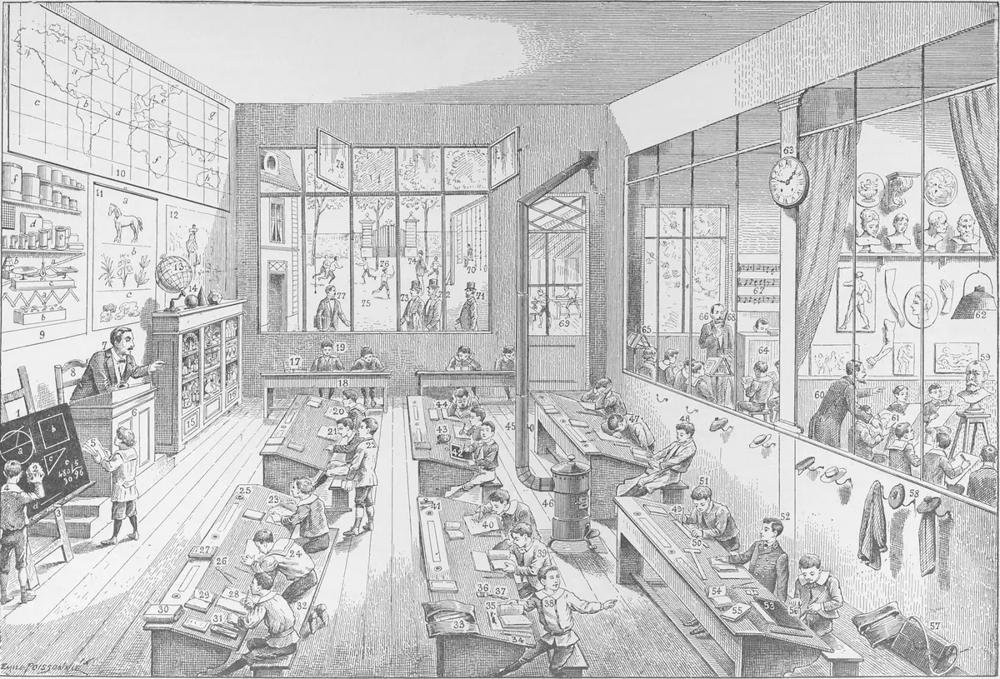
TABELO No 1 La skolo, la liceo, la docochambro.
TABLEAU No 1 L’École. — Le Lycée. — La Classe.
Deskripto generala.
I. Description générale.
1. — Ica tabelo reprezentas docochambro en liceo. En ica docochambro esas ok tabli ed ok benki . Sur singla benko sidas tri lernanti. La docisto sidas sur stulo en sua katedro .
1. — Ce tableau représente une salle de classe dans un lycée. Dans cette salle il y a huit tables et huit bancs . Sur chaque banc sont assis trois élèves. Le professeur est sur une chaise dans sa chaire .
2. — Sinistre di la katedro trovesas armoro vitrizita. Dextre esas la nigra tabelo kun la vishilo e la kreto .
2. — A gauche de la chaire se trouve une armoire vitrée . A droite est le tableau noir avec le torchon et la craie .
Super la katedro pendas mural tabeli (9, 11, 12) e mapo .
Au-dessus de la chaire sont suspendus des tableaux muraux (9, 11, 12) et une carte géographique .
3. — Ne omna lernanti sidas en sua plaso . Ioannes (4) stacas an la tabelo, il tenas la vishilo ed efacas la geometrial figuri.
3. — Tous les élèves ne sont pas assis à leur place . Jean (4) est au tableau; il tient le torchon et il efface les figures de géométrie.
Petrus esas proxim la katedro, il kolektas la skribo-taski , ed adportas li al docisto.
8Pierre est auprès de la chaire; il ramasse les
copies et les apporte au professeur.
64. —
Ica docisto esas la docisto pri la
vivanta lingui. Il docas a la lernanti parolar, lektar e skribar stranjera lingui
(Germana, Angla, Hispana, Italiana, Rusa o
Franca).
84. — Ce professeur est le professeur de
langues vivantes. Il enseigne aux élèves à parler, à lire et à écrire une langue étrangère
(allemand, anglais, espagnol, italien ou
russe).
65. — La docochambro esas tre vasta et tre klara. En la fundo esas larja
fenestro kun du
postigi e la
pordo vitrizita por aerizar e lumizar olu.
85. — La salle de classe est très vaste et très claire. Au fond il y a une large
fenêtre, deux
vasistas et une
porte vitrée pour l’aérer et l’éclairer.
6Ica docochambro ne esas kolda. En la mezo esas por varmigar ol tre bona
furnelo kun lua
tubo .
8Cette salle n’est pas froide, car il y a au milieu pour la chauffer un très bon
poêle avec son
tuyau .
6An la parieto esas fixigita
vest-hoki , de li pendas la kapvesti e la manteli di la skolani.
8A la cloison sont fixés des
portemanteaux ; à ces portemanteaux sont suspendus les coiffures et les manteaux des élèves.
66. — La
horlojo indikas non kloki e kin minuti.
86. — L’
horloge marque 9 heures 5 minutes.
6La
amuz-tempo (76) jus finis e la leciono rikomencas. L’amuzeyo situesas en la
korto . Ni vidas kelka lernanti qui ludas.
Submaestro surveyas li.
8La
récréation (76) vient de finir et la classe recommence. La récréation a lieu dans la
cour . Nous voyons quelques élèves qui jouent. Un
maître répétiteur les surveille.
67. — En la korto ni pluse vidas diversa personi, nome l’
inspektisto , la skolestro
(liceestro) e la
censoro .
87. — Dans la cour nous voyons encore différentes personnes; ce sont : l’
inspecteur , le
proviseur et le
censeur .
6L’inspektisto inspektas la skoli, la liceestro direktas la liceo, la censoro surveyas la studii.
8L’inspecteur inspecte les écoles, le proviseur dirige le lycée, le censeur surveille les études.
6La quaresma persono esas la
pordisto . Il portas sub brakio registro por enskribar l’absenti.
8Le quatrième personnage est le
concierge . Il tient sous son bras un registre pour inscrire les absents.
68. — En la fundo di la korto esas la
gimnastikal aparati e la laboreyo por la
manulabori .
88. — Au fond de la cour il y a les
appareils de gymnastique et un atelier pour les
travaux manuels .
6Dextre dil tabelo ni videskas la
doco-chambri pri
muziko e
desegno.
8A droite du tableau nous apercevons les
classes de
musique et de
dessin. (*) Por la baptonomi on konsilas anke transskribar li segun la formo Latina. To esas l’unika moyeno eskapar divergi sennombra. Cetere quale selektar inter Giovanni, Jean, Johann, Jan, Hans, John, Ivan, e. c.? Ka ni kreos vortaro specala por la baptonomi? Ni cherpez de la Latina lia nominativo e dicez : Ioannes, Ioanna; Iulius, Iulia; Iakobus; Andreas; Lukas. (Gram. Kompleta).
8II. Description détaillée. 79. — La lernanti dil unesma benko dextre dil katedro esas
Henrikus ,
Stefanus e
Karolus. 89. — Les élèves du premier banc à droite de la chaire sont
Henri,
Étienne et
Charles. 7Henrikus esas tre atencoza e laborema, il askoltas la docisto. Sur sua tablo il havas
kayero ,
libro ,
lexiko e
skribiluyo . Lua libro havas multa
pagini, singla chapitro kontenas plura
paragrafi e singla
lineo multa
vorti. 9Henri est très attentif et très travailleur; il écoute le professeur. Sur sa table il a un
cahier , un
livre , un
dictionnaire et un
plumier . Son livre a beaucoup de
pages; chaque chapitre contient plusieurs
paragraphes et chaque
ligne un grand nombre de
mots. 7Lua vicino Stefanus
esas fervoroza. Il notas sur sua kayero la leciono por la sequonta foyo. Il havas bela
skribo-formo. Lua libro esas klozita. Ni vidas nur la
kovrilo . Proxim lu trovesas lua
kompaso .
9Son voisin Étienne
est zélé. Il note sur son cahier la leçon pour la prochaine fois. Il a une jolie
écriture. Son livre est fermé et nous ne voyons que la
couverture . A côté de lui se trouve son
compas .
7Karolus
tenas per la manuo sua libro, il apertas olu por rilektar sua leciono. Il havas, quale singla lernanto,
inkuyo avan su. Il esas obediera.
9Charles
tient son livre à la main; il l’ouvre pour repasser sa leçon. Il a, comme chaque élève, un
encrier devant lui. Il est obéissant.
710. — An la tablo apuda esas
Ludovikus, Antonius e
Paulus. Ludovikus recitas sua
leciono e respondizas la
questioni dil docisto. Antonius
esas tre neatencoza, mem kelkafoye la docisto punisas lu. Paulus
esas bona kamarado, afabla et komplezema. Il esas tre atencoza.
910. — A la table à côté sont
Louis, Antoine et
Paul. Louis récite sa
leçon et répond aux
questions du professeur. Antoine
est très distrait; il attrape les mouches au lieu de suivre la classe. Le professeur le gronde et le blâme; parfois même il le punit. Paul
est un bon camarade, gentil et complaisant. Il est très attentif.
811. — Dop Henrikus trovesas
Georgius . Il ne esas mala kerlo, ma il esas
babilema, neatencoza e petulema. Lua
frivoleso e
desobediemeso efektigas
trublo dum la leciono ed ofte il meritas sever
averto. Lua
klado-kayero esas sordida, il
inko-makulizas lu per sua
plumo , pro to, il sempre uzas sua
efacokauchuko ; lua
kayeruyo esas lacerita, nam il esas tre neglijera. Pro quo il kunportas sua
krayoniero en la docochambro di
la vivanta lingui ?
911. — Derrière Henri se trouve
Georges . Ce n’est pas un mauvais garçon, mais il est
bavard, dissipé et remuant. Sa
légèreté et sa
désobéissance occasionnent du
désordre dans la classe et il mérite souvent un sévère
avertissement. Son
cahier de brouillon est sale, il y fait des
taches d’encre avec sa plume, aussi a-t-il toujours sa
gomme à effacer ; sa
serviette est déchirée, car il est très négligent. Pourquoi apporte-t-il son
portecrayon à la classe de langues vivantes ?
8Lua vicino Edmundus
ne amas lu. Il esas advere kelke indolenta, ma il esas tacera e tranquila. Il ne babilas; ma, vice askoltar, il preferas lektar la
rakonti di sua
lekto-libro. 9Son voisin Edmond
ne l’aime pas. Il est bien un peu paresseux, mais il est silencieux et il se tient tranquille. Il ne bavarde pas ; seulement, au lieu de suivre, il préfère lire les
histoires de son
livre de lecture. 8La triesma lernanto di ca benko esas
Ludovikus . Il esas diligenta. Il skribas sur blanka
paperfolio. Avan su, il pozis sua
absorbiva papero .
9Le troisième élève de ce banc est
Ludovic . Il est appliqué. Il écrit sur une feuille de
papier blanc. Devant lui, il a déposé son
buvard 41).
812. — La lernanti dil duesma benko, sinistre dil docisto, esas tre yuna. L’unesma, la mikra
Emilius, ne ja savas tre bone skribar, il kunportas sua
ardezo , sua
ardeza krayono e sua
sponjo .
1012. — Les élèves du deuxième banc, à gauche du professeur, sont très jeunes. Le premier, le petit
Émile, ne sait pas encore bien écrire, il apporte son
ardoise , son
crayon d’ardoise et son
éponge .
8Apud ilu esas
Augustus e
Bernardus . Ica bone laboras, ma lua
vestizeso esas tre neglijita.
10A côté de lui sont
Auguste et
Bernard . Celui- ci travaille bien, mais sa
tenue est très négligée.
813. — Dop li trovesas tri
indolenti. Albertus ne lernas sua lecioni.
Iakobus dormas vice askoltar. Lua
indolenteso efektigas a
lu reprochi e mem
punisi. Fine
Kristianus esas tro neserioza. Il male
kondutas e nule esforcas por emendar su.
1013. — Derrière eux se trouvent trois
paresseux. Albert n’apprend pas ses leçons.
Jacques dort au lieu d’écouter. Sa
paresse lui attire des
réprimandes et même des
punitions. Enfin
Christian est trop léger. Il se conduit mal et ne fait aucun effort pour se corriger.
914. — Lua vicini, kontraste, esas bonkonduta.
Ernestus prizas l’ordino e la regulozeso, il sempre uzas sua
linealo e sua
krayono . Il esas
externo. 1014. — Leurs voisins, au contraire, sont sages.
Ernest aime l’ordre et la régularité, il se sert toujours de sa
règle et de son
crayon . Il est
externe. 9Franciskus esas
interno, il esas vestizita per uniformo, manjas e kushas su en la liceo. Il esas bona
kamarado. 10François est
interne; il porte l’
uniforme du lycée; il y mange et il y couche. C’est un bon
camarade. 9Mauricius talias sua
krayono per sua
kulteleto , il esas tre sorgema.
10Maurice taille son
crayon avec son
canif , il est très soigneux.
9Il kunportas omna sua libri, sua
gramatiko sua
notlibreto , e mem
skribkuseno . Lua
skolsako esas an la sulo dop ilu.
10Il apporte tous ses livres, sa
grammaire , son
carnet de notes , et même un
sous-main . Son
sac de classe est par terre derrière lui.
9La du tabli funde di la docochambro okupesas da
bona lernanti .
10Les deux tables au fond de la classe sont occupées par de
bons élèves .
915. — En la
desegnochambro esas gracioza
modeli akrochita an la muro e
lampo kun
paralumo, suspendita ye la plafono. La
docisto esas tre pacienta, il korektigas la
desegnuri di la lernanti e docas a li desegnar
busto segun la naturo.
1015. — Dans la
classe de dessin, il y a de jolis
modèles accrochés au mur et une
lampe , avec un
abat-jour, suspendue au plafond. Le
professeur est très patient, il corrige les
dessins des écoliers et leur montre à dessiner un
buste d’après nature.
916. — La
muzikdoceyo semblas tre interesiva. En ol on lernas lektar la
muziko, solfejar la
gamnoti skribita sur la
linearo (do, re, mi, fa, sol, la, si = C. D. E. F. G. A. B.) konocar la
klefi e kantar charmanta
melodii. On pozas la muzikaji sur la
pupitro . Un de la lernanti
pianopleas e la
muzik-docisto skandas .
1016. — La
classe de musique semble bien intéressante. On y apprend à lire la
musique, à solfier les
notes de la gamme, écrites sur la
portée (do, ré, mi, fa, sol, la, si), à reconnaître les
clefs et à chanter de jolies
mélodies. On pose la musique sur le
pupitre . Un des élèves joue du
piano et le
professeur de musique bat la
mesure .
1017. — Ni videskas angulo di la
laboreyo por
manulabori , ube la pueri darfas lernar rabotar la ligno e limar la fero. To ne existas en omna licei.
1117. — Nous apercevons un coin de l’
atelier de travaux manuels
, où les enfants peuvent apprendre à raboter le bois et à limer le fer. Il n’y en a pas dans tous les lycées.
10La doceyo pri la cienci. 1018. — La docisto pri matematiko docas
a la lernanti
geometrio, aritmetiko, kalkulo e la
metral sistemo. Ni vidas sur la tabelo la precipua figuri geometriala :
rondo (a),
quadrato (b),
triangulo (c),
lineo (d).
1118. — Le professeur de mathématiques enseigne aux élèves la
géométrie, l’
arithmétique, le
calcul et le
système métrique. Nous voyons sur le tableau les principales figures de géométrie : un
cercle (a), un
carré(b), un
triangle(c) et une
ligne (d).
10Ni anke vidas un
operaco, ol ne esas
adiciono, nek
sustraciono, nek
multipliko, ol ya esas
divido (e).
11Nous voyons aussi une
opération; ce n’est ni une
addition, ni une
soustraction, ni une
multiplication, c’est une
division (e).
1019. — Sur la tabelo dil metral sistemo, ni vidas :
metro (a),
balanco (b) e lua
ponderili, litro (e),
dekalitro (f),
decilitro e
metral kubo (d).
1119. — Sur le tableau du système métrique, nous distinguons : un
mètre (a), une
balance (b) et ses
poids, un
litre (e), un
décalitre(f), un
décilitre et un
mètre cube(d).
10La lernanti anke studias
naturcienco , zoologio
(a), botaniko
(b), geologio
(c) e
historio .
11Les élèves étudient aussi l’
histoire naturelle (la zoologie
(a), la botanique
(b), la géologie
(c)) et l’
histoire .
10En l’armoro esas la aparati pri
fiziko e pri
kemio .
11Dans l’armoire se trouvent les instruments de
physique et de
chimie .
10Sur l’armoro esas :
sfero ,
kono e
terglobo .
11Sur l’armoire sont : une
sphère , un
cône et un
globe terrestre .
10Super la tabeli pendas
mapo reprezentanta la kin parti dil mondo :
Europa (g),
Azia (e),
Afrika (f),
Amerika (ab) ed
Oceania (h) e la du granda Oceani, la
Pacifiko (c) e l’
Atlantiko (d).
11Au-dessus des tableaux est suspendue une
carte géographique représentant les cinq parties du monde : l’
Europe(g), l’
Asie(e), l’
Afrique(f), l’
Amérique(ab) et l’
Océanie(h), et les deux grands Océans, l’
Océan Pacifique(c) et l’
Océan Atlantique(d).
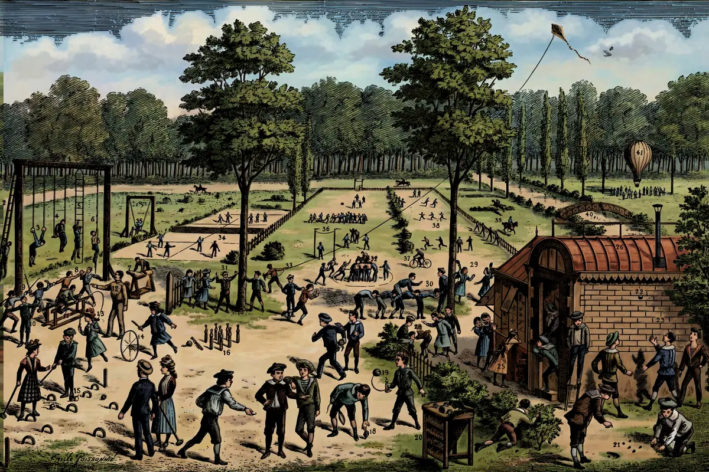
11TABELO No 2 La Homala Korpo. — La Amuztempo. — La Ludi. 12TABLEAU No 2 Le Corps humain. — La Récréation. — Les Jeux 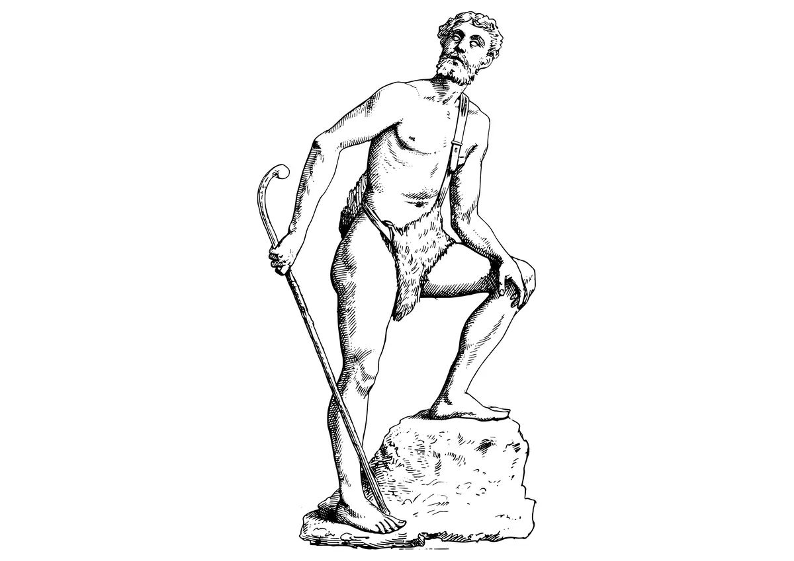
11La Korpo homala. (Simpla leciono pri naturcienco.) 12I. Le Corps Humain. (Simple leçon d’histoire naturelle). 111. — La precipua parti dil korpo homala esas : la
kapo, la
torso e la
membri. 121. — Les principales parties du corps humain sont: la
tête, le
tronc et les
membres. 112. — La kapo inkluzas du parti : la
kranio, qua kontenas la
cerebro e quan kovras la
hararo, e la
vizajo. 122. — La tête comprend deux parties : le
crâne, qui renferme le
cerveau, et que les
cheveux recouvrent, et le
visage (la figure).
113. — Sur nia desegnuro ni vidas nek la kranio nek la cerebro; ma ni tre klare vidas la importanta parti dil vizajo.
123. — Sur notre dessin nous ne voyons ni le crâne ni le cerveau ; mais nous apercevons très nettement les parties importantes du visage.
114. — Yen unesme la
fronto, qua indikas potenta intelekto, pensado sempre aganta. La
tempori esas tre libera. L’
okulo esas vivaca e larje apertita. Densa
brovo e longa
cilii shirmas lu.
124 — Voici d’abord le
front, qui annonce une intelligence puissante, une pensée toujours active. Les
tempes sont très dégagées. L’
œil est vif et bien ouvert. Un épais
sourcil et de long
cils le protègent.
115. — Yen pluse la
nazo e la
naztrui. La nazo servas ni por flarar e por respirar. Singlalatere dil nazo esas la
vangi, plu fore l’
oreli. L’infrajo dil vizajo konsistas ek la
boko e la
mentono. 125. — Voici encore le
nez et les
narines. Le nez nous sert à sentir et à respirer. De chaque côté du nez sont les
joues ; plus loin, les
oreilles. Le bas de la figure est formé par la
bouche et le
menton. 116. — Ni ne tre bone vidas li, nam la
labiobarbo e la
vangobarbo celas li de ni. Ma ni savas, ke la boko havas la du
labii, la
maxilo e la
mandibulo kun lia
denti, e la
lango. Per la boko ni parolas e manjas. Per la lango ni gustas la nutrivi.
126. — Nous ne les voyons pas très bien, car la
moustache et la
barbe nous les cachent. Mais nous savons que la bouche comprend les deux
lèvres, les
mâchoires, qui portent les
dents, et la
langue. Avec la bouche nous parlons et nous mangeons. Avec la langue nous goûtons les aliments.
127. — L’okulo, l’orelo, la nazo e la boko esas same kam la fingri, l’organi di la kin sensi : la
vidosenso, l’
audosenso, la
flarosenso, la
gustosenso, la
tushosenso. 127. — L’œil, l’oreille, le nez et la bouche sont, avec les doigts, les organes des cinq sens : la
vue, l’
ouïe, l’
odorat, le
goût et le
toucher. 128. — La kapo esas do un de la maxim interesanta parti dil korpo homala.
128. — La tête est donc une des parties les plus intéressantes du corps humain.
129. — La
kolo juntas la kapo a la torso. Ol inkluzas la
guturo e la
nuko. 139. — Le
cou réunit la tête et le tronc. Il comprend la
gorge et la
nuque. 1210. — La torso anke inkluzas multa organi esencala. En la
pektoro esas la
pulmoni, per qui ni respiras, e la
kordio qua esas la centro di la vivo. Kande la kordio cesas pulsar, la vivanta ento mortas.
1310. — Le tronc contient aussi beaucoup d’organes essentiels. Dans la
poitrine sont les
poumons, avec lesquels nous respirons, et le
cœur, qui est le centre de la vie. Lorsque le cœur cesse de battre, l’être vivant meurt.
1211. — La
kosti mantenas la pektoro.
1311. — Les
côtes supportent la poitrine.
1212. — La cetera parti dil torso esas la
flanko, la
dorso, la
shultri e l’
abdomino (ventro). Ni kushas ni sur la flanko o sur la dorso por dormar, ni portas la kargaji sur nia shultro.
1312. — Les autres parties du tronc sont le
flanc (côté), le
dos, les
épaules et le
ventre (abdomen). Nous nous couchons sur le côté ou sur le dos pour dormir, nous portons les fardeaux sur notre épaule.
1213. — En l’abdomino esas la
stomako e la
intestini. Li servas ni por digestar la nutrivi.
1313. — Dans l’abdomen se trouvent l’
estomac et les
intestins. Il nous servent à digérer les aliments.
1214. — Ni havas quar
membri : du
brakii e du
gambi. Per la brakii ni prenas, tenas, levas, rekolias la objekti; per la gambi ni stacas, marchas e kuras.
1314. — Nous avons quatre
membres, deux
bras et deux
jambes. Avec les bras nous prenons, nous tenons, nous soulevons, nous ramassons les objets; avec les jambes nous nous tenons debout, nous marchons et nous courons.
1315. — La
shultro juntas la brakio al korpo. Tre robusta
muskulo, la bicepso, movas la brakio quan la
kudo juntas al
avanbrakio. La
karpo konstitucas l’artiko di la
manuo, qua finas per la
fingri e l’
ungli. Sur la manuo ni dicernas
veino (ed arterio) en qua fluas la
sango. 1315. — L’
épaule unit le bras au corps. Un
muscle très fort, le biceps, fait mouvoir le bras que le
coude relie à l’
avant-bras. Le
poignet constitue l’articulation de la
main qui se termine par les
doigts et les
ongles. Sur la main nous distinguons une
veine (artère) dans laquelle coule le
sang. 1316. — La parti dil gambo esas : la
kruro, la
genuo e la
poplito, la
suro, di qua la
karno esas kovrita per la
pelo, la
maleolo e la
pedo. La gambal
osti esas tre grosa e tre forta. Ye l’extremajo dil pedo esas la
ped-fingri. La cetera parti esas la
plando e la
talono. 1316. — Les parties de la jambe sont : la
cuisse, le
genou et le
jarret, le
mollet dont la
chair est recouverte par la
peau. la
cheville et le
pied. Les
os de la jambe sont très gros et très forts. A l’extrémité du pied sont les
doigts de pied. Les autres parties sont la
plante du pied et le
talon. 1317. — Tal esas la preske kompleta deskripto dil korpo homala.
1317. — Telle est la description à peu près complète du corps humain.
13Noto. —
Per helpo dil expresuro : « me doloras ye... (la kapo e. c.) » la docisto povos riuzar ica tota vortaro ye la vidpunto di la bona o mala stando korpala. 13Nota. —
A l’aide de l’expression : J’ai mal à... (la tête, etc.), le professeur pourra reprendre tout ce vocabulaire au point de vue de la santé. 13Gimnastiko. (Naraco da un de la lernanti.) 14II. La Gymnastique. (Récit d’un élève). 1318. — Por esar flexebla, ajila e bonstanda, ni mustas exercar nia gambi e nia brakii. Pro to ni ludas e praktikas
gimnastiko. 1418. — Pour être souples, agiles et bien portants, nous devons exercer nos jambes et nos bras. C’est pourquoi nous jouons et nous faisons de la
gymnastique. 1319. — Dum la semano, ica du exerci eventas en la korto dil liceo (videz la tabelo N
o 1). Ma jovdie e sundie ni iras sur granda gazoneyo, ube ni havas spaco por kurar ed amuzar ni.
1419. — En semaine, ces deux exercices ont lieu dans la cour du Lycée (voir Tableau n
o 1). Mais, le jeudi et le dimanche, nous allons sur une grande
pelouse, où nous avons beaucoup de place pour courir et nous amuser.
1420. — Nia mastri e nia parenti kelkafoye akompanas ni ibe; ma
docisto pri gimnastiko ya direktas l’exerci.
1420. — Nos maîtres et nos parents nous y accompagnent parfois ; mais c’est le
professeur de gymnastique qui dirige les exercices.
1421. — Sur la gazoneyo, sinistre dil enireyo, trovesas la
gimnastikal aparati , ni klimas per la
skalo , ni renverse agas ye la
ringi e ye la
trapezo , ni hisas ni per la manui til la suprajo di la
korda skalo o di la
kordo nodoza .
1421. — Sur la pelouse, à gauche en entrant, se trouvent les
appareils de gymnastique , nous grimpons à l’
échelle , nous faisons des
renversements aux
anneaux et au
trapèze ; nous nous hissons avec les mains jusqu’au sommet de
l’échelle de corde ou de la
corde à nœuds .
1422. — Dume, nia kamaradi saltas super la
ligna kavalo o la
stangi paralela . Altri
boxas o
skermas kun maskilo e per
flereto. Fine, altri
halteragas .
1422. — Pendant ce temps nos camarades sautent par dessus le
cheval de bois ou les
barres parallèles . D’autres font de la
boxe ou de l’
escrime avec un masque et un
fleuret. D’autres enfin soulèvent des
haltères .
1423. — Cirkum la gimnastikanti, pueruli e puerini ludas per diversa
ludi. La puerini amuzas su per sua
ringego ; eli saltas per
kordo (13) od invitas sua fratuli e kuzuli a
kroket (15)-partio. Eli charmesas en forpulsar la
bulo di l’adverso per sua
ligna marteleto, ye l’instanto kande lu pensas trairar facile l’arketo !
1423. — Autour des gymnastes, garçons et fillettes jouent à différents
jeux. Les petites filles s’amusent avec leur
cerceau ; elles sautent à la
corde (13), ou bien elles invitent leurs frères et leurs cousins à faire une partie de
croquet (15). Elles sont enchantées de croquer la
boule de l’adversaire avec leur
maillet au moment où il croit traverser facilement un
arceau !
1424. — La pueruli preferas la ludi plu muskulala. Volunte li ludas per
kegli quin li abatas habile per
bulo . Li anke ne desprizas ludar per
tupio e
bilboketo o mem
ranoludo . Ma lia preferata ludi esas ya la
buleti e la
mur-baloneto , nam la muro di la
teplico esas tre apta por risaltigar la lejera baloneto.
1524. — Les garçons aiment mieux les jeux plus violents. Ils jouent volontiers aux
quilles , qu’ils abattent adroitement avec la
boule . Ils ne détestent pas non plus la
toupie et le
bilboquet ou même le
jeu de tonneau . Mais leurs jeux préférés sont encore les
billes et la
balle au mur , car le
mur de la
serre est très commode pour faire rebondir la balle légère.
1425. — La mikra Ioannes, iranta per sua
stelti , esas tre habila e tre bone savas kon servar l’equilibro. Proxim lu, kelka kamaradi ludas ye
celo-trovo en ta teplico e dop la
hego. Altri preferas la
frap-divino o la
flugbalono qua flugetas de un
raketo ad l’altra.
1525. — Le petit Jean, perché sur ses
échasses , est très adroit et sait fort bien garder l’équilibre. Près de lui, quelques-uns de ses camarades jouent à
cache-cache dans la serre et derrière la
haie. D’autres préfèrent la
main-chaude , ou le
volant , qui voltige légèrement d’une
raquette à l’autre.
(*) La infantal o pueral ludi havas ofte nomi pure nacionala. Ni agis por nomizar li en Ido maxim bone posible, sive inspirante ni per la ago ipsa, per qua li esas karakterizata, sive selektante la nacional nomo en ica od ita landi, kande lu ne esas tro nejusta. Ex. : la barelo-ludo (Germane e France) esas la rano-ludo (Angle) en olqua la ludanti esforcas jetar sua ronda disketi tra la boko di la metal rano qua beante stacas sur la kesto (barelo) truizita. La shultro-salto diferas de la dorso-salto nur per ico : por saltar super la kapo, la luderi apogas la manui sur la shultri di sua partenero, vice ke en la « dorsosalto » li apogas la manui nur sur ilua dorso. — Od anke kelki de la partoprenanti esas inklinita dum ke l’altri saltos super lia dorso apoganta la manui sur la shultro, l’unesmi devas tolerar la shoko sen subflexesar, la duesmi devas saltar sen perdar l’equilibro (Videz la tabelo ipsa).
1526. — Meze dil gazoneyo esas du arbori. An la pedo di un del du, sep od ok pueruli organizis partio di
shultro-salto . Ne en omna landi konocesas (esas konocata) ta ludo; ma omni savas quon esas la
dorso-salto, per qua la pueri ne ludas tafoye.
1526. — Au milieu de la pelouse il y a deux arbres. Au pied de l’un d’eux, sept ou huit garçons ont organisé une partie de
cheval fondu . On ne connaît pas ce jeu dans tous les pays ; mais tout le monde sait ce qu’est le jeu de
saute-mouton, auquel les enfants ne jouent pas en ce moment.
1527. La
blindo-ludo esas anke tre amuzanta; puerini e pueruli alterne metas la
okulbendo an sua okuli e sizas la nehabili qui lasas su kaptesar.
1527. — Le
colin-maillard est aussi fort amusant ; fillettes et garçons mettent tour à tour le
bandeau sur leurs yeux pour attraper les maladroits qui se laissent prendre.
1528. — Meze dil gazoneyo, yen ludo tre Franca ma kelke violentoza : to esas la
ursino multe plu bruisanta kam la tante tran quila ludo dil
kaito o mem kam la Angla ludo
teniso .
1528: — Au milieu de la pelouse, voici un jeu bien français, mais un peu brutal : c’est
l’ourse . Il est beaucoup plus bruyant que le jeu si paisible du
cerfvolant ou même que le jeu anglais du
lawntennis .
1629. — Ta lasta sporto esas la joyo di la granda lernanti. Nia docisti ipsa volunte praktikas olu. Ol postulas granda habileso kun ajileso ed ol tre plezas a me. Me lasas a la puerini la ludi di
ocililo .
1529. — Ce dernier sport fait la joie des grands élèves. Nos professeurs eux-mêmes s’y livrent volontiers. Il demande beaucoup d’adresse et d’agilité et me plaît fort. Mais je laisse aux petites filles les plaisirs de la
balançoire .
1630. — Me ne prizas altra ludo Angla qua forsan divenus danjeroza.
1530. — Je n’aime pas beaucoup non plus un autre jeu anglais qui peut devenir dangereux. Je veux
16Me intencas parolar pri la
ped-balono qua joyigas mea seniora fratulo. Me preferas nia olda
baro-ludo tam bone higienala e vere min brutala.
16parler du
foot-ball , qui fait le bonheur de mon frère aîné. J’aime mieux notre vieux
jeu de barres , tout aussi hygiénique et bien moins brutal.
1631. — Anke volunte me cirkumiras la gazoneyo per
biciklo .
1631. — Je fais aussi souvent un tour de pelouse à
bicyclette .
1632. — Dum la proxima yaro me lernos la
kavalko . Tante belesas kavalo qua gracioze pazas o trotas, e qua galope saltas super l’obstakli !
1632. — L’année prochaine j’apprendrai
l’équitation . C’est si beau un cheval qui marche gracieusement au pas ou au trot, ou bien qui saute les
obstacles au galop !
1633. — Somere, ni lernas la
natarto . Ni delektante plunjas e balnas en la klar e fresh aquo di la rivero. Kelkafoye fine ni lansas papera
balono qua majestoze acensas en l’atmosfero, quik kande ol esas plenigita per varma aero.
1633. — En été nous apprenons la
natation . Nous plongeons et nous nous baignons avec délices dans l’eau claire et fraîche de la petite rivière. Parfois enfin nous lançons un
ballon en papier
qui s’élève majestueusement dans les airs dès qu’il est plein d’air chaud.
1634. — Esas anke mult altra ludi, ma me ne finus enumerar oli ed on koncias segun ica rezumo, ke en la jovdii, on ne tre enoyas sur nia bela gazoneyo.
1634. — Il y a encore bien d’autres jeux.
Mais je n’en finirais pas de les nommer, et l’on voit par
ce simple aperçu que l’on ne s’ennuie guère le jeudi
sur notre belle pelouse.
16N.-B. —
La docisto facile kompletigos ta chapitro; plu detaloze deskriptante singla de la maxim importanta ludi. 16N. B. —
Le professeur complétera facilement ce chapitre en décrivant plus minutieusement chacun des jeux importants. 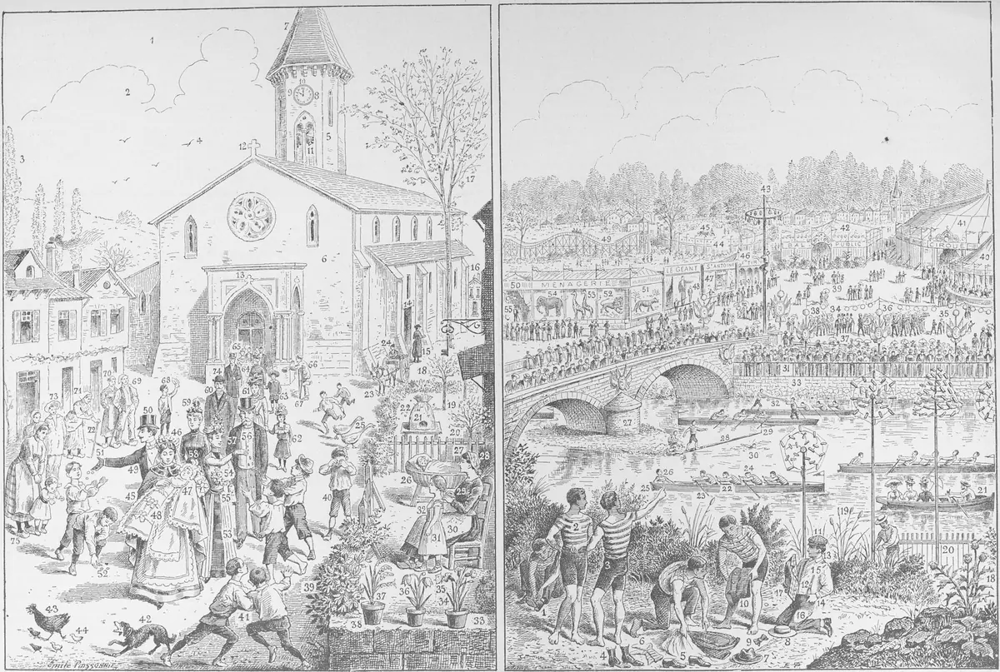
TABELO No 3 Puereso e Yuneso.
TABLEAU No 3 Enfance et Jeunesse.
(La 3-ma e 4-ma tabeli esas tale kombinita ke li prizentas en quar ceni familiala l’esencal nocioni pri la vetero, l’evo, la familio, la vestaro e la stando.)
(Les tableaux nos 3 et 4 sont combinés de façon à présenter en quatre scènes familiales les notions essentielles relatives au temps, à l’âge, à la famille, aux vêtements et à la santé.)
Unesma ceno.
Première scène.
Bapto-ceremonio en vilajo.
Un baptême au village.
1. — Ni esas en la printempo, en la monati marto, aprilo o mayo, en la dii di la semano, lundio, mardio, o merkurdio. Esas dek kloki matine.
1. — Nous sommes au printemps, au mois de mars, avril ou mai, un jour de la semaine, lundi, mardi ou mercredi. Il est dix heures du matin.
2. — La vetero esas bela, l’aero pura. La suno brilas. Kelka nubeti acensas en la blua cielo .
2. — Le temps est beau, l’air pur. Le soleil brille. Quelques nuages légers montent dans le ciel bleu.
3. — La arbori apene havas folii. La tenua popli e la alta platano til nun havas nur burjoni.
3. — Les arbres ont à peine des feuilles. Les minces peupliers et le grand platane ne sont encore couverts que de bourgeons.
4. — La hirundi rivenas e flugetas kun joyoza pipiado cirkum la flecho (7) dil klosheyo qua kronizas la kirko dil vilajo.
4. — Les hirondelles reviennent et voltigent en poussant de joyeux cris autour de la flèche (7) du clocher qui surmonte l’église du village.
5. — Tre simpla esas ta kirko kun lua granda portalo e grosa horlojo . La mikra indexo esas sur la cifro X, ol indikas la kloki. La granda esas sur XII (dimezo); ol indikas la minuti.
5. — Elle est bien simple cette église avec son grand porche et sa grosse horloge . La petite aiguille est sur le chiffre X; elle marque les heures. La grande est sur midi; elle marque les minutes.
186. — En la klosheyo, la
kloshi gaye sonadas. Ye la somito dil tekto stacas mikra
kruco petra.
6. — Dans le clocher, les cloches sonnent joyeusement. A l’extrémité du toit se dresse une petite croix de pierre.
187. — La kirko havas ne nur granda
portalo , ol havas anke pordeto laterala. Tra ica pordeto sioro
paroko vestizita per sua
sutano, ekiras la
sakristio e adiras la
parokeyo .
7. — L’église n’a pas seulement un grand portail , elle a aussi une petite porte latérale. Par cette porte M. le Curé , vêtu de sa soutane, sort de la sacristie et se rend au presbytère .
188. — Proxim ilu, yen la
laktovendistino kun sua
asno . El retrovenas de la urbo, en qua el kunportis bona lakto por l’infanti.
188. — Près de lui, voici la
laitière avec son
âne . Elle revient de porter à la ville son bon lait pour les petits enfants.
189. — Sinioro Aliboron (l’asno) esas tote kontenta pri ta matinal kuro. Lu delicoze aspiras l’aero balzamita da la parfumo dil
flori qui kovras la
fruktarbori dil vicina
frukto-gardeno. Tote rozea e blanka esas ta
persikieri ed
abrikotieri , e li esperigas bona rekolto.
189. — Maître Aliboron est tout content de cette course matinale. Il aspire avec délices l’air embaumé par le parfum des
fleurs qui couvrent les
arbres fruitiers du
verger voisin. Ils sont tout roses et tout blancs ces
pêchers et ces
abricotiers , et promettent une belle récolte.
1810. — Dume, la mikra
abeli dil
abeluyo (21) iras ibe marode kolektar sua dolca
mielo zumante.
1810. — En attendant, les petites
abeilles de la
rûche vont y butiner leur doux
miel en bourdonnant.
1811. — Ma quo eventas ? Yen ke la pueri dil vilajo adkuras e fugigas la
gansi pavorigita. To esas la ekiro del kirko da la sequantaro pos la
bapteso dil filio di la notario.
1811. — Mais que se passe-t-il ? Voilà les enfants du village qui accourent et font fuir les
oies effrayées. C’est le
baptême du fils du notaire qui sort de l’église.
1812. — La mikra Iakobus, en sua
bersilo , vekas pro la joyoza sonigado dil kloshi, e lua fratino Magdalena qua, el anke, volas vidar la bapto-sequantaro, pregas sua matro venar por pektar elua hararo e metigar elua vestaro ye la solio dil domo.
1812. — Le petit Jacques, dans son
berceau , se réveille au joyeux son des cloches, et sa sœur Madeleine, qui veut voir, elle aussi, le cortège, demande à sa mère de venir la peigner et l’habiller sur le seuil de la maison.
1913. — La matro asentas. El metas sua
fulardo (28), sua
korsajo (29) e sua
avantalo (30), ed el venas sidar sur mikra stulo avan la pordo. Magdalena havas nur sua
subjupo e sua
korseto (32).
1813. — La mère y consent. Elle met son
foulard (28), son
corsage (29) et son
tablier (30), et elle vient s’asseoir sur une petite chaise devant la porte. Madeleine n’a que son
jupon et son
corset (32).
1914. — Quante felica el esas ! El oblivias sua favorata flori, sua
dianti , sur qui pozas su la
papilioni , sua
tulipi , sua
maiflori (37), en
poti , sur la
muro , e sua
rozi (39) qui formacas hego tante bela. El konsideras la richa vestaro di la dami dil eskorto.
1814. — Comme elle est heureuse ! Elle oublie ses fleurs favorites, ses
œillets , où se posent les
papillons , ses
tulipes , ses
muguets (37), dans des
pots , sur le
mur ; et ses
roses (39), qui forment une si belle haie. Elle contemple les belles toilettes des dames du cortège.
1915. — La pueri dil vilajo ne tre atencas la vestaro. Li precipitas su e shokpulsas l’una l’altra por havar
bonboni (55) o
monetpeci . Un de li ploras
.
1815. — Les garçons du village ne s’occupent guère des toilettes. Ils se précipitent et se bousculent pour avoir des
bonbons (55) ou des
sous . L’un d’eux pleure
.
1916. — L’altra marchis sur la pedo di la
hundo qua kriante fugas e fugigas la
hanino e lua
hanyuneti .
1916. — L’autre a marché sur la patte du
petit chien , qui se sauve en criant et met en fuite la
poule et ses
poussins .
1917. — Avan l’eskorto marchas la
nutristino (45). El havas bela
kofio (46) kun longa rubandi. El portas la
novenaskinto tote vestizita per
denteli .
1917. — En tête du cortège marche la
nourrice (45). Elle a un beau
bonnet (16) avec de longs rubans. Elle porte le
nouveau-né , tout habillé de
dentelles .
1918. — Dop la nutristino venas la
baptopatrulo e la
baptomatro (53). Li disdonas la bonboni e monetpeci. La baptopatrulo havas
ganti (51) e
cilindra chapelo . La baptomatro manue tenas bela
buketo .
1918. — Derrière la nourrice viennent le
parrain et la
marraine (53). Ils distribuent les bonbons et les sous. Le parrain a des
gants (51) et un
chapeau haut de forme . La marraine tient à la main un joli
bouquet .
2019. — Dop li, ni vidas la
onklulo e la
onklino dil infanto. L’onklino havas eleganta
chapelo , l’onklulo nigra
redingoto e blanka jileto. Yen pose la
kuzulo e la
kuzino . Elca tenas per la manuo la
fratino dil novenaskinto, la mikra Berta.
1919. — Derrière eux nous apercevons l’
oncle et la
tante de l’enfant. La tante a un élégant
chapeau , l’oncle une
redingote noire et un gilet blanc. Voici ensuite le
cousin et la
cousine . Celle-ci tient par la main la
sœur du nouveau-né, la petite Berthe.
2020. — L’altra
fratulo di Berta marchas dope. Il donas la manuo a
parentino . La
amiki di la familio venas pose.
1920. — L’autre
frère de Berthe marche derrière. Il donne la main à une
parente . Au fond viennent les
amis de la famille.
2021. — Proxim la sequantaro, yen
mendikero apogata sur sua
grucho . Il demandas almono (mendikas).
1921. — Près du cortège, voici un
mendiant appuyé sur sa
béquille . Il demande l’aumône.
2022. — Altralatere esas mikra puerulo tre
polita . Il salutas e deziras «
bon jorno » al personi quin il konocas.
1922. — De l’autre côté est un petit garçon très
poli . Il salue et dit «
bonjour » aux personnes qu’il connaît.
2023. — La vilajani ekiris sua hemi por vidar la baptal defilo. Ni vidas
rurano kun sua
kotona boneto ed apude
ruranino . Pose
oldino apogata sur sua
bastono . Fine la
muelisto kun sua granda
felta chapelo e yuna ruranino pedvestizita per
ligna shui , qua docas marchar a sua infanteto.
1923. — Les gens du village sont sortis de leurs maisons pour voir passer le baptême. Nous voyons un
paysan avec son
bonnet de coton et près de lui une
paysanne . Puis une
vieille femme , appuyée sur son
bâton . Enfin le
meunier avec son grand
chapeau de feutre et une jeune
paysanne chaussée de
sabots , qui apprend à marcher à son petit enfant.
2024. — Ta ceno esas tre amuzanta.
2024. — Cette scène est très amusante.
201. — La
somero eventis. La varmega suno dil monato
junio (julio od
agosto) instigas la yuni a balnar e kanotagar.
201. — L’
été est venu. Le brûlant soleil du mois de
juin (
juillet ou
août) invite les jeunes gens à se baigner et à faire du canotage.
212. — Sur la dextra rivo dil fluvio, la kanoteri desvestizas su por partoprenar en la navigal ludi e regati.
202. — Sur la rive droite du fleuve, les canotiers se déshabillent pour prendre part aux jeux nautiques et aux régates.
213. — Un de li desmetas sua
shui ; il desligas (desbutonagas) oli. Lua du kamaradi ja esas pronta. De nun li havas nur sua
trikota vesto e
balnokalsono . Li konversas vartante sua amiki. Li parolas pri la ferio e la festo qua eventas sur l’altra rivo.
203. — L’un d’eux est en train de quitter ses
souliers ; il les délace (déboutonne). Ses deux camarades sont déjà prêts. Ils n’ont plus que leur
tricot et leur
caleçon . Ils causent en attendant leurs amis. Ils parlent de la foire et de la fête qui a lieu sur l’autre rive.
214. — An la sulo, proxim li, jacas la
vesti di lia kamaradi :
paro de
boteti (4),
shui ,
kalzeti ,
felta e
palia (8) chapeli e
kravato .
204. — Par terre, auprès d’eux, sont étendus les
vêtements de leurs camarades : une
paire de
bottines (4), des
souliers , des
chaussettes , des
chapeaux de
feutre et de
paille (8) et une
cravate .
215. — Un de la yunuli sorgoze faldis sua
vestio (10). Il pozas olu sur tualet-tuko, en qua lua vicino balde inkluzos la du
vesti.
205. — L’un des jeunes gens a soigneusement plié sa
veste (10). Il la pose sur une serviette, dans laquelle son voisin va serrer leurs deux
costumes.
216. — Sisesma puero tardesas. Il havas ankore sua
kasqueto (11) sur la kapo. Il desmetis nek sua
kamizo (12), nek sua
kolumo (13), nek sua
mansheti . Il manue tenas sua
jileto (17) e havas ankore sua
pantalono e
breteli . Certe il ne esos pronta por la kuro proxima.
206. — Un sixième garçon est en retard. Il a encore sa
casquette (11) sur la tête. Il n’a quitté ni sa
chemise (12), ni son
col (13), ni ses
manchettes . Il tient son
gilet (17) à la main et il a encore son
pantalon et ses
bretelles . Jamais il ne sera prêt pour la prochaine course.
217. — Proxim la yunuli, voyeto sur la lateri di qua esas multa
kardoni , duktas al bordo di la rivero, ube la patrulo Iakobus preparas inter la
kani (19) la
pirotekno (20) quan on pafos vespere.
207. — Près des jeunes gens, un sentier bordé de
chardons conduit au bord de la rivière, où le père Jacques prépare, dans les
roseaux (19), le
feu d’artifice (20) qui sera tiré le soir.
218. — Sur la rivero, kelka dami, shirmanta su per sua parasuni, promenas per
barko . Eli sequas la kuro qua esas tre interesanta. En singla
yolo (22), quar
remeri remas per sua tota forci, dum ke la
guvernanto tenas la
guvernilo e direktas la frajil rembatelo. La
remili kadence frapas l’aquo e la lejera bateli navigas kun rapideso vertijiganta.
218. Sur la rivière, plusieurs dames, s’abritant sous leurs ombrelles, se promènent en
barque . Elles suivent la course, qui est très intéressante. Dans chaque
yole (22), quatre
rameurs rament de toutes leurs forces, tandis que le
barreur tient le
gouvernail et dirige la frêle embarcation. Les
rames frappent l’eau en cadence et les légers bateaux filent à une allure vertigineuse.
229. — Kelka yunuli interluktas, proxim la pilastro dil ponto, pri la premio dil
buspritomasto . Un de li prudente marchas sur la flexebla e glitiganta masto por atingar la mikra
flago fixigita ye l’extremajo. Lua malchançoza
konkursanto falis en l’aquo. Il natas por tervenar.
219. — Quelques jeunes garçons se disputent, près de la pile du pont, le prix du
mât de beaupré . L’un d’eux s’avance avec précaution sur le mât élastique et glissant pour attraper le petit
drapeau fixé à l’extrémité. Son
concurrent malheureux est tombé à l’eau. Il nage pour regagner la rive.
2210. — Plu evoza yunuli
(batel)-turniras proxim la
kayo . Ta omna ludin asistas grandanombra
publiko (31) apogata an la
parapeto dil
ponto ed amasigita sur la
rivo. Kelka spektanti, tamen, riturnas su por sequar la ludo dil
premio-masto o por admirar l’
urbestral eskorto qua venas por la
disdono dil premii.
2110. — Des jeunes gens plus âgés
joutent près du
quai . Un
public (31) nombreux assiste à tous ces jeux, appuyé sur le
parapet du
pont et massé sur la
rive. Quelques spectateurs, cependant, se retournent pour suivre le jeu du
mât de cocagne ou pour admirer le
cortège municipal qui se rend à la distribution des prix.
2211. — Unesme, yen kelka
bubi preiranta la
muzikisti ; pose venas la
urbestro , la adyunti e la
komonal konsilantaro di la urbeto. Fine marchas la
pumpisti .
2111. — En tête, voici quelques
gamins qui pré
cèdent la
musique ; puis viennent le
maire , les
adjoints et le
conseil municipal de la petite ville. Les
pompiers ferment la marche.
2212. — Grandanombra homi esas sur la
ferioplaco . On venas vidar la diversa
baraki : la ligna
kavali (40), la
cirko (41) che qua ja komencis la reprezento; la
publika balo , ube la yunuli e la yunini dil urbo juas la plezuro dil
dansado.
2112. — Il y a beaucoup de monde sur le
champ de foire . On vient voir les différentes
baraques : les
chevaux de bois (40), le
cirque (41), dont la représentation est déjà commencée ; le
bal public , où jeunes gens et jeunes filles du pays se livrent au plaisir de la
danse.
2213. — En la fundo, ni vidas la
areni che qui la brava
matadoro Hispana luktas kontre la furioza
tauro , pose la
relgliteyo , la
pafeyo ube on exercas su uzar la
pafarmi e pafar al
skopo.
2113. — Dans le fond, nous apercevons les
arènes , dans lesquelles le vaillant
matador espagnol combat le
taureau furieux ; puis les
montagnes russes , le
tir , où l’on s’exerce à manier les
armes à feu et à tirer à la
cible.
2314. — Proxime, yen la
ferial teatro en qua on pleas la
komedio e la
dramato. Tre proxime, esas la barako dil
giganto (48) e dil
nano. La
staturo di l’unesma esas du metri plus dek-e-kin centimetri; la duesma esas apene tam granda kam infanto.
2214. — Près de là, voici le
théâtre forain, dans lequel on joue la
comédie et le
drame. Tout auprès, se trouve la baraque du
géant (48) et du
nain. La
taille du premier est de 2
m 15 ; le second est à peine aussi grand qu’un enfant.
2315. — Fine, yen la granda
menajerio kun lua
sovaja bestii, lua
tigrulo kun potenta
ungli, lua
leonulo kun densa
kolkrinaro, lua du
jirafi e lua
elefanto qua tante habile uzas sua
rostro.
2215. — Enfin, voici la grande
ménagerie avec ses
animaux sauvages, son
tigre aux
griffes puissantes, son
lion à la
crinière touffue, ses deux
girafes et son
éléphant qui se sert si adroitement de sa
trompe.
2316. — La
domtisto qua dresas ta bestii esas ye la pordo di la barako.
2216. — Le
dompteur qui dresse ces animaux est sur la porte de la baraque.
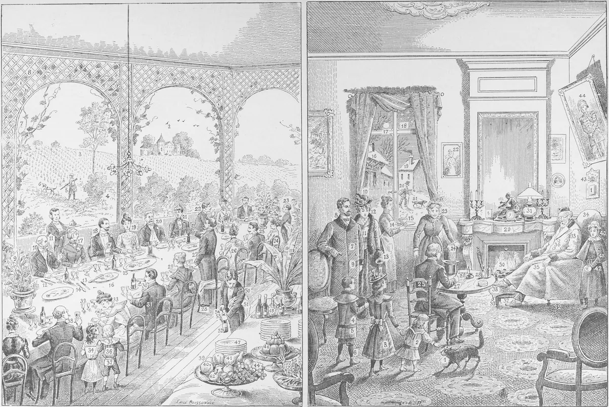
24TABELO No 4 Matur-evo ed oldeso. 23TABLEAU No 4 Age mûr et Vieillesse. 24Unesma ceno. La Mariaj-festino. 23Première scène. Le repas de noce. 241. — La yuni plugrandeskis. Un de li, Ioannes, su mariajas. Ni asistas la
mariaj-festino qua asemblas, cirkum la sama tablo, la familii di la gespozi.
231. — Les jeunes gens ont grandi. L’un d’eux, Jean, se marie. Nous assistons au repas de
noce, qui rassemble autour de la même table les familles des deux époux.
242. — Ni esas en
autuno, en la
septembromonato. La kolda vento di
oktobro e di
novembro ne ja spoliis la ruro de lua verda foliaro. La vesperal aero esas tepida e parfumoza; pro to la dineo eventas sub la
verando an la gardeno.
232. — Nous sommes en
automne, au mois de
septembre. Le vent froid d’
octobre et de
novembre n’a pas encore dépouillé la campagne de sa verte parure. L’air du soir est tiède et parfumé; aussi le dîner a-t-il lieu sous une
véranda , donnant sur le jardin.
243. — Fore, sur la
kolino , situesas la hemo di la gepatri di Ioannes, eleganta
kastelo (1) celata en la verdajo; bela viteyi, qui produktas bonega vino, kovras la pento di la kolineto. La vitkultivisto kultivas e sorgas li.
233. — Au loin, sur la
colline , est située la maison d’habitation des parents de Jean, un élégant
château (1) caché dans la verdure; de beaux vignobles, qui produisent d’excellent vin, s’étendent sur le versant du coteau. Le vigneron les cultive et les soigne.
244. — Super la viteyi, pasas flugo de
perdriki pavorigita dal proximesko dil
chasgardisto . Ilca, kun
pafilo sub brakio, e ban
doliera vildo-sako exploras la
busharo kun sua
hundo (6). Il surveyas la domeno ed impedas la furte-chaseri destruktar la vildo.
234. — Au-dessus des vignes, passe un vol de
perdrix , effarouchées par l’approche du
gardechasse . Celui-ci, le
fusil sous le bras, la
carnassière en bandoulière, bat les
buissons avec son
chien (6). Il surveille la propriété et empêche les braconniers de détruire le gibier.
245. — Exter la
verando, klimas
vit-espaliero de qua pendas densa
vito-grapi .
235. — A l’extérieur de la
véranda, grimpe une
treille, à laquelle sont suspendues de lourdes
grappes de raisin.
256. — La bela flori autunala, qui garnisas la
tablo , esas
krizantemi ; la
patrulo (10) di la mariajitino metis un de oli en la butontruo di sua frako.
236. — Les jolies fleurs d’automne qui garnissent la
table sont des
chrysanthèmes ; le
père (10) de la mariée en a mis un à la boutonnière de son habit.
257. — La repasto fineskas. La
servisto komencas adportar la deser-dishi e balde deprenos la diversa parti dil manjilaro,
kulieri ,
forketi ,
kulteli ,
pladegi quin on ne plus bezonas.
247. — Le repas touche à sa fin. Le
domestique commence à apporter les desserts et va enlever les différentes parties du couvert,
cuillères ,
fourchettes ,
couteaux ,
plats , dont on n’a plus besoin.
258. — Omni aspektas joyoza, e la rideto kun qua la
matro dil mariajitulo regardas sua filii pruvas lua feliceso.
248. — Tout le monde semble joyeux, et le sourire avec lequel la
mère du marié regarde ses enfants prouve son bonheur.
259. — Ta mariajo unionas du richa familii di la lando. Ioannes, la
spozulo , esas
filio di granda proprietero ed il divenas la
bofilio di habil industriisto.
249. — Ce mariage unit deux riches familles du pays. Jean, le
mari , est le
fils d’un gros propriétaire et il devient le
gendre d’un grand industriel.
2510. — La
spozi esas yuna e tamen li de longe esis
fiancita. La
yuna muliero , Martha, esas charmanta en sua
blanka robo garnisita per flori di oranjiero.
2410. — Les
époux sont jeunes et pourtant ils étaient
fiancés depuis longtemps. La
jeune femme , Marthe, est ravissante dans sa
robe blanche garnie de fleurs d’oranger.
2511. — Elua
bopatrulo esas tre felica havar tante jentila
bofiliino, e la
bomatro di Ioannes ridetas vidante tante bela sua
filiino. 2411. — Son
beau-père est très heureux d’avoir une
bru aussi gentille, et la
belle-mère de Jean sourit en voyant sa
fille si jolie.
2512. — Ye l’extremajo di la tablo, sidas la cetera
invititi ,
parenti, amiki, kuzuli, kuzini. Tablo-chefo , kun servo-tuko sub brakio, diligente servas li.
2412. — Au bout de la table sont assis les autres
invités , des
parents, des
amis, des
cousins, des
cousines. Un
maître d’hôtel , sa serviette sous le bras, les sert avec empressement.
2513. — Dextralatere di la tablo, yen dam
zelo ,
amiko di la yuna spozino, pose la
fratulo di elca, ilqua esas elua
honor-kompano . Il babilas kun sua
honor-damzelo (26) fratino dil spozulo e qua, per ta mariajo, divenas la
bofratino di Martha. El esas charmanta yuno. El havas bela
juveli, perlo-koliaro, ed ora
braceleto. 2413. — Du côté droit de la table, voici une
demoiselle ,
amie de la jeune femme, puis le
frère de celle-ci qui est son
garçon d’honneur . Il bavarde avec sa
demoiselle d’honneur (26) qui, par ce mariage, devient la
belle-sœur de Marthe. C’est une jeune fille charmante. Elle a de jolis
bijoux, un
collier de perles et un
bracelet en or.
2614. — Proxim li, la sioro qua stacas e levas sua glaso esas
amiko di la familio. Il esas un de la
testi dil spozulo. Il
tostas, drinkas por la
saneso di la yuna spozi e deziras a li longa feliceso. Il esas vestizita per ceremonial kostumo, per frako kun
shui vernisizita (28). Il esas l’akompananto di la
avino qua esas
vidva. 2414. — Près d’eux, le monsieur qui se tient debout et lève son verre est un
ami de la famille. Il est l’un des
témoins du marié. Il porte un
toast, boit à la
santé des jeunes époux et leur souhaite beaucoup de bonheur. Il est en costume de cérémonie, en habit avec des
souliers vernis (28). Il est le cavalier de la
grand’mère , qui est
veuve.
2615. — La yunulo en
frako , kun dina labiobarbo nigra, esas la
bofrato di Ioannes. Il esas eminenta injenioro. Il esas la vicino di
yuna damo tre eleganta, la
seniora fratino di Martha e la matro di la miniona puerineto qua venas, donante la brakio a sua kuzulo, ofrar floro e
dezirar ad elu
bonvespero. Ta damo havas tre bela
orelringi ed eleganta
kapvesto. 2515. — Le jeune homme en
habit à la fine moustache noire est le
beau-frère de Jean. C’est un ingénieur distingué. Il est le voisin d’une
jeune femme très élégante, la
sœur aînée de Marthe et la mère de la mignonne petite fille qui vient, en donnant le bras à son cousin, lui apporter une fleur et lui
souhaiter le bonsoir. Cette dame a de fort belles
boucles d’oreilles et une jolie
coiffure.
2616. — La mikra kuzulo, tante stranja pro sua
bluzo e sua bufanta
bracho (37) esas tre kompatinda. Il esas
orfano . Tre yuna il perdis sua patrulo e sua matro. Lua onklulo esas lua
tutelero (38), e restis celiba por edukar la kompatinda infanto. Il esas benigna viro. Il esas kelke kalva e tre miopa; il uzas
(naz)binoklo. 2516. — Le petit cousin, si drôle avec sa
blouse et sa
culotte (37) bouffante, est bien à plaindre. Il est
orphelin . Il a perdu tout jeune son père et sa mère. Son oncle lui sert de
tuteur (38). Il est resté célibataire pour élever le pauvre petit. C’est un excellent homme. Il est un peu chauve et très myope; il porte un
lorgnon.
2617. — Dop la festinani, sur tablo kovrita per
(tablo)-tuko, la
desero esas preparita. En kupego, yen frukti,
persiki ,
piri ,
pomi (42),
abrikoti e
vitberi . Proxime,
ananasi , bela
kuko ,
liquor-boteli e
champanio ed anke koloni de
pladi neta.
2517. — Derrière les convives, sur une table recouverte d’une
nappe, le
dessert est préparé. Dans une coupe, voici des
fruits, des
pêches , des
poires , des
pommes (42), des
abricots et des
raisins . A côté, des
ananas , un beau
gâteau , des bouteilles de
liqueur et du
champagne ainsi que des piles d’
assiettes propres.
2718. — La
keleristo desstopas
botelo de olda vino per
korko-tirilo . La
korka stopilo semblas tre desfacile tirebla. Ta keleristo havas
servo-tuko (54) sub brakio.
2518. — Le
sommelier débouche une
bouteille de vin vieux avec un
tire-bouchon . Le
bouchon semble très difficile à tirer. Ce
sommelier a une
serviette (54) sous le bras.
2719. — Pos la dineo, la siori adiros la fumeyo, e la dami iros prontigar su por la balo.
2519. — Après le dîner, les messieurs passeront au fumoir et les dames iront s’apprêter pour le bal.
27Duesma ceno. L’Aniversario dil avulo. 26Deuxième scène. L’anniversaire du grand-père. 271. — Dek yari pasis, la gepatri di Ioannes divenis oldi tre amanta sua tri nepoti, du
nepotuli e un
nepotino . Pro ke cadie eventas
l’aniversario dil avulo, la filii venas dezirar a li bona nasko-festo.
261. — Dix années se sont écoulées. Le père et la mère de Jean sont devenus des vieillards qui aiment beaucoup leurs trois petits enfants, deux
petitsfils et une
petite-fille . Comme c’est aujourd’hui l’
anniversaire du
grand-père, les enfants viennent lui souhaiter une bonne fête.
272. — La mikra Petrus esas ankore tre yuna, il evas nur tri yari. Il vidas la
kato (1) proximeskar. Il volas karezar lua bela
pilaro silkatra e lua longa
kaudo, il ne reflektas, ke sub la gracioza
pedi, celesas maligna ungli pintoza qui forsan skrachos ilu.
262. — Le petit Pierre est encore tout jeune, il n’a que trois ans. Il aperçoit le
chat (1) qui s’avance. Il veut caresser son beau
poil soyeux et sa longue
queue, il ne pense pas que, sous les jolies
pattes, se cachent de vilaines griffes pointues qui pourront bien l’égratigner.
273. — Lua fratino Gabriela, qua donas a lu la manuo, esas multe plu serioza e Marcellus kun sua granda
mantelo (4) e ledra
zono aspektas kelke vireskinta, malgre sua kurta bracho qua lasas videsar sua
kalzi .
263. — Sa sœur Gabrielle, qui lui donne la main, est beaucoup plus sérieuse, et Marcel, avec son grand
manteau (4) et sa
ceinture de cuir, a l’air d’un petit homme, malgré ses culottes courtes qui laissent apercevoir ses
bas .
284. — Lia patrulo metis sua dika
surtuto vintrala kun
fur-kolumo e, en sua
posho (9), il havas fulardo. Lua spozino havas sua felta chapelo garnisita per
plumi , sua
jako (11), sua
boa-furo (12) e sua
mufo .
264. — Leur père a mis son gros
pardessus d’hiver à col de
fourrure et, dans sa
poche (9), il a un foulard. Sa femme a son chapeau de feutre garni de
plumes , sa
jaquette (11), son
boa (12) et son
manchon .
285. — Esas tre kolda, nam regnas la vintro. La
nivo faladis dum la tota jorno e la tekti di la domi esas tote blanka. Samtempe kam la
nokto, la koldeso divenas mem plu akra. En la cielo, la
luno e la
steli brilas e trapasas
l’obskureso. 265. — Il fait très froid, car nous sommes en hiver. La
neige est tombée toute la journée et les toits des maisons sont tout blancs. Avec la
nuit, le froid se fait encore plus vif. Au ciel, la
lune et les
étoiles brillent et percent l’
obscurité.
286. — La kompatinda
blindo qua trairas la placo avan
l’apoteko duktata da sua
pudelo (21), esas tre desfelica. Iustinia, la
servistino , adportas de la koqueyo
boledo de tre varma
tizano sukrizita jeneroze.
266. — Le pauvre
aveugle qui traverse la place devant la
pharmacie , conduit par son
caniche (21), est bien malheureux. C’est du moins ce que pense Justine, la
bonne , qui apporte de la cuisine un
bol de
tisane bien chaude et bien sucrée.
287. — La
avino qua volas serchar sua
orelo-binoklo sur la tablo, por lektar la
preskripto quan la
mediko (25) jus skribis, su levas de sua stulego, apogante su sur sua
bastono (24).
277. —
Grand’maman , qui veut aller chercher ses
lunettes sur la table pour lire l’
ordonnance que le
docteur (25) vient d’écrire, se lève de son fauteuil en s’appuyant sur sa
canne (24).
288. — Ofte el sufras pro
maladetesi, vertiji, katareti, dento-dolori, lua gambi esas febla e lua okuli ne plus esas tre bona. Malgre to, volunte el mokas sua olda
mediko qua sempre volas preskriptar ad el
pociono . Cadie el esas tre joyoza pro ke el havas cirkum su sua yuna familio.
278. — Elle a souvent de légères
indispositions,
vertiges, rhumes, maux de dents; ses jambes sont faibles et ses yeux ne sont plus très bons. Malgré cela, elle se moque volontiers de son vieux
médecin, qui veut toujours lui prescrire une
potion . Aujourd’hui elle est toute joyeuse d’avoir sa petite famille autour d’elle.
289. — Esas komforte en la chambro bone klozita. En la marmora
kameno (29) flamifas
belega fairo , ed on sentas su felica en la dolca
lumo di la
lampo quan on jus acendis.
279. — Il fait bon dans la chambre bien close. Dans la
cheminée (29) de marbre flambe un
feu superbe, et l’on se sent heureux sous la douce
lumière de la
lampe que l’on vient d’allumer.
2910. — Mem la
avulo (33) obliviis, ke il esis malada, ke lua
reumatismo fixigas lu an sua
stulego e ke, hiere ankore, il havis
febro e sinkopi. Il ne plus memoras, ke dum la lasta vintro il sufris pro
pulmonito e ke rauka e penigiva
tusado igis lu tre sufranta.
2710. — Le
grand-père (33) lui-même oublie qu’il a été malade, que son
rhumatisme le tient cloué dans son
fauteuil et que, hier encore, il avait la
fièvre et des
syncopes. Il ne pense plus que l’hiver dernier il a eu une
fluxion de poitrine et qu’une
toux rauque et pénible le faisait beaucoup souffrir.
29E tamen tre desfacile il esis risanigata. De nun il standas kelke plu bone. Ma lua gambo quan il apogas sur
kuseno pozita sur mikra
tabureto anke dolorigas ilu.
27Et pourtant il ne s’est rétabli que difficilement. Maintenant il se porte un peu mieux. Mais sa jambe, qu’il tient appuyée sur un
coussin posé sur un petit
tabouret , lui fait encore bien mal.
2911. — Kande il esas sorgoze envelopita en sua varma
chambro-robo kun dika
butoni perlomatra e kande il havas proxim su, por lektar ad ilu la jurnalo, la mikra
orfanino (40) vestizita per blanka
kofio, per blua
robo (42) e
pelerino (41), il ne plendas.
2711. — Lorsqu’il est bien enveloppé dans sa chaude
robe de chambre à gros
boutons de nacre et qu’il a auprès de lui, pour lui lire son journal, la petite
orpheline (40), au bonnet blanc, à la
robe (42) et à la
pèlerine (41) bleues, il ne se plaint pas.
2912. — Singlayare, kande la
kalendario itere indikas la
dato dil unesma
decembro, il nepaciente vartas sua
nepoti, nam il savas, ke li ne oblivios ta
dato importanta.
2712. — Chaque année, lorsque le
calendrier ramène la
date du 1
er décembre, il attend ses
petits-enfants avec impatience, car il sait qu’ils n’oublieront pas cette
date importante.
2913. — Il emoce memoras la tempo tre olima kande il persone venis dezirar bona festo al glorioza
marshalo imperiala, di qua la por
treto pendas an la muro, e qua esas la
preavo di lua filii.
2813. — Il se rappelle avec émotion le temps bien lointain où il venait lui-même souhaiter une bonne fête au brillant
maréchal de l’Empire, dont le portrait est suspendu au mur, et qui est le
bisaïeul des enfants.
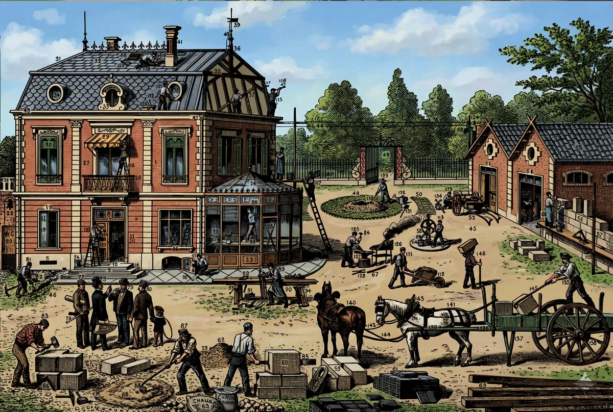
30TABELO No 5 La Domo e lua Konstrukto. 29TABLEAU No 5 La Maison et sa construction. 30Ioannes. — Onklo mea, me tre deziras savar quale on konstruktas
domo.
29Jean. — Mon oncle, je voudrais bien savoir comment on bâtit une
maison.
30La Onklulo
. — To esas tre facila, mea amiko, venez kun me, me montros a tu ta quan sioro Bernardus
igas konstruktar e quan me habitos.
29L’Oncle
. — C’est très facile, mon ami; viens avec moi, je te montrerai celle que M. Bernard
fait construire et que je dois habiter.
30Ioannes. — Qua do desegnis la
plano di ca domo?
29Jean. — Qui donc a dessiné le
plan de cette maison?
30L’Onklulo. —
L’arkitekto ; il prizentis tre klara desegnuro qua esis aprobata, e
l’entraprezisto komencis la labori.
29L’Oncle. — C’est l’
architecte ; il a présenté un dessin très clair, qui a été approuvé, et l’
entrepreneur a commencé les travaux.
30Ioannes. — Qua do esas l’entraprezisto?
29Jean. — Qui donc est l’entrepreneur?
30L’Onklulo. — Lu esas siorulo Blanko, la patrulo di tua amiko Iakobus. Il direktas la laboristi kun siorulo Rufo, l’arkitekto.
29L’Oncle. — C’est M. Leblanc, le père de ton ami Jacques. Il dirige les ouvriers avec M. Roux, l’architecte.
30Nu! Yen justatempe venas siorulo Blanko kun sua
linealo , e siorulo Rufo kun sua plano.
29Tiens, voici justement M. Leblanc avec sa
règle , et M. Roux avec son plan.
30Bon jorno, siori. Quale vi standas?
29Bonjour, Messieurs. Comment vous portez-vous?
30Siorulo Rufo. — Tre bone, danko. Bon jorno, Ioannes, quante kreskis ica infanto!
29M. Roux. — Très bien, merci. Bonjour Jean; comme il a grandi cet enfant!
30L’Onklulo. — Yes, vere, il esas mikra viro. Il esas tre serioza, on mustas informar lu pri omno quon il vidas. Cadie, il volus savar quale on konstruktas domo.
29L’Oncle. — Mais oui, c’est un petit homme. Il est très sérieux; il faut le renseigner sur tout ce qu’il voit. Aujourd’hui, il voudrait savoir comment on bâtit une maison.
31Siorulo Blanko. — Nu, venez kun me, amiketo, me quik explikos lo a tu, nam me tre amas la pueri qui volas instruktar su.
29M. Leblanc. — Alors, viens avec moi, mon petit ami, je vais t’expliquer cela, car j’aime beaucoup les enfants qui veulent s’instruire.
31Tu vidas ta laboristo qua tenas
shovelo (82) en manuo: il esas
ter-laboristo . Il exkavas
trancheo por pozar la aquo-tubaro. Il anke exkavis la sulo en la loko ube esas la domo, por ke la masonisto erektez la quar
muri. La parto di ta muri qua esas en la sulo esas nomizata
fundamenti (2). La spaco inkluzita inter la fundamenti formacas la
kelero . Ta kelero havas mikra fenestro nomizata
keler-fenestro ,
pordo ed eskalero.
29Tu vois cet ouvrier qui a une
pelle (82) à la main : c’est un
terrassier . Il creuse une
tranchée pour placer la conduite d’eau. C’est lui aussi qui a creusé le sol à l’endroit où se trouve la maison, pour que le maçon y élève les quatre
murs. La partie de ces murs qui est dans la terre s’appelle les
fondations (2). L’espace compris entre les fondations forme la
cave . Cette cave a une petite fenêtre appelée
soupirail , et une
porte .
31La
masonisto duris konstruktar la muri lasante aperturi por la
pordi e la
fenestri .
30Le
maçon a continué à élever ses murs en laissant des ouvertures pour les
portes et les
fenêtres .
31Ioannes. — Ma, ta masoniston me ne vidas!
30Jean. — Mais je ne le vois pas, ce maçon!
31S
o Blanko. — Nun il finis laborar en la domo. Il esas proxim la
kavaleyo , sur sua
eshafodo , il konstruktas la muro di la
lesiveyo .
30M. Leblanc. — Maintenant il a fini de travailler à la maison. Il est près de l’
écurie , sur son
échafaudage ; il construit le mur de la
buanderie .
31Il havas trulo, trogo ed
aplombo (109). Ma tu ne memoros ta nomi.
30Il a une truelle, une auge et
un fil à plomb (109). Mais tu ne retiendras pas ces noms-là.
31Ioannes. — Certe yes, nam me quik demandos de mea onklulo mikra trulo e trogo, e me ipsa fabrikos aplombo per kordeto.
30Jean. — Si, car je vais demander à mon oncle une petite truelle et une auge et je ferai moi-même un fil à plomb avec de la ficelle.
31L’Onklulo. — Ha! tre bone. Ma dicez a me, Ioannes, quon on bezonas por konstruktar domo?
30L’Oncle. — Ah! très bien. Mais dis-moi, Jean, que faut-il pour construire une maison?
32Ioannes. — On bezonas
quadri e
mortero .
30Jean. — Il faut des
pierres de taille et du
mortier .
32L’Onklulo. — Juste, videz ta viro, kun granda chapelo, sur sua
charioto . Il esas
char-duktisto . Singladie il adduktas hike
petra bloki . Il descharjas sua veturo en la korto, e la
quadro-taliisti talias la bloki e segas li per sua
petro-segilo .
Manulaboristo portas oli al masonisto qua lokizas li.
30L’Oncle. — Parfaitement; vois cet homme, avec son grand chapeau, sur cette
charrette . C’est un
charretier . Chaque jour il apporte ici des
blocs de pierre. Il décharge sa voiture dans la cour, et les
tailleurs de pierre taillent les blocs et les scient avec leur
scie à pierre . Un
manœuvre (140) les porte au maçon qui les pose.
32Dume, la
dilutisto preparas la mortero. Il bezonas
sablo ,
kalko ed
aquo . La kalko esas proxim ilu en
sako , mason-
servisto adportas ad ilu la sablo sur
brueto e l’
aprentiso esas an la pumpilo
. Il plenigas
sitelo . La mortero esas balde pronta. La
morter-portisto prenas lu ed adsupre portas, per la skalo, sur l’eshafodo, ube laboras masonisto qua finas ta latero di la domo.
30Pendant ce temps, le
gâche-mortier prépare le mortier.
Il a besoin de
sable , de
chaux et d’
eau . La chaux est près de lui dans un
sac ; un
aidemaçon lui apporte le sable dans une
brouette et l’
apprenti est à la
pompe . Il remplit un
seau . Le mortier est bientôt prêt. Le
porte mortier le prend et le monte par l’échelle sur l’échafaudage, où travaille un maçon qui termine ce côté de la maison.
32E nun, quale esas nomizata la laboristo qua laboras la
tekto ?
31Et maintenant, comment s’appelle l’ouvrier qui fait le
toit ?
32Ioannes. — Il esas
tektisto .
31Jean. — C’est le
couvreur .
32S
o Blanko. — Yes, ma unesme venas la
karpentisto .
31M. Leblanc. — Oui, mais il y a d’abord le
charpentier .
32La karpentisto laboras la
karpenturo . Il asemblas la
trabi per
stifti . Ta laboristi, ibe supre, kun sua larja brachi velura, esas karpentisti. L’una tenas trabeto, e l’altra sekas stifto per sua
hakilo . Ta qua esas proxim la
kameno esas la tektisto. Il klo vagas lati sur la
balki, ed
ardezi sur la lati. Kelkafoye il pozas teguli.
31Le charpentier fait la
charpente . Il assemble les
poutres avec des
chevilles . Ces ouvriers, là-haut, avec de larges culottes de velours, sont des charpentiers. L’un tient une petite poutre et l’autre coupe une cheville avec sa
hache . Celui qui est près de la
cheminée est le couvreur.
Il cloue des lattes sur les solives et des
ardoises sur les lattes. Quelquefois il pose des tuiles.
(*) Balk-o = D. Balken, E. joist, F. solive, I. travicello, R. balka, S. Port. viga. Teknikala radiko til nun ne adoptita, ma propozenda por tradukar la senco dil vorto F. solive, qua ne esas trabo F. poutre, nek trabeto. Ol esas ligna stango quadratigita qua suportas planko-sulo e plafono.
33La tekto dil kavaleyo esas
tegulkovrita , ta dil domi esas
ardezkovrita e ta dil verando esas
zinka .
31Le toit de l’écurie est en
tuiles , celui de la maison est en
ardoises et celui de la véranda est en
zinc .
33Ioannes. — Ka la tektisto laboras anke la zinka tekti?
31Jean. — Est-ce que le couvreur fait aussi les toits en zinc ?
33S
o Blanko. — No, ma la
zinko-laboristo o la
plombo-laboristo, ta qua pozas
luko sur la tekto di la domo. Il pozas anke la pluv-
kanali e la
tekto-kanali . Il kunsoldas la zinko e la lado. Il fixigis la
parafulmino e la
vento-flecho (39) sur la
geblo .
31M. Leblanc. — Non, c’est le
zingueur ou le
plombier, cet ouvrier qui pose une
lucarne sur le toit de la maison. Il pose aussi les
chéneaux et les
gouttières . Il soude le zinc et le fer-blanc. C’est lui qui a fixé le
paratonnerre et la
girouette (39) sur le
pignon .
33Ioannes. — Tale la domo esas parfinita?
31Jean. — Alors la maison est finie?
33S
o Blanko. — Ne komplete. La
gipsisto konstruktas per
briki la parieti qui dividas olu a diversa chambri. Il indutas per
gipso la
plafoni e la muri. Nun il laboras la plafono di la
verando . Il havas, quale la masonisto,
trulo (100) e
trogo .
31M. Leblanc. — Pas tout à fait. Le
plâtrier construit avec des
briques les cloisons qui la divisent en différentes pièces. Il enduit de
plâtre les
plafonds et les murailles. Il fait en ce moment le plafond de la
véranda . Il a, comme le maçon, une
truelle (100) et une
auge .
33Pose la menuzisto laboras la pordi, la fenestri, la
parqueti e la
shutri .
31Puis le menuisier fait les portes, les fenêtres, les
parquets et les
volets .
33Nun il laboras en la korto sur sua labor-
benko . Il havas
segilo por segar la ligno
,
rabotilo ,
fixigilo ,
cizelo (94 bis),
kompaso , e ligna
martelo (95 bis).
32Il travaille maintenant dans la cour sur son
établi . Il a une
scie pour scier le
bois , un
rabot , un
valet , un
ciseau (94 bis), un
compas et un
maillet (95 bis).
34Ioannes. — Ha! ma esas plu amuzanta menuzar kam masonar. Onklo mea, tu kompros por me labor-benko, segilo e rabotilo, nam me balde laboros kabano por Medor.
32Jean. — Ah! mais c’est encore plus amusant d’être menuisier que d’être maçon. Mon oncle, tu m’achèteras un établi, une scie et un rabot, car je vais faire une niche pour Médor.
34L’Onklo. — Yes, puereto.
32L’Oncle. — Oui, mon enfant.
34Ioannes. — Quante kontenta me esas! E qua esas ta qua stacas proxim l’eniro-pordo?
32Jean. — Que je suis content! Et celui-là, près de la porte d’entrée, qui est-ce?
34S
o Blanko. — Il esas
indutisto . Il stacas sur lua skalo kun poto de
farbo e sua
pinselo . Il indutas la ligno dil eniro-pordo por plu longa konserveso.
32M. Leblanc. — C’est un
peintre . Il est sur son échelle avec son pot de
peinture et son
pinceau . Il enduit le bois de la porte d’entrée pour le conserver plus longtemps.
34Lu anke glutinas la paperi en la apartamenti.
32C’est lui aussi qui colle les papiers dans les appartements.
34La
tapetisto qua esas sur
skalo , sur la
balkono , pozas
storo .
32Le
tapissier qui est sur une
échelle , sur le
balcon , pose un
store .
34La laboristo stacanta proxim la granda fenestro esas la
vitristo . Il fixigas la vitro-
kareli per
mastico . Ta altra laboristo, genupozinta proxim la pordo di la kelero esas
seruristo Il pozas
seruro . Lua
limilo esas proxim ilu.
32L’ouvrier près de la grande fenêtre est le
vitrier . Il pose les
vitres avec du
mastic . Cet autre ouvrier, agenouillé près de la porte de la cave, est un
serrurier . Il place une
serrure . Sa
lime est près de lui.
34Ioannes. — Kad esas anke seruristo, ta laboristo qua frapas per sua
martelo sur ferajo?
32Jean. — Est-ce aussi un serrurier, celui qui frappe avec son
marteau sur un morceau de fer?
34S
o Blanko. — Plujustadice, lu esas forjisto
. Il forjas
feraji por l’
elektristo (124) qua esas sur la tekto di la
vetureyo . Il havas
forjeyo ,
amboso e
pinco .
32M. Leblanc. — C’est plutôt un
forgeron . Il forge des
morceaux de fer pour
l’électricien (124) qui est sur le toit de la
remise . Il a une
forge , une
enclume et une
pince .
34L’elektristo fixigas la
kupra filo dil telefono.
32L’électricien pose le
fil de cuivre du téléphone.
35L’Onklo. — Funde dil
korto , proxim la
greto (47) e la
pordego tu vidas la
gardenisto . Il preparas la
gardeneto . Il spadagis la tero per sua
spado , il semas semini e rastas per la
rastilo (130). Pose, per sua
arozilo , il aquizos la
bedi (150) e la planti kreskados.
32L’Oncle. — Au fond de la
cour , près de la
grille (47) et de la
porte cochère , tu vois le
jardinier . Il prépare le petit
jardin . Il a bêché la terre avec sa
bêche ; il sème des graines et ratisse avec le
râteau (130). Puis, avec son
arro soir , il arrosera les
plates-bandes (150) et les plantes pousseront.
35La
kaval-servisto qua jus flegis la kavalo e donis a lu nutrivo netigas la
veturo per sponjo,
manupumpilo (134) ed aquo-siteledo. Pose il rienirigos lu en la vetureyo e klozos la pordo per la dika
riglo .
33Le
valet d’écurie , qui vient de soigner le cheval et de lui donner à manger, nettoie la
voiture avec une éponge, une
pompe à main (134) et un seau d’eau. Puis il la rentrera dans la remise et fermera la porte avec le gros
verrou .
35Yen tu kontenta, me opinionas, tu havis suficant expliki.
33Te voilà satisfait, j’espère, tu as eu assez d’explications !
35Ioannes. — Yes, onklo mea, ma volunte me vidus l’internajo di la domo.
33Jean. — Oui, mon oncle; mais je voudrais voir l’intérieur de la maison.
35L’Onklo. — To eventos morge. Siorulo Rufo explikos a tu la plano ed indikos a tu la nomo di singla chambro.
33L’Oncle. — Ce sera pour demain. M. Roux t’expliquera le plan et t’indiquera le nom de chaque pièce.
35Interna aranjo dil domo. 33Disposition intérieure de la maison. 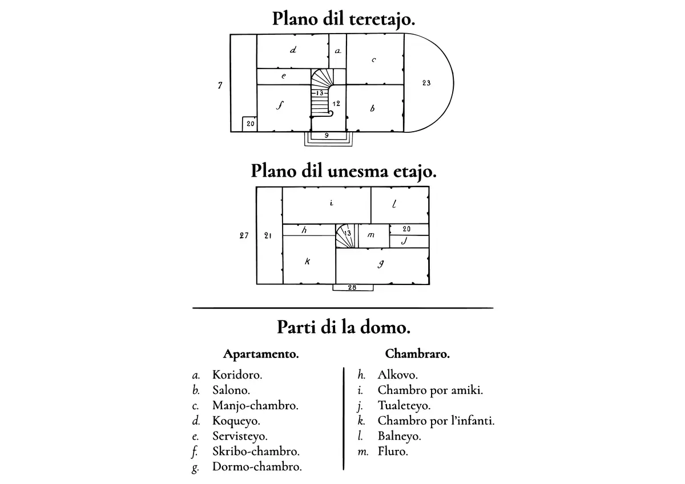
35L’Arkitekto. — Venez, Ioannes, me quik igos tu explorar la diversa parti di la domo.
33L’Architecte. — Viens, Jean, je vais te faire visiter les différentes parties de la maison.
35Ni enirez la
teretajo . Yen la butono di la
klosheto . Ni acensas la tri
gradi (14) dil
perono , ni transiras la
solio dil eniro-
pordo e yen ke ni esas an la pedo dil
eskalero .
33Entrons au
rez-de-chaussée . Voilà le bouton de la
sonnette . Nous montons les trois
marches (14) du
perron , nous passons le
seuil de la
porte d’entrée et nous voici au pied de l’
escalier .
35Ioannes. — To esas la koridoro.
33Jean. — C’est le corridor.
36L’Arkitekto. — No, to esas la
vestibulo . La
koridoro (a) esas ye l’extremajo. Dextre, yen la
salono (b) e la
manjo-chambro (c), opoze a la manjo-chambro esas la
koqueyo (d) e la
servisteyo (e), pose avane la
skribo-chambro(f). La
verando kun sua
vitrizita pordo esas proxim la salono.
33L’Architecte. — Non, c’est le
vestibule . Le
corridor (a) se trouve au bout. A droite, voici le
salon (b) et la
salle à manger (c); en face de la salle à manger se trouvent la
cuisine (d) et l’
office (e); puis sur le devant, le
cabinet de travail (f). La
véranda , avec sa
porte vitrée , est auprès du salon.
36Ni quik acensos l’eskalero, Sustenez tu per la
pasamano e kontez la gradi. Li esas dek- e-quar. Yen la
fluro (m), ni esas sur l’unesma
etajo .
33Nous allons monter l’escalier. Tiens la
rampe et compte les marches. Il y en a quatorze. Voici le
palier (m), nous sommes au
premier étage .
36Opoze a l’eskalero, esas la
latrino e la
tualeteyo (j). Dextre bela
dormo-chambro (g) kun du fenestri an la
fasado (1) di la domo. Sinistre, esas la
balneyo (1) e la
chambro por amiki (i) kun grand
alkovo (h): Proxim la dormo-chambro esas la
chambro por l’infanti (k). Ol situesas an vasta
teraso . Sub ica teraso esas altra latrino
e, an la muro, yen la
klosho qua sonas por la dineo.
34En face de l’escalier, il y a les
cabinets d’aisances et le
cabinet de toilette (j). A droite, une belle
chambre à coucher (g) avec deux fenêtres sur la
façade (1) de la maison. A gauche, c’est la
salle de bains (1) et une
chambre d’amis (i) avec une grande
alcôve (h). A côté de la chambre à coucher, il y a la
chambre des enfants (k). Elle donne sur une vaste
terrasse . Sous cette terrasse sont d’autres
cabinets d’aisances et, contre le mur, voici la
cloche pour sonner le dîner.
36Ioannes. — Ni irez sur la
duesma etajo.
34Jean. — Allons au
deuxième étage.
36L’Arkitekto. — Ne existas duesma etajo. Sub la tekto esas nur
mansardi e la granario
(34). Ni finis la exploro, ni povas retrodecensar.
34L’Architecte. — Il n’y a pas de deuxième étage. Sous le toit, il n’y a que des
mansardes et le
grenier (34). Nous avons fini la visite, nous pouvons redescendre.
36Ioannes. — Danko, sioro, to esas tre interesanta. Me quik naracos a mea patrulo omno quon me vidis.
34Jean. — Merci, Monsieur, c’est très intéressant. Je vais raconter à papa tout ce que j’ai vu.
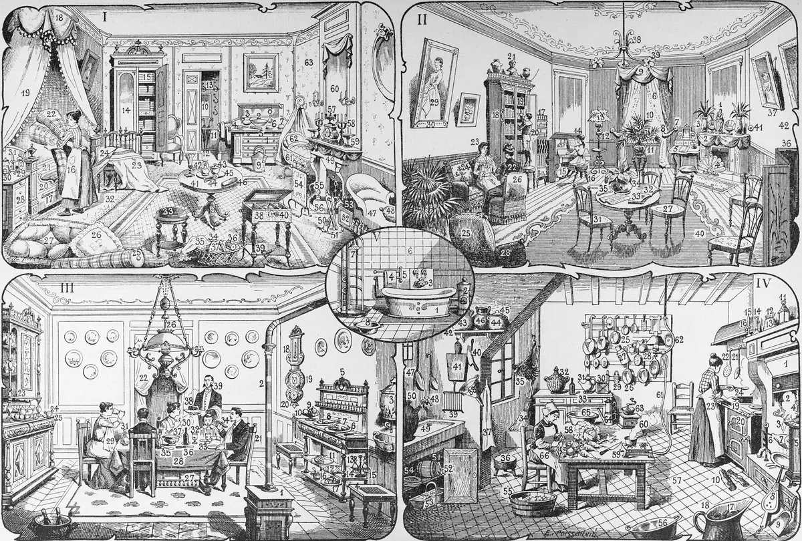
37TABELO No 6 L’interna Domo, la Moblaro, la Nutrado, la Lumizado. 35TABLEAU No 6 La Maison intérieure. — Les Meubles. — La Nourriture. — L’Éclairage. 37La domo esas parfinita. L’onklulo di Ioannes esas instalita en sua nova domicilo, di qua ni konocas l’aranjeso. Nun ni videz quale il moblizis sua domo. Ni exploros unesme : 35La maison est terminée. L’oncle de Jean est installé dans son nouveau domicile, dont nous connaissons la distribution. Voyons un peu comment il a meublé sa maison. Nous visitons d’abord : 35I. — La Chambre à coucher. 371. — Ni arivas neoportune, nam la chambristino esas okupata en netigar la
chambro. 351. — Nous arrivons mal à propos, car la bonne est occupée à faire le
ménage. 372. — Sur la
tualet-tablo esas hike ed ibe diversa objekti per qui on lavas su, pektas su, kurtadice on tualetas. Li esas la
kuveto e l’
aquo-krucho , la
kapo-brosilo (4), la
pektilo , la
sapono e la
sponjo , fine
flakoneto por la dentifrico liquida.
352. — Sur la
table de toilette sont éparpillés les différents objets avec lesquels on se lave, on se peigne, en un mot, on fait sa toilette. Ce sont la
cuvette et le
pot à eau , la
brosse à cheveux (4), le
peigne , le
savon et l’
éponge ; enfin un petit
flacon pour l’eau dentifrice.
373. — An la sulo, avan la tualet-tablo, yen la
sitelo por rekoliar la aqui sordida.
353. — Par terre, devant la toilette, voici le
seau pour recevoir les eaux sales.
374. — Ni vidas en l’
avanchambro kelka
vestohoki e du
parapluvi (11) en la
parapluvuyo .
354. — Nous apercevons dans l’
antichambre quelques
portemanteaux et deux
parapluies (11) dans le
porte-parapluies .
375. — Altralatere di la pordo esas la
spegularmoro qua kontenas la
linjaro .
355. — De l’autre côté de la porte se trouve l’
armoire à glace , qui contient le
linge .
376. — Ni profitez ke la
chambristino aranjas la
lito , por explorar olua diversa parti. La
lito-framo kontenas bona
resort-matraco sur qua Iustina quik pozos lana
ma traco . Pose el prenos de la stuli la du
littuki e la
kovrilo . Lore el pozos sur la lit-kapo, la
transversa kuseno (25) la
kap-kuseno qui esas kun l’
ederduna kovrilo sur la
tapiso litala . El uzas plum-fasko por senpolvigar la
kurteni e la
lito-doselo e yen parto di la laboro parfinita.
356. — Profitons de ce que la
femme de chambre (16) fait le
lit pour en étudier les différentes parties. Le
bois de lit contient un bon
sommier sur lequel Justine va déposer un
matelas de laine. Elle prendra ensuite sur les chaises les deux
draps et la
couverture . Puis elle placera à la tête du
lit le
traversin (25) et l’
oreiller qui sont avec l’
édredon sur la
descente de lit . Un coup de plumeau pour secouer la poussière des
rideaux et du
ciel de lit , et voilà une partie de la besogne terminée.
387. — Lore el devos ordinar kelke la
lito-tableto , ritensar la
vekigilo , preparar la
nokto-lampeto (30), deprenar la
bujio por netigar la kandeliero.
367. — Il faudra alors mettre un peu d’ordre sur la
table de nuit , remonter le
réveille-matin , préparer la
veilleuse (30) et emporter la
bougie pour nettoyer le bougeoir.
38La laborkorbo e la kamenal acesoraji. 388. — La
laborkorbo proxim la
tabureto (33) anke tre bezonas esar ordinata. El devos faldar la
broduri , inkluzar en la
labor-tablo la
fingro-chapo, la
filo , l’
aguli (37) e la
cizo (39) e klozar per la
klefo la kovrilo di la tablo.
368. — La
corbeille à ouvrage , auprès du
tabouret (33), a aussi grand besoin d’être rangée. Il faudra plier la
broderie , serrer dans la
table à ouvrage le
dé, le
fil , les
aiguilles (37) et les
ciseaux (39) et fermer avec la
clef le couvercle de la table.
389. — Sur la
unpeda tablo (41) dil mezo, Iustina rinovigos l’aquo di la
karafo (42). El pozos
sukro en la
sukruyo , netigos la
sukro-prenilo (44) e deprenos la
vesto-brosilo .
369. — Sur le
guéridon (41) du milieu, Justine renouvellera l’eau de la
carafe (42). Elle mettra du sucre dans le
sucrier , nettoiera la
pince à sucre (44) et enlèvera la
brosse à habits .
3810. — La dextra latero di la chambro postulos de elu min multa laboro, nam la
longa stulego e lua
kuseno esas en sua justa plaso, e, pro ke ne esas kolda vetero, nulo esas diplasita inter la acesoraji (implementi) di la
kameno .
Shovelo ,
pincegi ,
morilii ,
cindro-barilo esas neta; la
fairo-skreno ne esis diplasita e la
ligno-kesto (52) esas bone provizita per
lenii .
3610. — Le côté droit de la chambre lui donnera moins de travail, car la
chaise longue et son
coussin sont à leur place; et, comme il ne fait pas froid, rien n’est dérangé parmi les accessoires de la
cheminée .
Pelle ,
pincettes ,
chenets ,
garde-cendre sont propres; l’
écran n’a pas été dérangé et le
coffre à bois (52) est bien garni de
bois .
(*) Babo = infanteto, la E. baby, F. bébé, I. bambino.
(*) Lambrequino = F. lambrequin, S. lambrequines, Port. lambrequins, mem D. E. lambrequins, do D. E. F. P. S. }
3911. — Tamen el devos senpolvigar la
pendul-horlojo , la
kandelabri (58) e la
poshkozuyi (59), fine vishar la
spegulo .
3611. — Il faudra cependant épousseter la
pendule , les
candélabres (58) et les
vide-poches (59), puis essuyer la
glace .
3912. — Pri la
bersilo (61) dil infanteto (dil babo
), ol ja esas pronta.
3612. — Quant au
berceau (61) du bébé, il est déjà tout prêt.
Nota. —
Le professeur pourra prendre les mots les plus importants de ce vocabulaire pour décrire une chambre d’hôtel infiniment plus simple. 391. — Nun yen la salono. Lu esas tre bela
chambro. La kameno, qua situesas an la dextra angulo esas ornita per delikata
statueto , per du bela
vazi e drapirita per velura
lambrequino .
371. — Voici maintenant le salon. C’est une très jolie
pièce. La cheminée, qui se trouve dans l’angle de droite, est ornée d’une fine
statuette , de deux beaux
vases et drapée avec un
lambrequin de velours.
392. — Por impedar ke la cintili di la herdo bruleskez la tapiso, on pozis avan la herdo kupra
paracintilo (4).
372. — Pour éviter que les étincelles du foyer ne mettent le feu au tapis, on a placé devant l’âtre un
pare-étincelles (4) en cuivre.
393. — Proxime, eleganta
skribo-tablo (5) siorinala esas apertita. Sur olu la
domo-mastrino skribas sua letri.
373. — Un élégant
bureau (5) de dame est ouvert à côté. C’est là que la
maîtresse de maison vient écrire ses lettres.
394. — La fenestro esas garnisita per
vitral kurteni kun
ligili akrochita al
pateri e per stofa kurtenegi
supre drapirita .
374. — La fenêtre est garnie de
rideaux de vitrage relevés dans des
embrasses accrochées aux
patères et de grands rideaux d’étoffe surmontés d’une
draperie .
395. — En l’embrazuro di la fenestro,
potuyo kontenas verda
planto , splendida palmiero di qua la folii su extensas preske til la
petrol-lampo (12).
375. — Dans l’embrasure de la fenêtre, un
cachepot contient une
plante verte, un palmier magnifique dont les feuilles s’étendent presque jusqu’à la
lampe (12) à pétrole.
396. — La
lum-shirmilo (13) di la lampo esas aranjita da Maria, la charmanta yuni no
(14) qua esas an la piano
. Tre rekte sidanta sur la
tabureto (16), el studias muzikajo. El esas tre habila e sorgema, quale pruvas elua
muzik-armoro (17) qua esas perfekte ordinita.
376. — L’
abat-jour (13) de cette lampe a été fait par Marie, la charmante
jeune fille (14) qui est au
piano . Assise bien droite sur le
tabouret (16), elle étudie un morceau. Elle est fort adroite et aussi très soigneuse, comme le prouve son
casier à musique (17), qui est parfaitement rangé.
407. — Elua fratulo, Paulus, serchas
libro (19) en la
biblioteko (18). Il esas
yuno , movema e netolerebla. Akrochante su al biblioteko por atingar la libro qua esas tro supra, il riskas faligar la
busto qua esas supere.
377. — Son frère Paul cherche un
livre (19) dans la
bibliothèque (18). C’est un
jeune garçon remuant et insupportable. En s’accrochant à la bibliothèque pour atteindre le livre qui est placé trop haut, il risque de faire tomber le
buste qui se trouve au-dessus.
408. — Il profitas, por facar ta stultajo, ke sua matro esas okupata per konversar kun amikino,
damo (22) qua venis pasar kelka dii en lua hemo. La matro sidas sur
kanapeo (24) proxim la
stulego , ed elua amikino esas sur la
sidilo di qua on vidas nur la
dors-apogilo (26).
378. — Il profite, pour faire cette sottise, de ce que sa maman est occupée à causer avec une amie, une
dame (22) qui est venue passer quelques jours chez elle. La maman est assise sur le
canapé (24), à côté du
fauteuil , et son amie est sur le
siège , dont on ne voit que le
dossier (26).
409. — La granda
kadro (30) pendanta an la muro kontenas la
portreto (29) di parentino. En l’
albumo pozita sur la tablo esas asemblita la
fotografuri di la cetera familiani. La pueri jus foliumis olu, nam la
stuli (31) esas ankore grupigita cirkum la tablo.
389. — Le grand
cadre (30) suspendu au mur contient le
portrait (29) d’une parente. Dans l’
album posé sur la table sont réunies les
photographies des autres membres de la famille. Les enfants l’ont feuilleté tout à l’heure, car les
chaises (31) sont encore groupées autour de la table.
4010. — La
Chiniana vazo (34) porcelana, qua esas proxim la
paper-kultelo esis donacita a Maria por elua festo, e la
paravento (36) qua garnisas l’angulo di la chambro esas adportita de Chinia da elua onklulo.
3810. — La
potiche (34) en porcelaine qui se trouve près du
coupe-papier a été donnée à Marie pour sa fête, et le
paravent (36) qui garnit l’angle de la pièce a été rapporté de Chine par son oncle.
4011. — Gayigata dal belega
pikturi akrochita an la
parieto (42), lumizata dal
plafonlustro , di qua l’
elektral-lampi vespere brilas joyoze, ta salono aspektas tre agreabla. La mola
tapiso extensita sur la parqueto, e la tante faciluza
timbro elektrala , parfinas olua komforto.
3811. — Égayé par les jolis
tableaux accrochés à la
cloison (42), éclairé par le
lustre du plafond dont les
lampes électriques jettent, le soir, une si joyeuse clarté, ce salon paraît fort agréable. Le
tapis moelleux étendu sur le parquet et la
sonnette électrique si pratique, achèvent de le rendre très confortable.
38III. — La Salle à Manger, 411. — Sonis la dineo-kloko. La tota familio, ecepte Maria, esas asemblita cirkum la tablo. La manjo-chambro esas agreable varmigita dal bonega
furnelo (1) fayenca, kun tenua
tubo (2).
381. — L’heure du dîner est arrivée. Toute la famille, à l’exception de Marie, est rassemblée autour de la table. La salle à manger est doucement chauffée par un excellent petit
poêle (1) en faïence, muni d’un mince
tuyau (2).
412. — Ta chambro kontenas ne multa mobli. Alonge la muro pendas, super la
skabelo (4).
fonteneto (3) orniva. Tre proxime, esas la
kredenco (5) sur qua on pozas la kolda manjebli, la deser-dishi, e la diversa tabl-implementi quin on ne quik bezonas.
382. — Cette salle ne comprend pas beaucoup de meubles. Le long du mur est suspendue, au-dessus de l’
escabeau (4), une petite
fontaine (3) décorative. Tout auprès se trouve le
dressoir (5) (la desserte), sur lequel on dépose les plats froids, les desserts et les différents ustensiles de table dont on ne se sert pas momentanément.
413. — Tale ni vidas sur la supera tabulo,
hanyuno rostita ,
fisho e
kupo kun
frukti . Sube yen la
fromajo (11), la
pano (12), la
flakonuyo qua kontenas omno bezonata por kondimentizar la salado : l’oleo, la vinagro, la
salo (14) e la
pipro (15). Fine, sur l’infra tabulo esas
kuko proxim la
mustarduyo (16).
383. — C’est ainsi que nous voyons, sur la tablette supérieure, un
poulet rôti , un
poisson et une
coupe contenant des
fruits . Au-dessous, voici le
fromage (11), le
pain (12), l’
huilier , qui comprend tout ce qu’il faut pour assaisonner la
salade : l’
huile, le
vinaigre, le
sel (14) et le
poivre (15). Enfin, sur la tablette inférieure, se trouve, à côté du
moutardier (16), un
gâteau .
424. — La manjo-chambrala horlojo, quan on nomizas
mur-horlojo , havas tre aparta formo. Ol esas enkastrita en ligna kadro qua pluse kontenas
barometro e
termometro .
394. — La pendule de la salle à manger, que l’on nomme
cartel , a une forme très particulière. Elle est enchâssée dans un cadre en bois, qui contient aussi le
baromètre et le
thermomètre .
425. — An omna muri di la chambro esas aplikita
ligno-paneli ek vaxizita querko. Stofa
pordo-tapeto sate klozas la pordo qua donas eniro por la verando. Ibe la familio iros drinkar la kafeo pos la dineo. Ja la
tasi (24) e la
subtasi (25) esas pronta sur la
plad-moblo (23).
395. — Tout autour de la pièce court une jolie
boiserie en chêne ciré. Une
portière en étoffe ferme suffisamment la porte qui conduit à la véranda. C’est là que la famille ira prendre le café après le dîner. Déjà les
tasses (24) et leurs
soucoupes (25) sont préparées sur le
buffet (23).
426. — Super la tablo esas fixigita al plafono
pendo-lumizilo (26) di qua la tre brilanta lampo vespere lumizas la tota manjo-chambro.
396. — Au-dessus de la table est fixée au plafond une
suspension (26) dont la puissante lampe éclaire le soir toute la salle à manger.
427. — Nun ni explorez la
manjo-tablo ipsa. Kande eniris la familio, la manjilaro esis pronta. Sur la
tablo-tuko esis pozita, ye la plaso di singla kunmanjonto,
plado ,
bok-tuko (29),
kuliero (34),
forketo (35),
kultelo (36) e
glaso (32). Esis anke
boteli por vino e
karafo por aquo.
397. — Occupons-nous maintenant de la
table ellemême. Quand la famille est entrée, le
couvert était mis. Sur la
nappe étaient posés, à la place de chaque convive, une
assiette , une
serviette (29), une
cuillère (34), une
fourchette (35), un
couteau (36) et un
verre (32). Il y avait aussi des
bouteilles pour le vin et une
carafe pour l’eau.
428. — La
servisto (39) unesme adportis la
supuyo (37), en qua ankore fumas kelka supo. Nun il servas l’unesma
disho , karno-disho. Pose il prizentos olti quin ni ja nomis, fine, pos la
deser-disho, il profitos ke sua mastri enirabos la verando, por deprenar la tabl-utensili e riordinar la manjo-chambro.
398. — Le
domestique (39) a tout d’abord apporté la
soupière (37), dans laquelle un peu de
potage (soupe), fume encore. Il sert maintenant le premier
mets , un plat de viande. Il présentera ensuite ceux que nous avons déjà nommés, puis, après le dessert, il profitera de ce que ses maîtres seront passés dans la véranda pour desservir la table et mettre en ordre la salle à manger.
42Noto. —
La komunuza vorti relatanta la nutrivaro, hiké indikesas tre rezume. La listo esos kompletigata sur la du tabeli « La Hotelo » no 13) e « La Merkato » (no 15). 39Nota. —
Les termes usuels se rapportant à la nourriture sont donnés ici d’une façon très sommaire. La liste en sera complétée dans les deux tableaux intitulés : l’Hôtel (no 13) et le Marché (no 15). 421. — En la koqueyo, quan ni regardeskas tra la pordo mi-apertita, ni vidas pitoreska desordino. Avan la
herdo (1) en qua
fairo (3) krepitas, esas instalita
spiso-turnilo . Bela
rostajo esas
spisagita e parkoquas.
401. — Dans la cuisine, où nous jetons un coup d’œil par la porte entr’ouverte, nous apercevons un pittoresque désordre. Devant l’
âtre (1) où le
feu (3) pétille, le
tourne-broche est installé. Un beau
rôti est à la
broche et achève de cuire.
432. — La
suflilo e la
karbon-shovelo , quin on jus uzis, restis an la sulo same kam la
lenii .
402. — Le
soufflet et la
pelle à charbon , dont on vient de se servir, sont restés par terre ainsi que les
bûches .
433. — La suprajo di la kameno esas ordinita; la
lanterno (11), l’
alumetuyo , en qua esas l’
alumeti (12), la
kandeliero e la
bujiero (15) kun
bujio (16) esas en sua plaso. Ma la granda
karbon-sitelo , plena de
terkarbono quan la
koquistino jus plenigis en la kelero, restis meze di la koqueyo.
403. — Le dessus de la cheminée est en ordre; la
lanterne (11), le
porte-allumettes , dans lequel sont les
allumettes (12), le
chandelier et le
bougeoir (15), contenant une
chandelle (16), sont à leur place. Mais le grand
seau à charbon , plein de
charbon de terre , que la
cuisinière vient d’aller remplir à la cave, est resté au milieu de la pièce.
434. — Advere, la kompatinda muliero devas hastar por ke la dejuno esez pronta justatempe. Nun el esas proxim la
koquo-furnelo e quirlas
sauco (24) quan oportas ne brular troe.
404. — Il est vrai que la pauvre femme est obligée de se hâter pour que son déjeuner soit prêt à temps. Pour le moment, elle est près du
fourneau de cuisuine et tourne une
sauce (24) qu’il ne faut pas qu’elle laisse brûler :
435. — En la
forno (20) bakas kuko, quan el preparis por la repasteto dil pueri. Super la koquo-furnelo pendas la
pot-kuliero e la
spum-kuliero (22).
405. — Dans le
four (20) cuit un gâteau, qu’elle a préparé pour le goûter des enfants. Au-dessus du fourneau sont suspendues la
cuillère à pot et l’
écumoire (22).
436. — La
koquilaro (25), akrochita funde di la chambro, esas tre neta. La bel kupra
kasroli (26), la
lakto-poto (27), la
kribleto (28) e la
raspilo (29) esis sorgoze netigita.
406. — La
batterie de cuisine (25), accrochée dans le fond de la pièce, est très propre. Les belles
casseroles (26) de cuivre, le
pot au lait (27), la
passoire (28) et la
râpe (29) ont été nettoyés avec soin.
437. — La
sal-buxo (30) esas pozita sur la plad- armoro proxim la
te-krucho , e l’
oleo-botelego (32). La
tirkesto kredeble kontenas la manjilari e la kulteli di koqueyo.
407. — La
boîte au sel (30) est posée sur le petit buffet à côté de la
théière et de la
bonbonne (32) à huile. Le
tiroir contient probablement les couverts et les couteaux de cuisine.
438. — La
balayilo (34) e la
plum-fasko (35) esas en angulo. La koquistino jus uzis la
lignobloko , el lasis ol proxim la fenestro.
418. — Le
balai (34) et le
plumeau (35) sont dans un coin. La cuisinière vient de se servir du
billot ; elle l’a laissé près de la fenêtre.
449. —
Manuvishilo (37) pendas an la muro, proxim la
funelo (38). En ta parto di la koqueyo esas forpozita la
rostilo , la
hachilo (40) e la
hachoplanko . Pose, super la hachilo, sur
tabulo , esas
poti , la
boliopoto kun sua
kovrilo e la
marmito (46). La
padelo (47) pendas proxime.
419. — Un
essuie-mains (37) est suspendu au mur, à côté de l’
entonnoir (38). Dans cette partie de la cuisine sont relégués le
gril , le
hachoir (40) et la
planche à hacher . Puis, au-dessus, sur une
planche , sont des
pots , le
pot au feu avec son
couvercle , et la
marmite (46). La
poêle (47) est suspendue à côté.
4410. — Nur la kupra
robineto projektas brilo en ica angulo. L’
eviero (49) sur qua esas pozita la dika
kruchego , esas kredeble tre komoda kun sua mikra armoro, en qua on konservas la
vinagro-barelo provizita per sua
robineto , la
rezidu-buxo (53) et la
desneta pladi (54).
4110. — Seul le
robinet de cuivre jette une note brillante dans ce coin. L’
évier (49), sur lequel est placée la grosse
cruche , doit être bien commode avec son petit placard où l’on renferme le
tonneau à vinaigre muni de sa
cannelle , la
boîte à ordures (53) et la
vaisselle (54) sale.
44Altra objekti pozita en la koqueyo. 4411. — La
kuvego en qua on lavas la
legumi et la gisfera
kaldrono (56) pozita sur la
karel-sulo kredeble havas anke sua plaso en ta armoro.
4111 — Le grand
cuvier dans lequel on lave les
légumes et le
chaudron (56) de fonte posé sur le
carrelage doivent eux aussi trouver place dans ce placard.
4412. — La koquistino certe ne indijas furneli, nam yen pluse, sur l’angulo di la tablo,
gasfurnelo sur qua varmeskas aquo en mikra kasrolo. La
vaporo (60) qua eskapas ek olu indikas a ni, ke kredeble ol bolias. Versimile ca aquo uzesos por la kafeo, nam yen sur l’altra extremajo dil tablo, la
kafe-krucho (64) e la
kafe-muelilo .
4112. — La cuisinière ne manque certes pas de fourneaux, car voilà encore, sur le coin de la table, un
fourneau à gaz sur lequel chauffe de l’eau contenue dans une petite casserole. La
vapeur (60) qui s’en échappe nous indique qu’elle doit bouillir. Il est probable que cette eau va servir à faire le café, car voici à l’autre bout de la table la
cafetière (64) et le
moulin à café .
4413. — La furnelo esas konektata kun la
gasbrulilo (62) per longa
kauchuka tubeto (61).
4113. — Le fourneau est relié au
bec de gaz (62) par un long
tuyau de caoutchouc (61).
4414. — La
jornala servistino qua venas helpar la koquistino, preparas la legumi por la dineo. Kande oli esabos emundata e lavata, el pozos li en la
baseno vartante la horo por koquar li.
4114. — La
femme de ménage , qui vient aider la cuisinière, prépare les légumes pour le dîner. Lorsqu’ils seront épluchés et lavés, elle les mettra dans la
bassine en attendant l’heure de les faire cuire.
45La Balneyo. (Balno-chambro.) 451. — A ni restas facenda nur un nediskretajo por konoceskar la precipua chambri dil apartamento : vidar l’instaluro di la balneyo. To ne postulos longa tempo, nam ol ne esas granda, e ni rapide savos ke la
balno-kuvo (1) havas bona
balno-varmigilo , ke la
saponkonko esas atingebla da la manuo di balnanto e ke la
tuk-portilo (5) certe igos facile sikigar la
tualet-tuki (4).
421. — Il ne nous reste plus qu’une seule indiscrétion à commettre pour connaître les principales pièces de l’appartement : voir l’installation de la
salle de bain. Ce ne sera pas long, car elle n’est pas grande, et nous saurons vite que la
baignoire (1) a un bon
chauffe-bain , que le
porte-savon est à portée de la main de la personne qui se baigne et que le
porte-serviette (5) doit permettre de faire sécher très facilement les
serviettes de toilette (4).
452. — Ta chambro havas sua parieti kovrita per
fayencaji , qui posibligis instalar
dushaparato (7) sen irge timar ke l’aquo, qua retrospricas dum lua uzeso, domajos la muri. Zinka
baseneto (8) qua servas por la ped-balni, kompletigas la moblaro.
422. — Cette salle a ses cloisons recouvertes de
faïence , ce qui a permis d’installer un
appareil à douche (7) sans craindre que l’eau, qui rejaillit en s’en servant, ne détériore les murs. Un petit
bassin (8) en zinc, qui sert à prendre les bains de pieds, complète l’ameublement.
(*) Videz pri la repastala detali, la tabeli 6 e 13.
(*) Voir, pour le detail d’un repas, les tableaux 6 et 13.
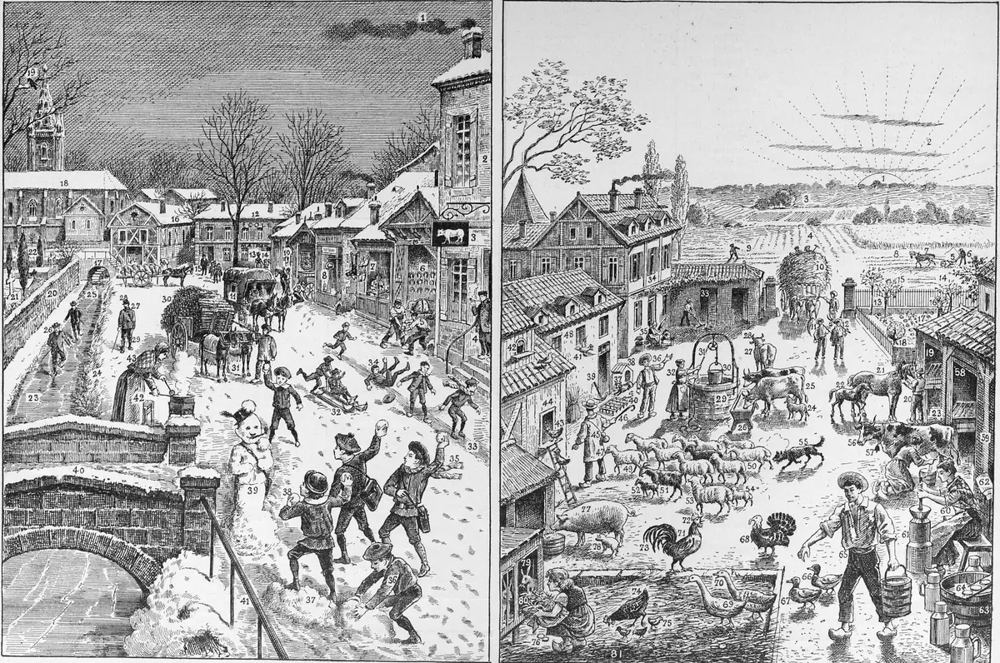
DUESMA SERIO TABELO No 7
43DEUXIÈME SÉRIE TABLEAU No 7 1. — Dum la novyaral vakanci, me akompanis mea patrulo en Novurbo, vilajeto ube il bezonis traktar kelk aferi komercala.
431. — Pendant les vacances du premier de l’an, j’ai accompagné mon père à Neuville, petit village où il avait quelques affaires à traiter.
2. — Ni uzis la dilijenco qua funcionas inter la urbo e ta burgo; ma pro ke esis tre kolda, ta voyajo en vehilo poke komfortoza ne esis tre agreabla.
432. — Nous avons pris la
diligence qui fait le service entre la ville et ce bourg ; mais comme il faisait très froid, ce voyage dans un véhicule peu confortable n’a rien eu de bien agréable.
3. — Pro to ni sentis vera plezuro kande ni vidis la duktisto haltigar sua veturo sur la placo, avan l’albergo di la Blank Urso. L’albergisto esis vartanta ni sur la solio di sua domo, kalme fumanta sua pipo.
433. — Aussi avons-nous éprouvé un réel plaisir lorsque nous avons vu le
conducteur arrêter sa voiture sur la place, en face de l’
auberge de
l’Ours-Blanc.
L’aubergiste nous attendait sur le seuil de sa maison en fumant tranquillement sa
pipe. Il invitis ni enirar e me ne lasis me pregesar por instalar me avan la sarmentoza fairo qua krepitis en la herdo. Lore me tre mokis l’akra nordal vento qua grincigas la olda insigno et forportis per nigra vortici la fumuro ekiranta la kameno.
43Il nous invita à entrer et je ne me fis pas prier pour m’installer devant le feu de sarment qui pétillait dans l’âtre. Je me moquais bien alors de l’âpre
vent du nord qui faisait grincer la vieille
enseigne et emportait en noirs tourbillons la
fumée qui sortait de la cheminée.
4. — Esis la horo dil dejuno. Sen plu longe vartar, ni bone manjis la simpla ma saporoza repasto quan on servis a ni .
434. — C’était l’heure du déjeuner. Sans plus attendre, nous fîmes honneur au repas simple mais succulent qui nous fut servi
.
485. — Pos la dejuno, me akompanis mea patrulo, qua esas asekuristo, che lua klientaro. Unesme ni vizitis la
forjisto , qua lojas proxim l’albergo. Il esis okupata per (huf)ferizar kavalo. Me admiris la robusteso di lua kompano qua solide mantenis sur lua ledra avantalo la
hufo dil kavalo, dum ke la forjisto fixigis la
fero per forta martelagi.
435. — Après le déjeuner, j’accompagnai mon père, qui est agent d’assurances, chez ses clients.
Nous vîmes d’abord le
maréchal ferrant , qui demeure près de l’auberge. Il était occupé à ferrer un cheval. J’admirai la force de son compagnon, qui tenait solidement sur son tablier de cuir le
sabot du cheval, tandis que le maréchal fixait le
fer à grands coups de marteau.
486. — Pose ni iris che la
shuisto dil vilajo, la olda Iakobus. Malgre ke il havas kom insigno belega
boto, il saciesis per risuolizar olda paro de shui truizita.
446. — Nous entrâmes ensuite chez le
cordonnier du village, le père Jacob. Bien qu’il eût pour enseigne une superbe
botte, il se contentait de ressemeler une vieille paire de souliers percés.
48La oldo dicis a ni ridante : « En la urbo, me esis « shuifisto » e me ne havis klienti. Hike, me esas « shureparisto » e la laboro esas multa. »
44Le brave homme nous dit en riant : « A la ville, j’étais « cordonnier » et je n’avais pas de clients. Ici, je suis « savetier » et l’ouvrage abonde. »
487. — Il parolis a ni pri sua vicino la
razisto , di qua la klientaro esas ne kontenta. Lua
razili sempre esas brechizita e lua
cizi nultempe tondas bone. Ma pro ke il esas la sola razisto dil vilajo, on esas koaktata komprenende razigar su e tondigar sua hararo da ilu. Cetere il esas avara e desafabla viro.
447. — Il nous parla de son voisin le
barbier , dont tous les clients étaient mécontents. Ses
rasoirs étaient toujours ébréchés et ses
ciseaux ne coupaient jamais. Mais comme il est le seul perruquier du village, on est bien forcé de se faire raser et couper les cheveux par lui. C’est d’ailleurs un homme avare et désagréable.
488. — Fortunoze, la cetera
vicini ne similesas ilu. Exemple la
charifisto esas benigna viro, laborema e komplezema. Esas plezuro reparigar veturo da lu. Lua laboruro esas sempre finisita.
448. — Heureusement, tous les
voisins ne lui ressemblent pas. Ainsi le
charron est un excellent homme, travailleur et complaisant. C’est un plaisir de lui donner une voiture à réparer. Son travail est toujours bien fait.
489. — Olda Iakobus anke ne plendis pri la
selifisto , quan il kelkafoye helpas sutar la
harnesi kande urjas la laboro.
449. — Le père Jacob ne se plaignait pas non plus du
sellier , auquel il aide parfois à coudre ses
harnais lorsque l’ouvrage presse trop.
49Mea patrulo questionis lu pri lua familio : « Omni standas bone. Mea nepotino esas en la
skolo . Elua
docistino esas tre kontenta pri lu, el esas bona
lernanto . El ne similesas mea mala kerlo filio; il pensas nur pri ludar. La
docisto ne sucesas lernigar irgo da ilu. »
44Mon père lui demanda des nouvelles de sa famille. — « Tout le monde va bien. Ma petite-fille est à l’
école . Son
institutrice est très contente d’elle ; c’est une bonne
élève . Ce n’est pas comme mon mauvais sujet de fils; il ne songe qu’à jouer. L’
instituteur ne peut rien lui apprendre. »
4910. — La oldo pose rakontis a ni la novaji dil vilajo. On esas konstruktonta nova skolo, nam la instalita en la
komonal domo divenis tro mikra. Cetere to esas facila, nam suficos komprar parto del gardeno dil
muelisto. To esos tre profitoza por la kompatinda viro. Pro la koldeso, la
muel-diski dil
mueleyo ne plus povas muelar la frumento, pro ke la
roto esis konjele haltigita da la
glacio di la
rivereto .
4410. — Le brave homme nous raconta ensuite les nouvelles du village. On allait construire une nouvelle école, car celle qui était installée à la
mairie devenait beaucoup trop petite. C’était d’ailleurs très facile, car il suffisait d’acheter une partie du jardin du meunier. Cela ferait bien l’affaire du pauvre homme. Depuis les froids, les
meules du
moulin ne pouvaient plus moudre le blé, la
roue étant prise dans la
glace du
ruisseau .
4911. — « Pri konstrukturo, ka vu vidis nia nova
kirko ? Ol esas tre pitoreska sub sua nivura mantelo. La
korvi , qui ne plus rikonocas sua olda klosheyo, triste perchas sur la grand arboro dil
tombeyo ».
4511. — « Mais, à propos de construction, avez-vous vu notre nouvelle
église ? Elle est très pittoresque sous son manteau de neige. Les
corbeaux , qui ne reconnaissent plus leur vieux clocher, se perchent tristement sur le grand arbre du
cimetière . »
4912. — Ta ideo pri la tombeyo rimemorigis dal shuifisto la personi quin mea patrulo konocabis e qui mortis lastayare. « Quanta
tombi , mea bon sioro, adjuntesis a la ceteri, sub la
cipreso ! La morto falchis nia olda notario. La tota vilajani asistis lua
funero. »
4512. — Cette idée du cimetière rappela au cordonnier les gens que mon père avait connus et qui étaient morts l’année dernière. « Que de
tombes , mon bon monsieur, sont venues s’ajouter aux autres tombes sous les
cyprès . La mort a frappé notre vieux notaire. Tout le village assistait à son enterrement. »
4913. — « Yen lua sucedanto qua sketas sur la rivereto. Il jus venis reparigar da me la rimeno di sua
sketilo qua esis ruptita. »
4513. — « Voilà son successeur qui patine sur le ruis seau. Il est venu tout à l’heure me faire raccommoder la courroie de son
patin qui était cassée. »
5014. — « Yen anke sur la rivo di la rivereto, la nova
rural gardisto . Il esas ex-jendarmo qua terorigas la bubachi dil vilajo. Li fugas quik kande li videskas lua
getri e lua
kepio (28). »
4614. — « Voilà aussi, sur le bord du ruisseau, le nouveau
garde champêtre . C’est un ancien gendarme qui est la terreur des polissons du village. Ils se sauvent dès qu’ils aperçoivent ses
guêtres et son
képi (28). »
5015. — « Ha ! yen la olda Iosef qua duktas
charetedo de ligna faski por la panifisto. — To esas vera, dicis mea patrulo, me rikonocas lua jungajo de
mulini . Me ya bezonas parolar ad ilu, me profitos l’okaziono. Til rivido, patro Iakobus. »
4615. — « Ah ! voici le père Joseph, qui amène une
charrette de fagots pour le boulanger.
— « C’est vrai, dit mon père, je reconnais son attelage de
mules . J’ai justement besoin de lui parler, je vais profiter de l’occasion. Au revoir, père Jacob. »
5016. — Jus kande ni ekiris, la pueri dil vilajo livis la skoleyo e kurante precipitis su ad la
gliteyo kun risko falar e ruptar a su membro en la
falo . Un de li prenis sua
glit-veturo (32) che la charifisto, sidigis en olu un de sua kamaradi, e departis kurante.
4616. Au moment où nous sortions, les enfants du village quittaient l’école et s’élançaient en courant sur la
glissoire , au risque de tomber et de se casser un membre dans leur
chute . L’un d’eux prit son
traîneau (32) chez le charron, fit asseoir un de ses camarades dedans, et partit en courant.
5017. — Altri precipitis su ad
niv-amaso proxim la
ponto e bombardeskis la
nivura statuo quan li erektis dum la hiera dio ed a qua li metis chapelo, pipo e bandoliera skolsako.
4617. D’autres se précipitèrent vers un tas de
neige auprès du
pont et se mirent à bombarder le
bonhomme de neige qu’ils avaient fait la veille et auquel ils avaient mis un vieux chapeau, une pipe et un sac d’école en bandoulière.
5018. — Li poke sucias la frostiganta vento e la koldeso. La plumulto mem ne havas
kravatego e, por rivarmigar su pos la kombato per
niv-buli , suficas a li manuedo de tre varma
kastani komprita de la olda
vendistino Jakobina, qua tremas pro koldeso sub sua
shalacho tro dina.
4618. Ils se souciaient peu du vent glacial et du froid. La plupart n’avaient même pas de
cache-nez et, pour se réchauffer après la bataille de
boules de neige , il leur suffisait d’une poignée de marrons
bien chauds achetés à la mère Jacqueline, la
marchande, qui grelotte sous son vieux
châle trop mince.
51La rustika domo dum la printempo. 46La Maison rustique au printemps. 511. — Malgre omna plezuri dil vintro, ni kun profunda joyo salutas la riveno dil
printempo. 461. — Malgré tous les plaisirs de l’hiver, c’est avec une joie profonde que nous saluons le retour du printemps.
51Quante gayiganta tabelon aspektas farmala korto, vespere, en la mayo-monato !
46Quel tableau réjouissant que l’aspect d’une cour de ferme, le soir, au mois de mai !
512. — Ye la horizonto la
suno (1) lente kushas su, inundante la
ruro per sua purpurea
radii . La diligenta
plugisto hastas plugar sua
agro .
462. — A l’horizon, le
soleil (1) se couche lentement, inondant la
campagne de ses
rayons de pourpre. Le
laboureur diligent se hâte de labourer son
champ .
51Per sua
plugilo (5) jungita a vigoroza
kavalo (7), il trasas la
sulko en qua la
semero per plena manuedo jetos la
semino qua produktos la orea spiki.
46Avec sa
charrue (5) attelée d’un vigoureux cheval
(7), il trace le
sillon dans lequel le
semeur jette à pleine poignée le
grain qui donnera la moisson blonde.
513. — La
falchisti (11) provizita per sua falchili falchis la herbo dil prato, la fanigisti sikigis la
feno (10) turnante lu per
forki e rastili, e yen ke li retrovenas.
463. — Les
faucheurs (11) armés de leurs
faux ont coupé (fauché) l’herbe de la prairie, les
faneurs ont fait sécher le
foin (10) en le retournant avec les
fourches et les
râteaux, et les voici qui rentrent.
51Uni marchas avan la pezoza veturo tirata da bovi; li kunportas sua utensilo sur la shultro. Altri, plu indolenta, komfortoze su instalis sur l’odoranta feno.
46Les uns marchent devant la lourde voiture traînée par des bœufs; ils portent leur outil sur l’épaule. Les autres, plus paresseux, se sont commodément installés dans le foin parfumé.
514. — Pasante li facas amikal saluto al
gardenisto (16) okupata en la
frukto-gardeno (13) per taliar la
frukt-arbori e greftar la
pirieri . La
prunieri (15) florifeskas, e, en la
legum-gardeno bone sterkizita, la legumi, kauli e saladi ja esas bonastanda.
474. — Ils adressent en passant un salut amical au
jardinier (16) occupé dans le
verger (13) à tailler les
arbres fruitiers et à greffer les
poiriers . Les
pruniers (15) sont en fleurs, et, dans le
potager bien fumé, les légumes, choux et salades sont déjà superbes.
51Sur la mureto, bela
pavono developas sua kaudo, por admirigar olua plumi belega.
47Sur le petit mur, un beau
paon fait la roue pour faire admirer les superbes plumes de sa queue.
525. — La pordi di la
kavaleyo (19) esas apertita ed on vidas la rastelero e la
litiero (23) di la
kavalino quan la
kaval-servisto jus desjungis. La
kavalyuno tante komika kun sua longa gambi, sequas sua patrino gambolante.
475. — Les portes de l’
écurie (19) sont ouvertes et l’on aperçoit le râtelier et la
litière (23) de la
jument que le
garçon d’écurie vient de dételer. Le petit
poulain , si comique sur ses longues jambes, suit sa mère en gambadant.
526. — Proxim la
puteo (29) la
bovini (25) iras drinkar en la ligna
trogo (26) qua uzesas por li kom drinkeyo. La
bovyuno profitas l’okaziono por mamsugar, e la
bovulo (27) flarante la bono doro dil forejo, joyoze bramas e fiere levas la kapo kun
korni potenta.
476. — Près du
puits (29), les
vaches (25) vont boire dans l’
auge (26) de bois qui leur sert d’abreuvoir. Le petit
veau en profite pour téter, et le
bœuf (27), flairant la bonne odeur du fourrage, mugit joyeusement et dresse fièrement sa tête aux
cornes solidement plantées.
527. — Omni laboras. La
servistino manue tenas la
kordo dil puteo. El cherpas aquo per
sitelo (30) por drinkigar la brutaro. Proxim la
garbeyo (33), viro rastas la paliaji ed avan la pordo di la
hemo olda
filifistino (35) per sua filif-roto e sua
ruko, filifas la
lino o la
kanabo quale en la tempo olima.
477. — Tout le monde travaille. La
servante tient en main la
corde du puits. Elle puise de l’eau dans un
seau (30) pour donner à boire aux bestiaux. Auprès de la
grange (33), un homme ratisse les brins de paille, et devant la porte de la
maison d’habitation , une vieille
fileuse (35), avec son
rouet et sa
quenouille, file le
lin ou le
chanvre comme au temps jadis.
528. — La
farmisto direktas ta omna labori e donas instrucioni a sua servisti. Il rekomendas subtektigar la
herso e la
piocho (39) quin on obliviis proxim la
kabano di la
hundo .
478. — Le
fermier dirige tout ce travail et donne des ordres à ses serviteurs. Il recommande de rentrer la
herse et la
pioche (39) que l’on a oubliées près de la
niche du
chien .
529. — Lua klami pavorigas
kolombo , qua per tota ali flugas aden la
kolombeyo , e la
hanini qui hastas rienirar la
haneyo .
479. — Ses cris effarouchent un
pigeon qui fuit à tire-d’aile vers le
pigeonnier , et les
poules , qui se hâtent de rentrer au
poulailler .
5210. — Avan la
mutoneyo , yen la olda
pastoro qua retroduktas sua (muton)-
tru po . Tenante sua (pastor)-
bastono , qua nultempe mankas a lu, same kam lua
bluzo senkolorigita, il duktas a la stablo
mutonuli ,
mutonini ,
mutonyuni ,
kaprini e
kaproyuni . Lua fidela
hundo Argus laste venas ed instigas per sua aboyi la diligenteso dil tardeskanti.
4710. — Devant la
bergerie , voici le vieux berger
qui ramène son
troupeau . Armé de sa
houlette qui ne le quitte pas plus que sa vieille
blouse décolorée, il conduit au bercail
moutons ,
brebis ,
agneaux ,
chèvres et
chevreaux . Son fidèle
chien Labry ferme la marche et excite par ses aboiements le zèle des retardataires.
5311. — Ta omna bruisado e movado ne trublas la quieteso dil bona
laktifanta bovino qua tinkligas sua
klosheto , dum ke on melkas elu avan la pordo dil
stablo .
4811. — Tout ce bruit et tout ce mouvement ne troublent pas la placidité de la bonne
vache laitière qui fait tinter sa
clochette pendant qu’on la trait devant la porte de l’
étable .
5312. El semblas komprenar, ke el devas donar sua lakto, por ke la
farmistino povez prontigar
butro en la
butrifilo o la bonega
fromaji , qui gutifas de la tabulo pozita sur la
kuvego .
4812. — Elle a l’air de comprendre qu’il faut qu’elle donne son lait pour que la
fermière puisse faire du
beurre dans la
baratte ou confectionner les excellents
fromages qui s’égouttent sur la planche posée sur le
cuvier .
5313. — La tota
lakteyo (59) mantenesas tre nete da la
farm-servisto qua jus lavis la
lakto-poti en la granda sitelo quan il portas per la manuo.
4813. — Toute la
laiterie (59) est tenue très proprement par le
garçon de ferme , qui vient de laver les
pots au lait dans le grand seau qu’il porte à la main.
5314. — Kun sua dika ligno-shui, il marchas kelke plumpe, e tale fugigas la
dindulo , la
anadini , la
anaduli e la
gansi qui larje apertas
sua beko e desquiete kriegas.
4814. — Avec ses gros sabots, il marche un peu lourdement, ce qui met en fuite le
dindon , les
canes , les
canards et les
oies , qui ouvrent un large
bec et poussent des cris désespérés.
53La
hanulo , plu kombatema, erektas sua reda
kresto , sukusas la plumi di sua
kaudo ed audigas « kokoriko » sonorega.
48Le
coq , plus belliqueux, dresse sa
crête rouge, secoue les plumes de sa
queue et lance un retentissant « cocorico ».
5315. —
Hanin-matro marodas sur la
sterko (81) kun sua
(han-)yuneti . La
porkyuno fugas ad sua matro, l’enorma
porkino quan ni vidas proxim la porkeyo.
4815.— Une
poule mère picore sur le
fumier (81) avec ses
poussins . Le petit
cochon de lait se sauve vers sa mère, l’énorme
truie que nous voyons près de la porcherie.
5416. — En sua faki, la
kunikli manjas avide la
herbo delikata quan adportas a li la filiino dil farmistulo. Ioanina tre amas sua kunikli e, singladie, querinta la fresha
ovi en la haneyo, el venas vizitar sua amiketi.
4816. — Dans leur niche, les
lapins broutent avidement l’
herbe tendre que leur apporte la fille du fermier. Jeannette aime beaucoup ses lapins et chaque jour, après avoir été chercher les
œufs frais dans le poulailler, elle vient rendre visite à ses petits amis.
(*) Pro ke ta vorto esas ne preciza : kad esas lin-rekolto, vit-rekolto, pom-rekolto ? Forsan esus bona uzar « mesono » propozita en Mondo XIV, p. 242. Ma til nun ta nova radiko ne esas adoptita dal Akademio e vartas diskuti segun la kustumata regularo Idistala.
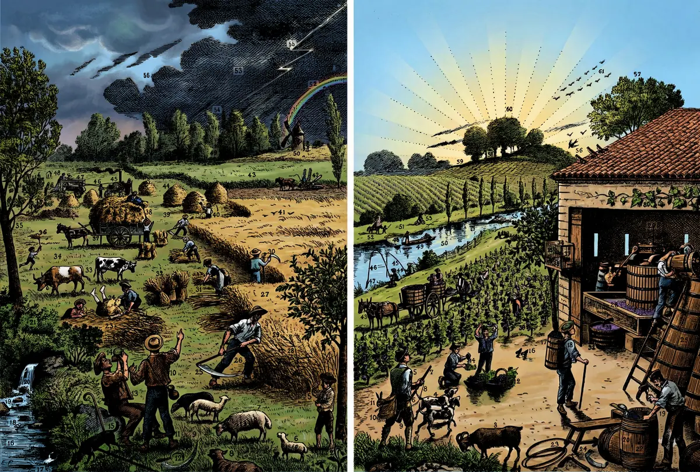
55TABELO No 8 Unesma ceno. La Rekolto . — La Aspekti di la Ruro. 49TABLEAU No 8 Première scène. La Moisson. — Les aspects de la campagne. 551. — Kun la
somero, unplusafoye chanjis l’aspekto di la ruro. La semino konfidita al sulko jermifis; verda planteto ekiris de la sulo e spikifis. La grano esis formacata, pose lu matureskis e mem de nun on bezonas nur rekoltar.
491. — Avec l’été, l’aspect de la campagne change encore une fois. La semence confiée au sillon a germé ; une petite plante verte est sortie de terre et n’a pas tardé à porter un épi. Le grain s’est formé, puis il a mûri et il ne reste plus qu’à moissonner.
552. — La
rural flori esas desklozita.
Aciani ,
papavereti e
digitali mixas al uniforma nuanco dil frument-agri la gaya kontrasto di sua fresha
koroli. 492. — Les
fleurs des champs sont épanouies.
Bluets ,
coquelicots et
digitales mettent dans la teinte uniforme des blés la note gaie de leurs fraîches
corolles. 553. — La frukt-arbori su garnisis per folii; la frukto matureskis. La mikra
ceriziero (4) abundas de bela
cerizi quin la pueri plezurege kolias e manjas.
493. — Les arbres fruitiers se sont garnis de feuilles, le fruit est apparu. Le petit
cerisier (4) est couvert de belles
cerises , que les enfants cueillent et mangent avec délices.
554. — De nun la brutaro povas pasar la tota jorno en la liber aero.
494. — Le troupeau peut passer à présent toute la journée en plein air.
55La
mutonyuni grandeskis e divenis bel
mutonini e bel
mutonuli kun densa lanfelo. Li tranquile pasturas la
herbo dil
pastureyo buntizita per
margriteti. 49Les
agneaux ont grandi et sont devenus de belles
brebis et de beaux
moutons couverts d’une épaisse toison. Ils broutent paisiblement l’
herbe du
pâturage parsemée de
pâquerettes. 56Balde on tondeskos
ta bestii por havar lia
lano ek qua on fabrikas la drapo di nia vesti.
49On va bientôt commencer à tondre ces animaux pour avoir leur
laine, avec laquelle on fabrique le drap de nos vêtements.
565. — La
pastoro (10) semblas ne tre atencar li. Il sucias nur la sturmo qua pasas ye la horizonto, e la
muton-gardisto , qua proximigas
gurdo a sua labii semblas mem plu sensucia.
495. — Le
pâtre (10) ne paraît guère s’occuper d’eux. Il ne s’inquiète que de l’orage qui passe à l’horizon, et le
berger , qui porte sa
gourde à ses lèvres, semble encore plus insouciant.
566. — La varmeso esas opresanta; nam la
hundo venas, lu anke, sendurstigar su; lu lapas la fresh aquo di la
rivereto e pavorigas kompatinda
raneto qua blotisabis en la rivo-herbi. Ica saltas aden la klar aquo ube florifas la
nenufari .
496. — La chaleur est accablante ; car le
chien vient lui aussi se rafraîchir ; il lappe l’eau fraîche du
ruisseau et effraie une pauvre petite grenouille
qui était tapie dans l’herbe du rivage. Elle saute dans l’eau claire où s’entr’ouvrent les
nénuphars .
567. —
Motacilo (19) su balnas apud la
fonteto qua spricas inter du rokaji e su celas sub
l’arbusti dornoza e la
krateg-bushi (22).
507. — Une
bergeronnette (19) se baigne près de la petite
source qui jaillit entre deux rochers et se cache sous les
broussailles et les
buissons d’aubépine (22).
568. — Por la rurana pueri, la frumento-rekolto esas tre amuzant epoko. Li joyoze kul
butas sur la
palio-amasi , li helpas la
rekoltisti e dum ke ici falchas la
frumentagro per sua
falchili bone akutigita per la
grindo-petro , li kolektas la frumento e ligas olu kom
garbi o kom
fasketi .
508. — Pour les enfants de la campagne, la moisson est une époque très amusante. Ils font de joyeuses culbutes
sur les
tas de paille , ils aident les
moissonneurs , et, tandis que ceux-ci fauchent le
champ de blé avec leurs
faux bien aiguisées sur la
pierre , ils ramassent le blé et le lient en
gerbes que l’on réunit ensuite en
javelles .
569. — Kelkafoye on permisas a le maxim granda inter li sekar per
siklo la
orea stipi (28) qui portas la grava
spiki granoplena; e la mikri, surveyante la
brutaro qua pasturas en la
pastureyo sub la ombro dil granda
tilio kaptas per sua
reto la bela
papilioni. 509. — On permet quelquefois aux plus grands de couper avec une
faucille les
tiges (28) dorées qui portent les lourds
épis remplis de grain, et les petits, tout en gardant le
bétail qui broute tranquillement dans la
prairie , à l’ombre du grand
tilleul , attrapent dans leur
filet les beaux papillons.
57Mem kelki klimas sur la
chareto por ordinar la garbi quin on pasigas a li per
forko .
50Quelques-uns même grimpent sur la
charrette pour ranger les gerbes qu’on leur passe au bout d’une
fourche .
5710. — Sur la tota
planajo ube flugeskas la
alaudi regnas l’animeso. Omni esas okupata pri la rekolto. Ma, dum ke la povri duras uzar la olda instrumenti,
falchili, sikli e
drashili (40), la richa proprieteri falchigas sua frumento o sua
sekalo per
falcho-mashino . Pose, ne bezonante portar la garbi en la garbeyo, on facas granda
garb-amasi .
5010. — Dans toute la
plaine où s’envolent les
alouettes , l’animation règne. Tout le monde est occupé à la moisson. Mais, tandis que les pauvres gens continuent à se servir des vieux instruments,
faux, faucilles et
fléaux (40), les riches propriétaires font faucher leur blé ou leur
seigle avec une
moissonneuse mécanique . Puis, sans avoir besoin de porter les gerbes dans la grange, on forme sur place de grandes
meules .
5711. — Lore on adduktas
drashmashino quan
lokomobilo movas per
transmis-rimeno e tale la grano separesas de la
palio, sen livar l’agro ube ol esis semata.
5011. — On amène alors une
machine à battre , qu’une
locomobile met en mouvement à l’aide d’une
courroie de transmission, et le grain se trouve ainsi séparé de la paille sans quitter le champ où il avait été semé.
5712. — Ofte
sturmegi eventas, lor la tempo dil rekolto. Unesme la grondi dil
tondro esas audata de fore;
ventego de westo sufleskas ed anhelante kurvigas la maxim gros arbori dil
bosko . Nigra
nubegi asaltas la cielo; li esas trairata da zigzagi dazlanta dil
fulmino . La
pluvo e kelkafoye la
grelo faleskas, aplastante la rekoltaji pronta por falchesor.
5112. — Fréquemment, de violents
orages éclatent à l’époque de la moisson. Tout d’abord les grondements du
tonnerre se font entendre au loin ; un violent
vent d’ouest s’élève et fait plier en gémissant les plus gros arbres du petit
bois . De gros
nuages noirs montent dans le ciel ; ils sont sillonnés par les zigzags aveuglants de l’
éclair . La
pluie et parfois la
grêle se mettent à tomber, écrasant la moisson prête à être fauchée.
5713. — Ofte la fulmino incendias konstrukturo. Tale lastayare la tekto dil
vento-muelilo esis cindrigata e du de lua
alegi (51) frakasata.
5113. — Souvent la foudre incendie quelque bâtiment. C’est ainsi que l’année dernière le toit du
moulin à vent fut réduit en cendres et que deux de ses
ailes (51) furent pulvérisées.
5814. — Pos kelka hori, la kalmeso rinaskas. Briloza
ciel-arko aparas en la horizonto e la naturo riprenas sua vivo interruptita dum kelka instanti. La rurani, qui refujis en la
kabani rilaboreskas e kurajoze esforcas reparar la domaji quin li jus subisis.
5114. — Puis, au bout de quelques heures, le calme renaît. Un brillant
arc-en-ciel se montre à l’horizon et la nature reprend sa vie un instant interrompue. Les paysans, qui se sont réfugiés dans les cabanes
, se remettent au travail et essaient courageusement de réparer le dégât qu’ils viennent de subir.
58La Chasado. — La Vit-rekolto. — La Peskado. 51La Chasse. — La Vendange. — La Pêche. 581. — Cirkum la fino di
agosto o la mezo di
septembro, segun la regioni, eventas l’aperto dil chasado. Apene l’unesma sun-radii igis la
lacerti (2) ekirar lia truo, kande la
chasero voyireskas kun sua
hundi (4).
511. — Vers la fin d’
août ou vers le milieu de septembre, suivant les régions, a lieu l’ouverture de la chasse. A peine les premiers rayons du soleil ont-ils fait sortir les petits
lézards (2) de leur trou, que le
chasseur se met en route avec ses
chiens (4).
582. — Il metis sua solida
chas-kostumo ek dika drapo, pedvestizis su per ledra
getri, per qui il sucesos marchar en la humida herbo ube celas su la
rospi (1); il prenis sua
fusilo e sua
vildo-sako , e yen ke il departas.
512. — Il a endossé son solide
costume de chasse en gros drap, chaussé ses
guêtres de cuir, avec lesquelles il pourra marcher dans l’herbe mouillée, où se cachent les
crapauds (1), il a pris son
fusil et son
carnier , et le voilà parti.
583. — La fervoro di la persequo adduktas lu meze di vit-agro ube la vit-rekolto esas tre vivaca. La pueri dil vit-kultivisto, qui ordinare surveyas la kaprini sur la voyo, cadie lasas eli pasturar hazarde, e pos ligir a paliso olda
kaprulo (3) qua ne falius profitar sua libereso por eskapar, li, suafoye, atribuas a su partopreno en la plezuro. Unu sizas vit-ber-grapo en
rekolto-korbo ed amuzas su per fluigar la
suko en gobleto
13) por fabrikar mosto (vino ne fermentacinta). Altru kuafas su per
folio-krono (15) quan il jus plektis. Proxim li, senshama
paseri (16) venas mem avan la presilo por marodar la vit-beri.
513. — L’ardeur de la poursuite l’amène au milieu d’un vignoble où la vendange bat son plein. Les enfants du vigneron, qui gardent ordinairement les chèvres sur la route, les laissent aujourd’hui brouter à l’aventure, et après avoir attaché à un pieu un vieux
bouc (3) qui ne manquerait pas de profiter de sa liberté pour s’échapper, ils se donnent, eux aussi, leur part de plaisir. L’un prend une grappe de raisin dans un
panier à vendange et s’amuse à faire couler le
jus dans un
gobelet (13) pour faire du vin doux. L’autre se coiffe d’une
couronne de feuillage (15) qu’il vient de tresser.
A côté d’eux, les
moineaux (16) effrontés viennent jusque devant le pressoir picorer les grains de raisin.
594. — Dum ke la pueri su amuzas, la viri laboras. La
vit-rekoltisti adportas la vitberi aden la kelero per
dorso-korbi ;
barelifisto reparas la
bareli , verifikas ka la
duvi e la
fundi esas bonstanda, e remplasigas la
ringegi ruptita. Lu anke laboris la
kuvegi en qui on varsas la
vitberi (26) por igar li fermentacar.
524. — Pendant que les enfants s’amusent les hommes travaillent. Les
vendangeurs apportent le raisin au cellier dans des
hottes ; un
tonnelier répare les
barriques , vérifie si les
douves et les
fonds sont en bon état et remplace les cercles
cassés. C’est lui qui a fait les grandes
cuves dans lesquelles on verse le
raisin (26) pour le faire fermenter.
595. — Kande la fermentaco parfinis, on rakas la vino ed on pozas la reziduo sur la
presilo e progresive klemante per la
skrubego (29) on ekpresas la suko qua fluas en
kuveto ed ankore on obtenas
vino .
525. — Lorsque la fermentation a eu lieu, on met le raisin sur le
pressoir , et, en serrant progressivement la
vis (29), on exprime le jus, qui coule dans un
baquet , et l’on obtient le
vin .
596. — An la muro dil
kelero (27) klimas brancho di
lupulo (30). Ibe ol esas nur orniva planto, ma en kelka landi, ube la vito esas tre rara, la lupulo esas kultivata por fabrikar la
biro. 526. — Sur le mur du
cellier (27) grimpe une branche de
houblon (30). Ici ce n’est qu’une plante d’ornement, mais dans certains pays, où la vigne est très rare, le houblon est cultivé pour la fabrication de la
bière. 597. — La mikra
pomiero esas charjita per pomi qui produktos kande li esos matura, bonega
cidro. En sua
kajo la
serino (35) e la
karduelo (36) regardas per envidioz okuli la paseri qui libere petuladas.
527. — Le petit
pommier est chargé de pommes qui feront, lorsqu’elles seront mûres, un
cidre excellent. Dans leur
cage , le
serin (35) et le
chardonneret (36) contemplent d’un œil d’envie, les moineaux qui s’ébattent en liberté.
598. — Til fino di vido, sur la pento dil kolini, esas aliniita
vito-stangi qui suportas la belega
(vito)-trunki (39), garnisita da
grapi pezoza.
528. — A perte de vue, sur le penchant des collines, s’alignent les
échalas , supportant les magnifiques
ceps de vigne (39), garnis de lourdes
grappes. 59Dum la tota yaro, la
vit-kultivisto (42) laboris por sorgar sua
vit-agro (38) e nun il esas rekompensata po sua peno per bela rekolto. La
vit-rekoltistini (41) plenigas la kuvi pozita sur la chareto tirata da
mulini , ed omni esas joyoza.
52Pendant toute l’année, le
vigneron (42) a travaillé pour soigner son
vignoble (38), et maintenant il est récompensé de sa peine par une belle récolte. Les
vendangeuses (41) emplissent les cuves placées sur la charrette traînée par des
mules et tout le monde est joyeux.
609. — Same esas pri la
fil-peskeri (44) qui de la matino, venis instalar su an la rivo dil aquo kun sua
pesko-bastoni (45).
539. — Il en est de même des
pêcheurs (44) à la ligne qui, dès le matin, sont venus s’installer sur le bord de l’eau avec leurs
cannes à pêche (45).
60La
fisho (47) snapas l’
angelo quik kande ili plunjas sua
filo en l’aquo, ed apene li havis tempo por rinovigar la
lurilo, kande nova viktimo friskas ye l’extremajo dil filo.
53Le
poisson (47) mord à l’hameçon dès qu’ils jettent leur
ligne dans l’eau, et à peine ont-ils le temps de renouveler l’
amorce qu’une nouvelle victime frétille au bout du fil.
60Tamen la
reto-peskero qua, de sua
barko , lansas la
(lanso)-reto aden la mezo dil
rivero kaptas plu multa fishi.
53Pourtant le
pêcheur au filet , qui, monté dans sa
barque , jette l’épervier au milieu de la
rivière , en prend bien davantage.
6010. — L’autuno esas la sezono dil bona promenadi : pedire,
kalvalke ,
bicikle ,
automobile . La
voyi esas neta ed on profitas la lasta bela dii, nam yen ke ja la
hirundi asemblas su sur la tekti por flugeskar per tota ali vers plu varma landi. La foliaro dil olda
nuciero flaveskas, la
nuci falas e la alt
arbori grupe dispozita quale bu
keto (58) sur la
altajo balde senfolieskos.
5310. — L’automne est la saison des bonnes promenades : promenade à pied, à
cheval , à
bicyclette , en
automobile . Les
routes sont propres et l’on profite des derniers beaux jours, car voilà déjà les
hirondelles qui se rassemblent sur les toits pour s’envoler à- tire-d’aile vers des pays plus chauds. Les feuilles du vieux
noyer jaunissent, les
noix tombent et les grands
arbres groupés en
bouquet (58) sur la
hauteur vont bientôt se dépouiller.
6011. — La
suno su levas plu tarde, la jorni deskreskas, koldeteso pasable pikanta komencas esar sentata, ye la
matino, e yen ke ja flugi de
bekasi livas nia klimati negastigema.
5311. — Le
soleil se lève plus tard, les jours diminuent, un petit froid assez vif se fait sentir le
matin et voilà déjà des vols de
bécasses qui quittent nos climats inhospitaliers.
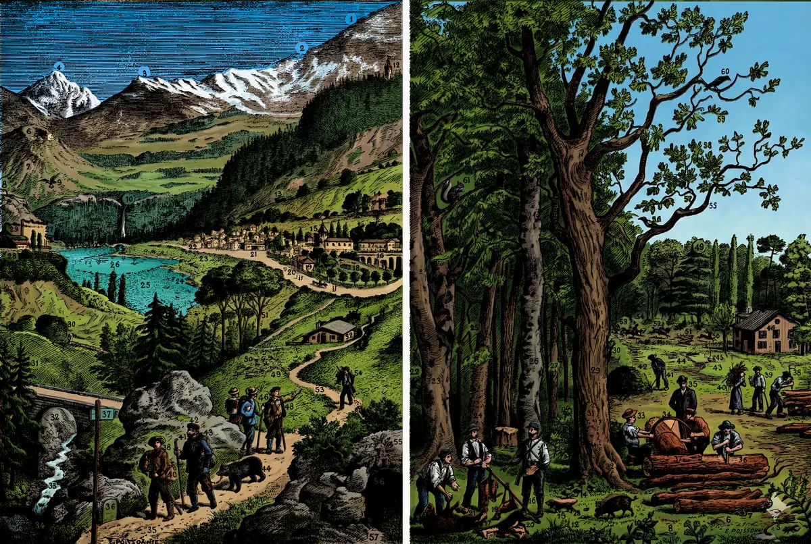
61La Monto. — La Balnurbo. 54La Montagne. — La Ville d’eaux. 611. — De ok dii me esas en Pratz. Me ne povas expresar la tota admiro quan me sentis kande me esis avan la marveloza
montaro dil Pirenei di qua la
kresto aspektas sur la blua cielo quale giganta festono.
541. — Depuis huit jours je suis à Pratz. Je ne puis exprimer toute l’admiration que j’ai éprouvée lorsque je me suis trouvé en face de la merveilleuse
chaîne des Pyrénées dont la
crête se découpe sur le fond bleu du ciel comme un gigantesque feston.
612. — Me ne imaginis, ke la Pireneal
somiti atingas
alteso tante granda, e me restis astonegata koram la belega
glacieri e la
monto-pinti nivoza sur qui rulas tante terorigant
avalanchi.
542. — Je ne m’imaginais pas que les
sommets pyrénéens pouvaient atteindre une
altitude aussi grande, et je suis resté saisi d’étonnement devant les magnifiques
glaciers et les
pics couverts de neige sur lesquels roulent de si terribles
avalanches. 613. — Quik de la morga dio di mea arivo, me iris a la olda
volkano extingita qua esas proxim Pratz. Sur la bordi arida e nudigita dil
kratero, on vidas ankore bone la traci dil paso di la
lavao qua fluis, plura yarcenti ante nun, sur la
flanko dil monto (7). Me sucesis trovar, sur un de la
penti, kelka fragmenti di ta lavao.
543. — Dès le lendemain de mon arrivée je suis allé au vieux
volcan éteint qui se trouve près de Pratz. Sur les bords du
cratère, arides et dénudés, on voit encore parfaitement les traces du passage de la
lave qui coulait, il y a plusieurs siècles, sur le
flanc de la montagne (7). J’ai pu retrouver, sur l’un des
versants, quelques parcelles de cette lave.
614. — Pratz esas situita sur la frontiero, e la
fortreso qua defensas la
defileo separanta Francia de Hispania tote memorigas ta olda kasteli di la rivo di Rheno qui semblas guatar
raptajo de la supro di sua roko.
544. — Pratz est situé sur la frontière, et la
forteresse qui défend le
col séparant la France de l’Espagne rappelle tout à fait ces vieux châteaux des bords du Rhin qui semblent guetter une
proie du haut de leur rocher.
615. — Enorm
aglo qua havas sua nesto ne fore de la
fuorto ofte atraktas mea atenco. Ta
raptera ucelo, di qua la
beko esas forta, ofte adportas a sua yuni mutonyuno o kaproyuno quin lu tenas per sua
ungli. Tanta esas la grandeso di lua
ali ke lu povas longatempe glitflugar kun lua pezoza portajo.
545. — Un
aigle énorme, qui a son aire non loin du
fort , attire souvent mon attention. Cet
oiseau de proie, au
bec puissant, rapporte fréquemment à ses petits un agneau ou un chevreau qu’il tient dans ses
serres. La grandeur de ses
ailes est telle qu’il peut planer assez longtemps avec son lourd fardeau.
626. — Ibe la maxim agreabla promeno esas l’exkurso a la kaskado
(10) di « Kau ». L’
aquofalo vortice falas e pose desaparas kom bela
rivereto en
bosko de abieti situita weste de la urbo. Ni acensis tra ica bosko til la
meteorologial observatorio e de la supro dil
belvedero, ni parvidis la tota
panoramo di la regiono. La
peizajo esas marveloza, e la
naturo semblas prodigir a la lando omna trezori quin lu disponas.
546. — La promenade la plus agréable à faire ici est l’excursion à la
cascade (10) de Cau. La
chute d’eau tombe en bouillonnant et vient se perdre en un joli ruisseau dans le
bois de sapin situé à l’ouest de la ville. Nous sommes montés à travers ce bois à l’
observatoire météorologique et du haut du
belvédère, nous avons embrassé le
panorama entier de la région. Le
paysage est superbe et la
nature semble avoir prodigué au pays tous les trésors dont elle dispose.
627. — Por decensar, ni uzis la
funikularo e ni haltis en mikra
staciono proxim la
ruinaji di olda
feudala kastelo olim habitita dal siniori di Pratz.
557. — Pour redescendre, nous avons pris le
funiculaire et nous nous sommes arrêtés à une petite
station près des
ruines d’un vieux
château féodal habité autrefois par les seigneurs de Pratz.
628. — Kompatinda kastelo ! Quon kredeble ol pensas vidante infre la koketa
baln-urbo qua nun esas
termala staciono segunmoda ?
558. — Pauvre château ! Que doit-il penser en voyant à ses pieds la coquette
ville d’eaux qui est maintenant une
station thermale à la mode ?
62La
klimato esas tante agreabla, la
mineral aquo tante efikanta, ke la
kuracado uzata en la
sanatorio esas vera plezuro.
55Le
climat est si doux, l’
eau minérale si bienfaisante, que la
cure que l’on vient faire au
sanatorium est un véritable plaisir.
629. — Cetere, on agis omno por igar agreabla la sejorno. Granda
viadukto esis konstruktita por posibligar fervoyo; la
parko di la
termal establisuro, en qua on
koncertas, esas aranjita en charmanta maniero. Plura gracioz «
villa »-i
esis konstruktita cirkum la kazino
, e
choseo tre bone mantenata grande faciligas l’interkomuniki.
559. — D’ailleurs, on a tout prodigué pour rendre le séjour agréable. Un grand
viaduc a été construit pour permettre d’établir une voie ferrée ; le
parc de l’
établissement thermal dans lequel se donnent les
concerts est aménagé d’une façon charmante. De jolies
villas ont été bâties autour du
casino et une
chaussée très bien entretenue rend les communications extrêmement faciles.
6310. — Simpla
taluso separas la
voyo de la
valo propre dicita, e funde di qua jacas gracioza mikra
lago qua alimentas
rivereto limpida.
5510. — Un simple
talus sépare la
route de la
vallée proprement dite, au fond de laquelle s’étale un joli petit
lac qui alimente un
ruisseau très clair.
6311. — Sur l’altra latero dil valo,
fer-mineyo (28) esas explotata. Plurfoye me iris vidar la
ministi decensanta en la
shakto, e mem me eniris la
galerio en qua li pasas sua jorno, extraktante la
erco qua kontenas la
metalo.
5511. — De l’autre côté du vallon, une
mine (28) de fer est en exploitation. Je suis allé plusieurs fois voir les
mineurs descendre dans le
puits, et j’ai même pénétré dans la
galerie où ils passent leur journée à extraire le
minerai qui contient le
métal. 6312. — Importanta
fuzerio esis konstruktita proxim la mineyo por quik utiligar la richaji qui esas extraktata de olu. La
fornego (29), varmigita per la
ter-karbono qua abundas hike, posibligas rapide e chipe obtenar
gisfero.
5512. — Une importante
fonderie a été bâtie près de la mine pour utiliser immédiatement les richesses qui en sont retirées. Le
haut fourneau (29), chauffé par le
charbon de terre, qui abonde ici, permet d’obtenir la
fonte d’une façon rapide et peu coûteuse.
6313. — Ne fore de la mineyo on exkavas
petro-mineyo . Nek
graniton, nek
porfiron, nek mem
greson la olda
petro-ministo detranchas per sua
pikono, ma simpla
quadron por la konstrukto di domi.
5613. — Non loin de la mine on creuse une
carrière . Ce n’est ni du
granit, ni du
porphyre, ni même du
grès que le vieux
carrier détache avec son
pic, mais de la simple
pierre de taille pour la construction des maisons.
6314. — Un de la maxim bela ornivi di ta lando esas la
abieti . Omnaloke en la fundo di
ravino , sur la rivo di
torento , di
abismo o di precipiso, lia dina aguli verde nuancizas.
5614. — Un des plus jolis ornements de ce pays est certainement le
sapin . Partout, dans le fond d’un
ravin , au bord d’un
torrent , d’un
gouffre ou d’un précipice, ses fines aiguilles mettent leur note verte et gaie.
6315. — Me profitas mea vakanci por
longe promenar. La
voyi qui sinuifas sur la monto posibligas parkurar, sen egardar la disto, plura
kilometri ed ofte plura
quaropa kilometri.
5615. — Je profite de mes vacances pour faire de longues
promenades. Les
chemins qui serpentent dans la montagne permettent de parcourir, sans s’apercevoir de la distance, plusieurs
kilomètres et souvent plusieurs
lieues. 64Termini (36) ed
indik-fosti (37) markizas la voyi sur qui ofte on renkontras yuna
montano kun
bisako (40) an lua flanko, portante
marmoto (39), o kelka
cigano di qua la
furtoko stranje kontrastas kun la olda
kapuco lacerita. Il duktas per
kateno urso dresita.
56Des
bornes (36) et des
poteaux indicateurs (37) jalonnent les routes, sur lesquelles on rencontre souvent un jeune
montagnard , la
besace (40) au côté, portant une
marmotte (39), ou bien quelque
bohémien , dont la
toque de fourrure contraste singulièrement avec le vieux
capuchon déchiré. Il conduit par sa
chaîne un
ours savant.
6416. — Preske singladie me iras kun
guidisto (48) praktikar
acenso, e me esas tre fiera kande, kun
sako an la dorso, e la «
alpenstock » en manuo, quale vera
turisto me asaltas la
rokaji .
5616. — Presque tous les jours je vais avec un
guide (48) faire une
ascension, et je suis très fier lorsque, le
sac au dos, l’
alpenstock à la main, en vrai
touriste , j’escalade les
rochers .
6417. — De la supro di monto, la habitanti dil planajo aspektas ne plu grosa kam formiki;
muton-trupo pasturanta en
pastureyo semblas ludilo por infanti.
Pino (51) od anke
ligna dometo (52) aspektas apene kom makulo sur la verdajo.
5617. — Du haut d’une montagne, les habitants de la plaine ne semblent pas plus gros que des fourmis ; un
troupeau de moutons paissant dans un
pâturage paraît un jouet d’enfant. Un
pin (51) ou même un
chalet (52) font à peine une tache dans la verdure.
6418. — Dum ta exkursi, ni ofte renkontras sur la
voyeto chamo-chasisto shultre portanta la bestio quan il jus mortigis.
5618. — Pendant ces excursions, nous croisons fréquemment dans le
sentier un
chasseur de chamois rapportant sur son épaule l’animal qu’il vient de tuer.
6419. — Me lokizis en mea herbario tre remarkinda brancho de
filiko e bela rozea brancheto di
eriko quin me koliis ye l’enireyo di mikra
groto (56) lor mea lasta promeno.
5719. — J’ai mis dans mon herbier une branche de
fougère très curieuse et un brin de
bruyère rose fort joli, que j’ai cueillis à l’entrée d’une petite
grotte (56), dans ma dernière promenade.
64La Foresto. — La Chasado. 641. — Hiere me pasis jorno delicoza en la foresto. La diligenteso qua regnas inter la aniplein mali e l’
insekti da qui ol habitesas tre interesis me.
571. — J’ai passé hier une délicieuse journée dans la forêt. L’activité qui règne parmi les animaux et les
insectes dont elle est peuplée m’a vivement intéressé.
65L’
araneo (1) qua texas sua
reto inter du branchi por kaptar la
musho trairanta, la
heliko (4) penipenoze portanta sua konko, la lukano exploranta pri sua kaptajo, la diligenta formiko tre zeloza proxim la
formikeyo , ta omna mikri iris, venis, laboris kun extraordinara diligenteso.
57L’
araignée (1) qui tisse sa
toile entre deux branches pour attraper la
mouche qui passe, l’
escargot (4) portant péniblement sa coquille, le
cerf-volant à la recherche de sa proie, la
fourmi diligente s’agitant auprès de la
fourmilière , tout ce petit monde allait, venait, travaillait avec une animation extraordinaire.
652. —
Serpento (7) quan me unesmavide opinionis
vipero, ma qua ne esis altro kam simpla
kolubro, esis blotisinta sub arboro-trunko, e tempope ekirigis sua dina kapeto qua sempre semblis pronta por mordar. Avan me grosa
limako (8) pezoze reptis pos devorir un de la saporoza
frageti (11) qui abunde kreskas ibe.
572. — Un
serpent (7), que j’avais pris d’abord pour une
vipère, mais qui n’était qu’une simple
couleuvre, était blotti sous un tronc d’arbre, et sortait de temps en temps sa petite tête fine qui semblait toujours prête à mordre. Devant moi, une grosse
limace (8) rampait lourdement après avoir dévoré une des délicieuses petites
fraises (11) qui croissent ici en abondance.
653. — La sulo esis tapetizita per
boskal flori;
primuli (9),
pervinki , e mult altra planti quin me ne konocis, florifis inter
herbotufi .
573. — Le sol était parsemé de
fleurs des bois ; des
primevères (9), des
pervenches et un grand nombre d’autres plantes que je ne connaissais pas, fleurissaient au milieu des
touffes d’herbe .
654. — En ta regiono, la
truflo esas preske tam komuna kam la
fungo (14) e
porkyuno apartenanta a forestisto, gurmande exploris kad lu sucesos trovar kelki de oli.
574. — Dans cette région, la
truffe est presque aussi commune que le
champignon (14), et un petit
porc appartenant à un forestier cherchait d’un air gourmand s’il n’en découvrirait pas quelques-unes.
655. — Me asistis la
fino di ceno qua tre amuzis me. Per helpo di la flarado di sua
hundo basota , la
forestisto jus surprizis
furtechasero , ye l’instanto kande ica preparis su kunportar la
vildo quan il mortigabis. Preferante abandonar sua kaptajo kam lasar su arestesor, la furte-chasero fugabis, e
leporo ,
cervino ,
kapreolo (20) ed
apro jacis sur la herbo joyigante la forestisto.
585. — J’ai assisté à la fin d’une scène qui m’a bien amusé. Grâce au flair de son
chien basset , un
garde forestier venait de surprendre un
braconnier au moment où celui-ci se préparait à emporter le
gibier qu’il avait tué.
Préférant abandonner son butin plutôt que de se laisser arrêter, le braconnier s’était enfui, et
lièvre ,
biche ,
chevreuil (20) et
sanglier gisaient sur l’herbe à la grande satisfaction du garde.
666. — La diverseso dil arbori quin kontenas la foresto esas astonanta. La
fagi e la
birki , la
pini, qui produktas la
rezino (27), la
querki ed anke mult altri intermixas sua brancharo.
586. — La variété d’arbres que renferme la forêt est étonnante. Les
hêtres et les
bouleaux , les
pins, qui produisent la
résine (27), les
chênes et beaucoup d’autres encore entremêlent leurs branches.
66La
hedero , qua adheras al trunko di la alt arbori, kolorizas la
silvo per verdajo brilanta, qua agreable unionas su al nuanco plu klara e pale verda dil
musko en qua la
pikverdo (30) serchas insekti.
58Le
lierre , qui s’attache au tronc des grands arbres, donne à la
futaie une teinte verte brillante, qui s’unit agréablement au ton plus clair et plus doux de la
mousse dans laquelle le
pic-vert (30) cherche des insectes.
667. — La olda querki charmis me. Lia grosa
radiki (32) tordita, mi-ekirinta del sulo, donas a li splendid aspekto di forteso e vigoro, e me questionas me quale la
proprietero povas rezignar pri abatigar e livrar oli a la
segilo di la
hakisto (33). La
trunki kompatinda, spoliita de sua
kortico o fendita da la
hakilo (38) dil
jorn-laboristo chagrenigas me.
587. — Les vieux chênes m’ont charmé. Leurs grosses
racines (32) tordues, sortant à moitié de terre, leur donne une apparence magnifique de force et de vigueur, et je me demande comment le
propriétaire peut se résoudre à les faire abattre. et à les livrer à la
scie du
bûcheron (33). Les pauvres
troncs dépouillés de leur
écorce , ou fendus par la
cognée (38) du
journalier , me font peine à voir.
668. — Proxime, olda
karbonifisto preparis per sua
shovelo amaso de karbono, e oldino kunportis
fasko de
ligno mortinta ek brancheti dil abatita arbori.
588. — Comme me l’expliquait un vieux
charbonnier qui préparait avec sa
pelle une
meule de
charbon, cela permet aux indigents de compléter leur
fagot de
bois mort, avec les
brindilles des arbres abattus, et personne ne s’en plaint.
669. — Me volis irar por repozo dum kelk instanti en la
forestistal domo ma, kande me arivis proxim la
lageto , sur qua natas bela
cigno , me remarkis, ke recent
inundo chanjabis la voyo a vera
marsho. Me mustis deturnar me, e, pasante proxim la
cedro (49), la
popli , e la
ulmo qui esas an la bordo di la foresto, me vidis debushar ek
kopso (54) belega
cervulo (50), persequata da obstinanta
(chas)-hundaro quan ecitis anke la
korno (53) dil
chaseri kavalkanta . La kompatinda bestio esis tote extenuita. Ol venis mortante falar ye kelka pazi proxim me.
589. — Je voulais aller me reposer un moment à la
maison forestière , mais lorsque je suis arrivé auprès de l’
étang , sur lequel nage un beau
cygne , je me suis aperçu qu’une récente
inondation avait converti le chemin en un véritable
marécage. Je dus faire un détour et, en passant près du
cèdre (49), des
peupliers et de l’
orme qui sont sur la lisière de la forêt, je vis déboucher d’un
taillis (54) un magnifique
cerf (50) poursuivi par une
meute acharnée qu’excitait encore le
cor (53) des
piqueurs . La pauvre bête était à bout de forces. Elle vint tomber mourante à quelques pas de moi.
6710. — La filiulo dil forestisto, quan la bruisado dil
kuro-chaso atraktabis, ekiris la hemo e ni due retrovenis aden la foresto. Il vidabis
pigo sur brancho di olda querko. Il opinionis, ke olua nesto kredeble esas celata en la
foliaro ed il volis kaptar la nesto.
5910. — Le fils du garde forestier, que le bruit de la
chasse à courre avait attiré, sortit de la maison et nous retournâmes tous deux dans la forêt, où il avait aperçu sur la
branche d’un vieux chêne une
pie . Il pensait que son nid devait être caché dans le
feuillage et il voulait le dénicher.
67Ajila quale
skurelo , il klimis de
brancho (55) a brancho, ma il trovis nulo e sucesis nur igar flugeskar olda
korniko perchinta sur
ramo (57).
59Leste comme un
écureuil , il grimpa de
branche (55) en branche, mais il ne trouva rien et ne réussit qu’à faire envoler une vieille
corneille perchée sur un
rameau (57).
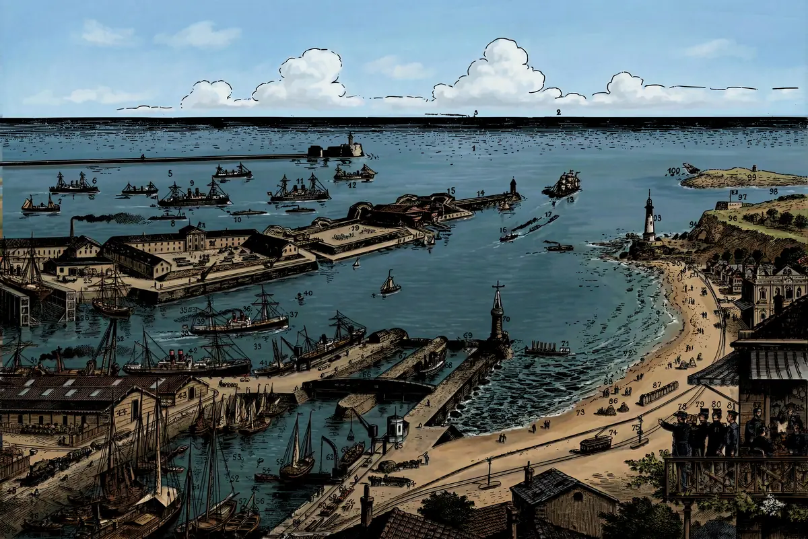
68TABELO No 10 La Maro. — La Portuo. 60TABLEAU No 10 La Mer. — Le Port. 681. — Somere, dum ke uli serchas kalmeso e koldeteso sur monto, altri preferas adirar la litoro. Tale ni agis lastayare, nam ni tre prizas
Oceano .
601. — En été, tandis que les uns vont chercher dans la montagne le calme et la fraîcheur, les autres préfèrent se rendre au bord de la mer. C’est ce que nous avons fait l’année passée, car nous aimons beaucoup
l’Océan .
682. — Pri me, me sentas granda plezuro kontemplante ta imensa vasteso di aquo qua su extensas til la
horizonto , e vidante departar por longa
pasajo l’enorma
vapor-navi sur qui embarkas la voyajeri iranta aden Amerika.
602. — Pour ma part, je prends un vif plaisir à contempler cette immense nappe d’eau qui s’étend jusqu’à l’
horizon , et à voir partir pour une longue
traversée les énormes
bateaux à vapeur où s’embarquent les voyageurs qui vont en Amérique.
683. — Pro to, mea patrulo, qua konocas mea inklineso, sempre selektas, por pasar la vakanci, ul plajo tre kalma, situita proxim un de nia granda
milital portui.
603. — Aussi mon père, qui connaît mes goûts, choisit-il toujours, pour passer les vacances, une petite plage bien tranquille, située près de l’un de nos grands
ports de guerre. 68Dum nia lasta sejorno, l’
eskadro venis ankragar dop l’enorma
digo (4) qua klozas e protektas la
milital portuo , e me sucesis segun mea deziro admirar la diversa
navi militala, la mikra
submara navo qua plunjas e desaparas sub l’aqui ed anke l’enorma
kurasnavo qua, til nun timis preske nur la ataki dal
torped-navo .
60Pendant notre dernier séjour, l’
escadre était venue jeter l’ancre derrière l’énorme
digue (4) qui ferme et protège le
port militaire , et j’ai pu admirer à loisir les différents
navires de guerre. depuis le petit
sous-marin qui plonge et disparaît sous les eaux, jusqu’à l’énorme
cuirassé qui, jusqu’à présent, ne redoutait guère que les attaques du
torpilleur .
684. — Olca ja savis tre
habile trovar la febla punto di la dika metal-kuraso por stekar ibe la danjeroza
torpedo, di qua l’explozo efekti gas la periso dil navo, ma tamen ol esis min timenda kam la submara navo, nam la kontretorpedieri facile persequas olu.
604. — Celui-ci savait déjà fort habilement découvrir le point faible de l’épaisse cuirasse métallique pour y planter la dangereuse
torpille dont l’explosion cause la perte du bâtiment, mais il était cependant moins redoutable que le sous-marin, car les contre-torpilleurs lui donnaient facilement la chasse.
695. — Me anke povis vidar la rapida
kroznavi kurasizita, preske tam ne-vundebla kam la vera kuras-navo, plura
transporto-navi tri o quar
kanon-bateli e fine un
fregato .
La spektaklo di ta navaro, kande ol manovras por desankragar esas maxim interesanta. 605. — J’ai pu voir aussi les rapides
croiseurs cuirassés, presque aussi invulnérables que le véritable cuirassé, plusieurs
transports , trois ou quatre
canonnières et enfin une
frégate . Le spectacle de cette flotte, lorsqu’elle appareille pour lever l’ancre, est des plus intéressants.
696. — Quanta difero di konstrukteso inter ta granda stal-amasi e la eleganta
trimasti o la gracioza
seglo-navi ankore nun uzata en la komercala navaro quan me vidis enirar la portuo, per tota segli, kande me promenis sur la
warfo . Advere olci perdis multa de sua avantaji
kande la
vento esis kontrea. Li mustis des-hisar omna segli por ri-enirar la baseno e
remorkero esis necesa por querar li ed adduktar li, quale simpla
kargo-bateli , ad la kayo.
616. — Quelle différence de construction entre ces énormes masses d’acier et les élégants
trois-mâts ou les fins
voiliers , employés encore dans la marine marchande, que je voyais entrer dans le port, toutes voiles dehors, lorsque j’allais me promener sur la
jetée . Ceux-ci, il est vrai, perdaient beaucoup de leurs avantages lorsque le vent était contraire, qu’il fallait plier toutes leurs voiles pour entrer dans le bassin et qu’un
remorqueur était obligé d’aller les prendre pour les amener à quai comme de simples
chalands .
697. — To quo interesas en la portuo pri qua me parolas, esas ke ol kontenas ne nur militala portuo, artifice aranjita per gigantala labori, ma anke marveloza
komercal portuo situita en l’
enflueyo di granda fluvio.
617 — Ce qui fait l’intérêt du port dont je parle, c’est qu’il ne comprend pas seulement un port de guerre,
créé artificiellement à l’aide de travaux gigantesques, mais encore un merveilleux
port de commerce, situé à l’
embouchure d’un grand fleuve.
698. — La tera lango qua separas la du baseni esas fortifikita e defensata per serio de
baterii e
bastioni qui avancas sur la maro. On bezonas specal permiso por promenar sur la
rempari . Me facile obtenabis ol, per mea onklulo, qua esas injenioro dil
konstrukteyi (18) e me iris vizitar la navi quin on konstruktas sub vasta hangari.
619.— La langue de terre qui sépare les deux bassins est fortifiée et défendue par une série de
batteries et de
bastions qui s’avancent dans la mer. Il faut une autorisation spéciale pour se promener sur les
remparts . Je l’avais obtenue sans peine, par mon oncle, qui est ingénieur des
chantiers de construction (18), et je suis allé souvent visiter les bateaux que l’on construit sous de vastes hangars.
709. — Mem me asistis la lanso di kuras-navo e me memoras la emoganta instanto quan la tota turbo sentis kande la grandega maso, abandonita a su ipsa, gliteskis sur sua bersilatra framo e venis flotacar sur l’aquo dil fluvio.
6110.— J’ai même assisté au lancement d’un cuirassé et je me souviens du moment d’émotion que toute la foule éprouva lorsque l’énorme masse, abandonnée à elle-même, se mit à glisser sur son ber et vint flotter sur l’eau du fleuve.
7010. — Por adirar la konstrukteyi, on trairas la
manovr-agro ube la soldati di la garnizono singladie venas exercar su, on pasas sur fera
ponteto , qua komunikigas la parad-esplanado kun l’
arsenalo .
6111. — Pour aller aux chantiers, on traverse le terrain de
manoeuvres , où les troupes de la garnison viennent chaque jour faire l’exercice, et on passe sur une
passerelle en fer, qui relie le Champ-de-Mars à l’
arsenal .
7011. — Kun mea onklulo, me vizitis ta granda konstrukturo plena de
kanoni ,
kugleqi (23) ed
obusi. Anke me vidis la
metaliferio en qua esas fabrikata la
kaldieri di la vapornavi.
6212. — J’ai visité, avec mon oncle, ce grand établissement plein de
canons , de
boulets (23) et d’
obus. J’ai vu aussi l’
usine métallurgique où sont fabriquées les
chaudières des bateaux à vapeur.
7012. — Tre proxime, esas la
doki — repardoki — e la tre remarkinda
flotacanta doki (27) en qui me povis vidar tre proxime, sur reparenda navo, la
helico (28), la
kilio (29) e la
guvernilo (30) di batelo.
6213. — Tout près de là se trouvent les
bassins (formes de radoub) et les très curieux
docks flottants (27) dans lesquels j’ai pu voir de près, sur un navire en réparation, l’
hélice (28), la
quille (29) et le
gouvernail (30) d’un bateau.
7013. — La komercala portuo esas tote same studiinda kam la militala portuo, e me pasis multa hori gapante sur la kayi ube esas amaragita la
palet-navi qui retrosequas la fluvio, e regardante funcionar la
mastizo-krani , qui levas, quale plumin, enorma kargaji.
6214. — Le port de commerce est tout aussi intéressant à étudier que le port de guerre, et j’ai passé bien des heures à flâner sur les quais où sont amarrés les
bateaux à aubes qui remontent le fleuve, et à regarder fonctionner la
grue à mâter , qui soulève comme des plumes des fardeaux énormes.
7114. — Me admiris la
trans-Atlantiki ekiranta la rado, kun lia
flagi en plena aero, duktata da habila
piloto qua marveloze savas alongirar la
kanaleto markizita per
boyi e
balisi, evitante la
gabari qui penigive direktesas per lia unika seglo quadrata. Me dicernis sur l’
avanajo — la pruo — la ka
bini dil duesma klaso, e sur la
dopajo — la pupo — la saloni por la pasajeri dil unesma klaso.
6215. — J’admirais les
transatlantiques sortant de la rade,
pavillon au vent, conduits par un habile
pilote qui savait merveilleusement suivre le
chenal marqué par les
bouées et les
balises, en évitant les
gabares qui se dirigent péniblement avec leur unique voile carrée. Je distinguais à l’
avant (proue) les
cabines de deuxième classe, et, à l’
arrière (poupe), les salons pour les passagers de première classe. .
7115. — Kelkafoye me anke asistis la charjado di
kargo-batelo en qua jus esis amasigata la vari dil
magazino e di la
mar-staciono , adduktita per la multega treni dil
kayolineo .
6216. — Parfois aussi j’assistais au chargement d’un
cargo-boat où venaient s’entasser les marchandises de l’
entrepôt et de la
gare maritime , amenées par les nombreux trains de la
ligne des quais .
7116. — Ofte me kanotagis en la
flot-doko , en qua venas refujar la
barki (46), ed esis joyo por me manovrar la
remilo (47). Me acensis la
ferdeko (48) di
seglo-barko , me klimis, per
kordegi , sur la
masto aden la
yardi , pose me iteris mea promeno
per yolo inter pezoza
pesko-barki , ube la
reti sikeskas.
6217. — J’ai souvent canoté dans le
bassin à flot où viennent se réfugier les petites
embarcations (46), et c’était une joie pour moi de manier l’
aviron (47). Je montais sur le
pont (48) d’une barque à
voile , je grimpais au
mât et dans les
vergues à l’aide des
cordages , puis je reprenais ma promenade en
yole au milieu des lourdes
barques de pêcheurs , où sèchent les
filets .
7117. — Sur la
kayo (58) defilis koram me la maxim diversa
vari , kontenata en
kesti od en
pakegi . Li formacis la
kargajo dil
barkasi, e potenta
krani deprenis e depozis li sur
kamioni dum ke la
kargo-veturisti deklaris oli e pagis la taxi en la
doganeyo .
6318. — Sur le
quai (58) défilaient sous mes yeux les
marchandises les plus diverses, contenues dans des
caisses ou dans des
ballots 61). Elles formaient la
cargaison des péniches et des
grues puissantes les enlevaient et les déposaient sur des
camions pendant que les
camionneurs faisaient leur déclaration et payaient les droits au
bureau de la douane .
7218. — Fine, kande me arivis a la
turnoponto od a la
sluzo , pasante avan la
drag-mashino qua netigas la
kanalo , me desembarkis sur la warfo proxim la
semaforo .
6319. — Enfin, lorsque j’arrivais au
pont-tournant ou à l’
écluse , en passant devant la
drague qui nettoie le
canal , je débarquais sur la jetée à côté du
sémaphore .
7219. — Sur l’altra latero di ta warfo ya venas abordar la
shalupi qui duktas a la tero l’oficiri dil eskadro. Esas admirinda spektaklo vidar la maristi kadence levar sua remili, dum ke la barko portata dal
ondo , facile abordas la skalo dil desembarkeyo. Sur ica loko, on plu bone povas observar la
mareo e la movado dil
fluxo e
refluxo sur la
plajo .
6320. — C’est de l’autre côté de cette jetée que viennent accoster les
chaloupes qui amènent à terre les officiers de l’escadre. C’est un spectacle curieux de voir les matelots lever tous ensemble leurs avirons, tandis que l’embarcation, portée par la
vague , vient aborder sans peine à l’échelle du débarcadère. C’est à cet endroit que l’on peut le mieux observer la
marée et le mouvement du
flux et du
reflux sur la
plage .
7220. — Por retrovenar a la hemo, me uzis la
elektrala tramvoyo di qua la
halteyo esas proxim la
fosto pozita avan la klubo dil oficiri.
6321. — Pour rentrer chez mes parents, je prenais le
tramway électrique , dont la
halte est située au
poteau placé devant le cercle des officiers.
72De sur la
balkono dil klubo, ornita per
ankri , kanoni e kuglegi, ofte me vidis asemblajo splendida de naval oficiri :
lietnanti , kun sua espado,
kapitani di artilrio ed
infantrio kun sua
sabro. Dop li esis
navano qua adportis ad ili
lorno, kande li volis distingar to quo eventas fore.
63Sur le
balcon du cercle, décoré d’
ancres , de canons et de boulets, j’apercevais souvent une brillante réunion d’officiers de marine :
lieutenants de vaisseau portant l’épée,
capitaines d’artillerie et d’
infanterie de marine avec leur
sabre. Derrière eux se tenait un
matelot qui leur apportait une
lunette d’approche, lorsqu’ils voulaient distinguer ce qui se passait au loin.
7221. — Me anke vidis yuna
sublietnanti (82) recevanta l’instrucioni di sua
komandanto o dil
admiralo (84), dum ke
quatermastro vartis por portar oli a la navo.
6322. — Je voyais aussi de jeunes
enseignes (82) prenant les ordres de leur
capitaine de vaisseau ou de l’
amiral (84), tandis qu’un
quartier-maître attendait pour les porter à bord.
7222. — De ta balkono, la vidajo esas splendida : on dominacas la tota plajo kun lua
tendi e
kabini , ed on vidas, ye la horo dil balnado, la
balneri qui joyoze petulas avan la
kazino .
6423. — De ce balcon, la vue est magnifique : on domine toute la plage avec ses
tentes et ses
cabines , et l’on voit, à l’heure du bain, les bai
gneurs , qui s’ébattent joyeusement en face du
casino .
7323. — Ye l’extremajo di la plajo, la litoro formacas mikra
peninsulo (91) rokoza, ube la
ondego venas ruptar su e sur qua esas konstruktita
faro , nokte indikanta la voyo al naviganti. Ta peninsulo komunikas kun la tero nur per
istmo tre streta
.
6424. — A l’extrémité de la plage, la côte forme une petite
presqu’île (91) de
rochers, où la
lame vient se briser, et sur laquelle est bâti un
phare , qui indique, la nuit, la route aux navigateurs. Cette presqu’île n’est reliée à la terre que par un
isthme très étroit.
73Generala vidajo di la litori. 7324. — La
klifo (94) extensas su, disfendita da la maro, qua kaprice desegnas en olu serio de
bayi e
promontorii (kapi), iganta lu maxim pitoreska.
6425. — La
falaise (94) se prolonge, déchiquetée par la mer, qui y dessine capricieusement une série de
baies et de
promontoires (caps), qui donnent à la côte un aspect des plus pittoresques.
73Sur la
platajo , qua dominacas la
(maro)stretajo , esas
fuorto tre importanta e kelka « villa »-i.
64Sur le
plateau , qui domine le
détroit , il y a un
fort très important et quelques villas.
7325. — Ta stretajo separas del kontinento
insulo tre danjeroza, cirkondata da
rifi e
brizanti, ube barki e mem granda navi strandas ulfoye. Malgre la pronteso di la sokursi, e la rapida arivo dil
salvo-kanoti, ta
naufraji esas teroriganta, e, dum la
tempesti equinoxala, plura navi perisis kun homi e vari.
6426.— Ce détroit sépare du continent une
île très dangereuse, bordée d’
écueils et de
récifs, où des barques et même de grands navires viennent parfois s’échouer. Malgré la promptitude des secours et l’arrivée rapide des
canots de sauvetage, ces
naufrages sont terribles, et, par les fortes
tempêtes d’équinoxe, plusieurs navires ont été perdus corps et biens.
73Malgre ta vicinajo,
la portuo esas tre frequentata da la maristi.
64En dépit de ce voisinage, le port est très fréquenté par les marins.
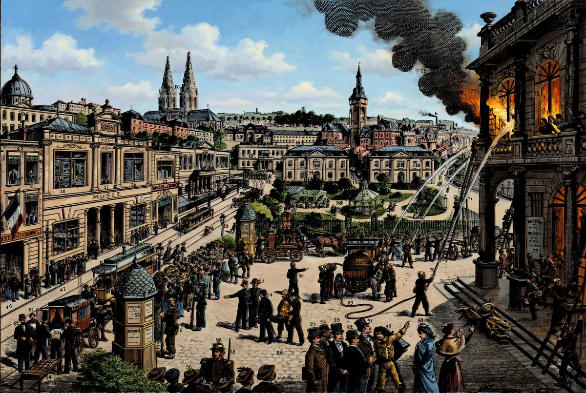
75TRIESMA SERIO TABELO No 11 La Urbo e lua monumenti. — L’Incendio. 65TROISIÈME SÉRIE TABLEAU No 11 La Ville et ses monuments. — L’Incendie. 751. — Me habitas granda urbo situita ye 100 kilometri de Oceano, e qua tamen esas
portuo (1) altaranga. La fluvio qua bordizas olu havas larjeso de 400 metri e formacas tre bela rado.
651. — J’habite une grande ville située à 100 kilomètres de l’Océan et qui est pourtant un
port (1) de premier ordre. Le fleuve qui l’arrose est large de 400 mètres et il forme une très belle rade.
752. — La tota parto dil urbo qua esas sur la
kayi (2) tote aspektas marala ed industriala, e formacas
preurbo (3) qua esas habitata nur da navani e laboristi. Ici laboras en la
fabrikerii (4) ed en la
gasiferio (5) di qua la alta
kameno (6) e la
gasometro videsas de tre fore.
652. — Toute la partie de la ville qui se trouve sur les
quais (2) a un aspect absolument maritime et industriel et forme un
faubourg (3) qui n’est habité que par des marins et par des ouvriers. Ceux-ci travaillent aux
fabriques (4) et à l’
usine à gaz (5) dont la haute
cheminée (6) et le
gazomètre se voient de très loin.
753. — En la mezepoko, la urbo esis fortifikita, ed on ankore trovas kelka restaji di lua rempari, aparte la
pordo (8) dil olda
fortifikita kastelo (7) flankumita per lua du
turmi (9) qui nun uzesas kom
karcero. 653. — Au moyen âge, la ville était fortifiée, et l’on rencontre encore quelques traces de ses remparts, en particulier la
porte (8) du vieux
château-fort (7) flanqué de ses deux
tours (9), qui servent aujourd’hui de
prison. 754. — En ica tota
quartero, qua aspektas tre olda, nur un konstrukturo esas relate moderna : to esas la
doganeyo (10). Ol esas situita inter la kayo e la
stradeto (11) qua duktas a la olda
komon-domo (12). On facile rikonocas ta lasta monumento pro la
klosheyo (13) gigantala qua dominacas l’antiqua urbo.
654. — Dans tout ce
quartier, dont l’aspect est très ancien, un seul bâtiment est relativement moderne : c’est la
douane (10). Elle est placée entre le quai et la petite
rue (11) qui conduit au vieil
hôtel de ville (12). On reconnaît facilement ce dernier monument grâce au gigantesque
beffroi (13) qui domine toute la vieille cité.
765. — Sur l’altra latero di la strado,
stacas edifico konstruktita samstile kam la doganeyo: to esas la
Borso (14). Un de lua fasadi regardas mikra placo ube esas la
prefekteyo (15). Fakte, nia urbo sen esar chef-urbego, esas tamen importanta chef-urbo di departmento.
655. — De l’autre côté de la rue s’élève un bâtiment construit dans le même style que la douane : c’est la
bourse (14). L’une de ses façades donne sur une petite place où se trouve la
préfecture (15). Notre ville, en effet, sans être une capitale, est cependant un important chef-lieu de département.
76La Maxim Alta Parto dil Urbo. 766. — La garnizono, sat grandanombra, esas lojata en vasta
kazerni (16) tre salubra; li extensas su til la gretaro dil
parko komonala (17). La
bulvardo (19) qua duktas ad ica parko pasas dop la
spar-kaseyo (18) ed abutas a la placo dil
katedralo (20).
666. — La garnison, assez considérable, est logée dans de vastes
casernes (16) très saines; elles s’étendent jusqu’aux grilles du
parc municipal (17). Le
boulevard (19) qui conduit à ce parc passe derrière la
caisse d’épargne (18) et aboutit à la place de la
cathédrale (20).
767. — Ta omna monumenti su extensas amfiteatre sur kolineto ube esas anke nia vasta
liceo (21).
667. — Tous ces monuments s’étalent en amphithéâtre sur une petite colline où se trouve également notre vaste
lycée (21).
76Se on decensas tra voyo kelke inklinita, qua rajuntas la Granda strado, on arivas al
Tribunalo (22) avan qua extensas su agreabla
gardeno publika (26). Ta
garden-placo ne esas tre granda, ma ol facas meze dil urbo oaziso de verdajo e koldeteso. Pro to ol esas tre frequentata da la urbani qui prizas venar sideskar sub la tendo dil
kafeerio (25), por askoltar la soldata muzikisti qui jovdie e sundie pleas en la
kiosko (27) pozita inter la gazoneyi e masivi.
66Si l’on redescend par une voie un peu en pente qui rejoint la Grande-Rue, on arrive au
palais de justice (22) devant lequel s’étend un agréable
jardin public (26). Ce
square n’est pas très grand, mais il met au milieu de la ville une oasis de verdure et de fraîcheur. Aussi est-il très fréquenté par les habitants de la ville, qui aiment à venir s’asseoir sous la tente du
café (25) pour écouter la musique militaire qui joue le jeudi et le dimanche dans le petit
kiosque (27) placé au centre des pelouses et des massifs.
768. — Sur un de ta gazoneyi stacas bronza
statuo (28), monumento erektita por la memoro di un de nia samurbani, qua facis granda servi a sua naskal urbo.
668. — Sur une de ces pelouses s’élève une
statue (28) de bronze, monument érigé à la mémoire de l’un de nos compatriotes qui a rendu de grands services à sa ville natale.
779. — Til nun nia urbo ne ja esas lumizata per la lumo elektrala, lu havas nur
gas-brulili (29). Ma la
hika jurnalaro kampanias por ke ta sistemo di lumizo esez plubonigata,
quale on ja perfektigis
la sistemo di traciono di la tramvoyi.
La olda veturi,
tirata da
kavali, esis praktike remplasata per
elektral tramvoyi (31) qui rapide transportas la voyajanti de un extremajo dil
urbo al altra, po tre
chipa preco.
669. — Notre ville n’est pas encore éclairée à la lumière électrique; elle n’a que des
becs de gaz (29). Mais les
journaux locaux font une campagne pour que ce système d’éclairage soit amélioré, comme on a déjà perfectionné le système de traction des tramways. Les anciennes voitures, traînées par des chevaux, ont été remplacées par de pratiques
tramways électriques (31) qui transportent rapidement les voyageurs d’un bout de la ville à l’autre, pour un prix très modique.
7710. — Proxim la Judicieyo esas la
Banko (32) ube on diskontas la komercal valori. La
banko-komisionisti (33) iras inkasar domicile la debaji.
6610. — Près du palais de justice se trouve la
banque (32), où l’on escompte les valeurs commerciales. Les
garçons de banque (33) vont à domicile faire les recouvrements.
7711. — La bel edifico qua stacas proxime, esas la
muzeo. Ol kune kontenas la
biblioteko (34) dil urbo, la bela
kolektaji pri naturcienco (35) (Naturmuzeo) e gracioza
piktur-muzeo (36) qua konstitucas splendid
expozeyo permananta.
6711. — Le bel édifice qui se trouve à côté est le
musée. Il contient à la fois la
bibliothèque (34) de la ville, de belles
collections d’histoire naturelle (35) (muséum) et une jolie
galerie de tableaux (36) qui constitue une superbe
exposition permanente.
77Ol apertesas por la publiko dufoye singla- semane, ma la stranjeri darfas vizitar lu irgadie po gratifiketo al
gardisto (37). La
piktisti (38) venas ibe por laborar. On vidas li
avan lia tresto, kun
planketo en manuo, kopiante la famoza pikturi.
67Il est ouvert au public deux fois par semaine, mais les étrangers peuvent le visiter tous les jours en donnant un pourboire au
gardien (37). Les
artistes peintres (38) viennent y travailler. On les voit devant leur chevalet, la
palette à la main, recopiant les tableaux célèbres.
7712. — Sur la altajo, dop la muzeo, on videskas la
kupolo (40) di la
hospitalo (39) e la konstrukturi di la
normal skolo (41) en qua esis exercata l’instruktisti di nia skoli komonala. Sur la placo dil Teatro esas
posto-kontoro (43) instalita en
domo privata (42).
6712. — Sur la hauteur, derrière le musée, on aperçoit le
dôme (40) de l’
hôpital (39) et les bâtiments de l’
école normale (41) où sont formés les instituteurs de nos écoles communales. Sur la place du Théâtre se trouve un
bureau de poste (43) installé dans une
maison particulière (42).
781. — Teroriganta rumoro difuzesas tra la urbo : incendio jus eventis en la teatro ! Ye l’instanto kande me arivas sur la
placo (96), ja la turbo esas asemblita sur la
trotuaro (46) e sur la
choseo (47). La
postisti (44) e la
letristi (45) ekiras la posto-kontoro.
Tramduktisto (48) devis haltigar sua (tram)-veturo por lasar pasar
ambulanco-veturo (50) urbala, qua arivas kun
kirurgiisto (52) e
flegisto (51) por flegar
vundito (53) adportita per
kamilo (54) proxim la
jurnal-kiosko (55).
671. — Un bruit sinistre se répand dans la ville : le feu vient d’éclater au théâtre. Au moment où j’arrive sur la
place (96) la foule est déjà massée sur le
trottoir (46) et sur la
chaussée (47). Les
employés des postes (44) et les
facteurs (45) sortent du bureau. Un
wattman (48) a été obligé d’arrêter son tramway pour laisser passer une
voiture des ambulances urbaines (50) qui arrive avec un
chirurgien (52) et un
infirmier (51) pour prendre un
blessé (53) que l’on a apporté sur un
brancard (54) auprès du
kiosque à journaux (55).
782. — Infantria kompanio, qua esis retroiranta de l’exerci, haltis por sekurigar l’ordinal servado kun la
kavalkanta jendarmi urbala (61).
La kavalkisti, di qui la kavali kabras, plu bone kam la
soldati (57) o la
jendarmi (63), retroirigas la
kuriozi (56). Cetere la jendarmi esas tre okupata. Un de li indikas a la
policisti (64) adube on devas transportar altra
acidentito (65), pumpisto kurajoza falinta de skalo.
672. — Une compagnie d’infanterie, qui revenait de l’exercice, s’est arrêtée pour assurer le service d’ordre avec les
gardes municipaux (61) à cheval. Les
cavaliers, dont les chevaux se cabrent, font mieux reculer les
curieux (56) que les
soldats (57) ou les
gendarmes (63). D’ailleurs, ces derniers sont fort occupés. L’un d’eux indique aux
agents de police (64) où il faut transporter une nouvelle
victime (65), un brave sapeur-pompier tombé d’une échelle.
783. —
L’oficiro (66) precizigas la loko ube on devas lokizar la
vapor-pumpilo (67) arivanta. Vartante ta potenta mashino, il baterie instaligis
manu-pumpilo (68) di qua la longa
tubo (69) lansas aquo torentatre sur la fairo. Sis pumpisti manovras ol, dum ke lia kamarado, qua tenas la
spricilo (70), direktas la
sprico (71) ad la centro dil incendio.
683. — L’
officier (66) précise l’endroit où doit se placer la
pompe à vapeur (67) qui arrive. En attendant cette puissante machine, il a fait mettre en batterie une
pompe (68) à bras, dont le long
tuyau (69) déverse sur le brasier des torrents d’eau. Six pompiers la manœuvrent pendant que leur camarade, qui tient la
lance (70), dirige le
jet (71) sur le foyer de l’incendie.
794. — An l’altra latero dil teatro, on apogis la granda
skalo (72). Ol posibligas a la pumpisti proximeskar ad la flami qui spricas inter vortici de nigra
fumuro (75).
684. — De l’autre côté du théâtre, on a dressé la grande
échelle (72). Elle permet aux sapeurs de s’approcher des flammes qui jaillissent au milieu de tourbillons de
fumée (75) noire.
795. —
L’incendio (74) naskis en la foyero dil
teatro (73), dum ke on repetis
l’opero di qua l’unesma
reprezento eventabus morge. Fortunoze nur poka
spektanti (76) esis en la spektosalono. La kompatindi refujis sur la
balkono (77) ube kurajoza
pumpisti (86) venas sokursar li per skalo e kordegi.
685. — Le
feu (74) a pris naissance dans le foyer du
théâtre (73), pendant une répétition de l’
opéra dont la première
représentation devait avoir lieu demain. Il n’y avait heureusement que peu de
spectateurs (76) dans la salle. Les malheureux se sont réfugiés sur le
balcon (77), où de courageux
pompiers (86) viennent à leur secours avec une échelle et des cordages.
796. — Sub la
peristilo (78), ube la
afisho (79) informas pri la reprezento, on vidas la
muzikisti (81) di
l’orkestro (80) fugar, kunportante lia instrumenti :
violino (81),
fluto (82),
violoncelo (83),
trombono (84),
tamburo (85), e. c.. On esforcas salvar parto dil
moblaro (87).
686. — Sous le
péristyle (78), où l’
affiche (79) annonce la représentation, on voit les
musiciens (81) de l’
orchestre (80) s’enfuir en emportant leurs instruments :
violon (81),
flûte (82),
violoncelle (83),
trombone (84),
tambour (85), etc. On essaie de sauver une partie du
mobilier (87).
797. —
L’aktoruli (89) e
l’aktorini (88),
kantistuli e
kantistini mustis fugar kun sua teatral
kostumo (90). La tenoro explikas a
jurnalisto (92) quale to eventis.
La raportisto quik adkuris de l’unesma instanto kun la autoritatozi :
prefekto (91),
urbestro (93),
komisario di polico (94) e
judicial oficisto (95), qui inquestos por judiciar pri la responsivesi.
687. — Les
acteurs (89) et les
actrices (88),
chanteurs et
cantatrices, ont dû fuir avec leur
costume (90) de théâtre. Le ténor explique à un
journaliste (92) comment les choses se sont passées. Le
reporter est accouru dès le premier moment avec les autorités : le
préfet (91), le
maire (93), le
commissaire de police (94) et un
magistrat (95), qui vont ouvrir une enquête pour établir les responsabilités.
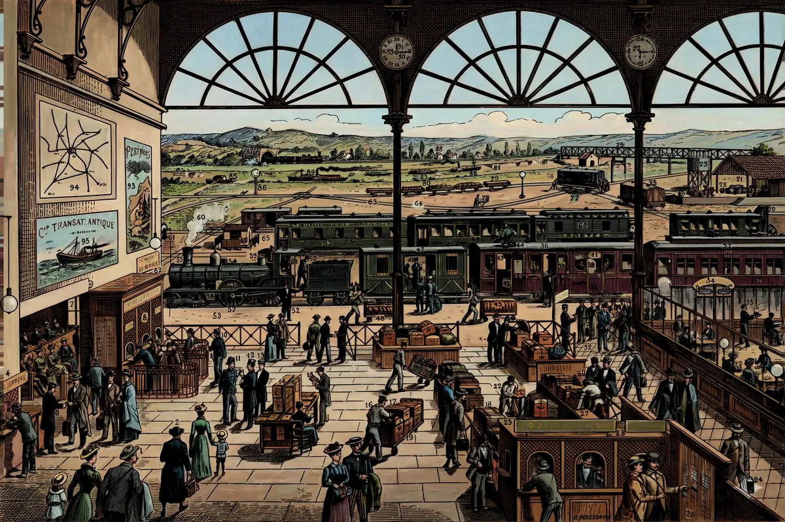
80TABELO No 12 La Staciono. — La Fervoyi. — La Navi. Noto. —
La kloko-tabeli uzata en singla nacioni esas diversa, ni do uzas kom exemplo la kloki di la Franca tabelo. 69TABLEAU No 12 La Gare. — Les Chemins de fer. — Les Bateaux. Nota. —
Les horaires choisis pour chaque langue étant différents, nous avons dû prendre comme exemple l’horaire du tableau français. 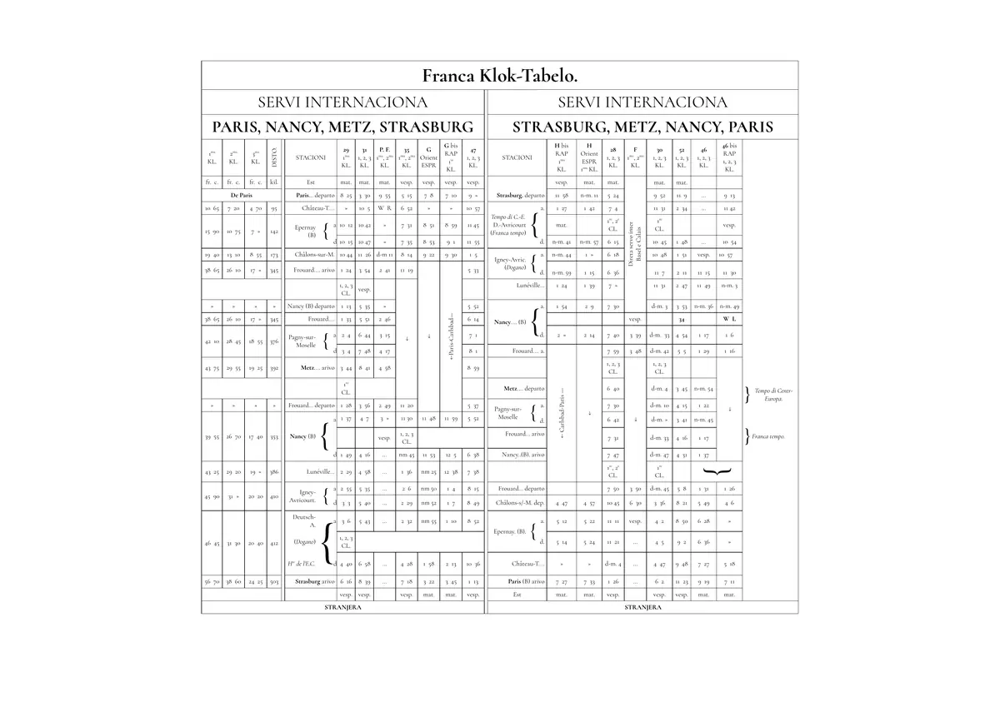
801. — Me jus voyajis tra Germania. Ante la departo, me komprabis
klok-libro por savar la departal kloko dil treni. Pos konstatir ke la maxim oportuna treno esas departonta de Paris, ye non kloki vespere, ed arivonta aden Strasburg ye un kloko dek-e-tri minuti, me preparis mea voyajo, ed en la morga dio, me igis duktar me a la staciono.
691. — Je viens de faire un voyage en Allemagne. Avant de l’entreprendre, j’avais acheté un
indicateur pour savoir l’heure de départ des trains. Ayant constaté que le train le plus commode partait de Paris à 9 heures du soir et arrivait à Strasbourg à 1 h. 13, je fis mes préparatifs de voyage et, le lendemain, je me fis conduire à la gare.
802. — Kande me eniris la granda departohalo, dop olda
sacerdoto rurala, qua manue kunportis sua
voyaj-sako , multa
voyajonti esis ja arivinta.
692. — Lorsque je pénétrai dans la grande salle de départ, derrière un vieux
prêtre de campagne qui portait à la main son
sac de nuit , un grand nombre de
voyageurs étaient déjà arrivés.
80Pro ke me volis sendar
depesho (telegramo) , me igis indikar a me da
kontrolisto la telegraf-kontoro .
69Comme je voulais envoyer une
dépêche (télégramme) , je me fis indiquer le
bureau du télégraphe par un
contrôleur .
803. — Ante pasar aden la
varto-salono me iris provizar me per
bilieto kun retroveno.
693. — Avant de passer dans la
salle d’attente j’allai prendre un
billet d’aller et retour.
804. — Me ne longe vartis an la
gicheto , nam poka personi esis ibe.
Soldato , qua esis departanta konjede, komplezis cedar a me sua foyo, tale ke me havis suficanta tempo por demandar kelk informi de la
stacionestro , qua esis konversanta kun la
komisario dil surveyado e kun la
jendarmo dejuranta.
694. — Je n’attendis pas longtemps au
guichet , car il y avait peu de monde. Un
soldat , qui partait en permission, me céda obligeamment son tour, de sorte que j’eus le temps de demander certains renseignements au
chef de gare , qui causait avec le
commissaire de surveillance et le
gendarme de service.
815. — Komprinte jurnalo che la
biblioteko , me igis ponderar mea
bagaji quin
portisto jus adduktis per
charioto pakala ;
la kontoristo komisita pri la
ponder-aparato savigis da me, ke mea kofro pezas triadek-e-kin kilogrami; to facis
superpezo de kin kilogrami; po qua me debas suplementa pago, ye la
gicheto dil bagaji
.
695. — Après avoir acheté un journal à la
bibliothèque , je fis peser et enregistrer mes
bagages , qu’un
porteur (facteur) venait d’amener sur un petit
chariot ; l’
employé préposé à la
bascule m’annonça que ma malle pesait 35 kilo grammes, ce qui me faisait une
surcharge de 5 kilogrammes, pour laquelle je devais payer un supplément au
guichet des bagages .
816. — Pro ke me esis tro frua, me havis libertempo por examenar la cirkulado dil voyajanti en la staciono. Uli depozis o riprenis sua negrava bagaji che la
(bagaj)-depozeyo ; altri konsultis la
klok-tabeli . L’arivanta voyajanti hastis al
ekireyo kun sua
valizo en manuo. Kelki vartis en la
(bagaj)-distributeyo e prizentis sua
bilieto por riprenar sua kofri,
kesti o
korbi .
706. — Comme j’étais en avance, j’eus le loisir d’examiner le mouvement des voyageurs dans la gare. Les uns déposaient ou reprenaient de menus bagages à la
consigne ; d’autres consultaient les
horaires . Les voyageurs qui arrivaient se pressaient vers la
sortie , leur
valise à la main. Quelques-uns s’arrêtaient à la
distribution des bagages et présentaient leur
bulletin pour retirer leurs malles,
caisses ou
paniers .
817. —
L’oficisti dil acizo sorgoze exploris la paki por konstatar kad on havas ulo deklarenda.
707. — Les
employés de l’octroi visitaient soigneusement les colis pour voir si l’on avait quelque chose à déclarer.
818. — Ula voyajanti adiris la
bufeto , ube
garsono zelis pri servar li. Li mustas hastar, nam la
treno , qua esas espreso, ne longe restos en la staciono.
708. — Certains voyageurs se dirigeaient vers le
buffet , où le
garçon s’empressait de les servir. Ils étaient forcés de se hâter, car le
train , qui était un express, ne restait pas longtemps en gare.
819. — Pose me adiris la departo-trotuaro e serchis direta
vagono por ne esar koaktata chanjar la vagono dum la voyajo. Me acensis aden koridor-veturo qua kontenas
fako por fumeri e fako rezervita por « siorini sola ».
709. — Je passai ensuite sur le quai de départ et je cherchai un
wagon direct pour n’être pas obligé de changer de train pendant le voyage. Je montai dans une voiture à couloir qui comprend un
compartiment pour fumeurs et un compartiment réservé aux « dames seules ».
8210. — Pos acensir la
ped-apogilo , klozir la
pordo , volvir la
storo e lokizir mea mikra bagaji sur la
reto , me sidis sur la
benketo . Vidante la
lampisto acendar la lampi, me pensis, ke me devos pasar nokto en la vagono e me advokis l’oficisto komisita pri la lokaco dil
kapkuseni por demandar un de oli.
7010. — Après avoir gravi le
marche-pied , refermé la
portière , relevé le
store et installé mes menus bagages dans le
filet , je pris place sur la
banquette . En voyant le
lampiste allumer les lampes, je songeai que j’avais une nuit à passer en wagon et j’appelai l’employé chargé de la location des
oreillers pour lui en demander un.
8211. — La tren-konduktoro venis verifikar la bilieti. Me questionis lu pro quo ni ne ja departis, nam esas la justa kloko. Il respondis a me ke la
trenestro (46) okupesas per pozigar bicikli en la
furgono . Pluse, on ne ja chanjabis omna pedvarmigili
.
7011. — Le conducteur du train vînt vérifier les billets. Je lui demandai pourquoi nous ne partions pas puisqu’il était l’heure. Il me répondit que le
chef de train (46) était occupé à faire placer des bicyclettes dans le
fourgon des bagages . De plus, on n’avait pas encore changé toutes les
bouillottes .
8212. — Ma ni esis balde departonta, nam la
fairisto , sur sua
tendro prenis karbono por ecitar la fairo di la
lokomotivo , e
la mashinisto vartis nur la signalo di la
staciono-subchefo , qua esis sur la
trotuaro .
7112. — Mais nous n’allions pas tarder à partir, car le
chauffeur , sur son
tender , prenait du charbon pour activer le feu de la
locomotive , et le
mécanicien n’attendait plus que le signal du
souschef de gare, qui était sur le
quai .
8213. — La
kaldiero di la lokomotivo matide grondis; la
kameno vomis torenti de fumuro mixita kun
vaporo . Stridanta
siflo sonegis e la
pistoni moveskis, impulsante la
roti di la pezoza mashino.
7113. — La
chaudière de la locomotive grondait sourdement; la
cheminée vomissait des torrents de fumée mêlée de
vapeur . Un coup de
sifflet strident retentit et les
pistons se mirent en mouvement, actionnant les
roues de la lourde machine.
8214. — La rapideso dil treno, kuranta sur la
reli esis acelerata; la
trotuari desaparis; ni preterpasis la
latrini , ed anke vagonaro garita sur l’altra
voyo :
dormo-vagoni ,
restor-vagono ,
posto-vagono .
7114. — La vitesse du train, filant sur les
rails , s’accéléra; les
trottoirs cessèrent; nous dépassâmes les
cabinets d’aisances , ainsi qu’une file de wagons garés sur une autre
voie :
wagonslits ,
wagon-restaurant ,
wagon-poste .
(*) Noto. — Komprenende la voyajo-deskripto esas segun la pre-milita frontiero.
8315. — Pose, la
staciono dil vari pasis avan nia okuli. Sub la hangari, oficisti kargis la
vari expediita per nerapida treno.
Esquadani proxim l’
aquo-rezervuyo (73) manovris
bestio-vagoni e
platforma vagoni por formacar
varo-treno .
7115. — Puis ce fut la
gare des marchandises qui passa devant nos yeux. Sous les hangars, des employés chargeaient les
marchandises expédiées en petite vitesse. Des
hommes d’équipe , près du
château-d’eau (73), manœuvraient des
wagons à bestiaux et des
wagons plateforme , pour former un
train de marchandises .
8316. — Ni transiris la lasta
bifurkeyo , proxim qua stacis l’agulisto; ni preteriris la
signal-disko e la staciono fore desaparis.
7116. — Nous franchîmes la dernière
aiguille , auprès de laquelle se tenait l’aiguilleur; nous dépassâmes le
disque et la gare se perdit dans le lointain.
8317. — Balde ni trairis
fera ponto (74) qua transpasas la
fluvio . Pos trairir ta ponto, ni alongiris la rivero, sur qua
remorkeri potenta tiris pezoza
kargo-bateli (83). Ni pluse vidis
voyaj-navo , kande ol esis abordanta
pontono .
7117. — Bientôt nous nous engageâmes sur le
pont de fer (74) qui traverse le
fleuve . Ce pont franchi, nous longeâmes la rivière, où de puissants
remorqueurs traînaient de lourds
chalands (83). Nous aperçûmes aussi un
bateau de voyageurs , au moment où celui-ci allait aborder au
ponton .
8318. — Pos rapidege preterpasir plura stacioni, ni trairis kelka
tuneli e lasis dop ni
dometi sennombra
di
baril-gardisti. Bersate dal sukusado dil treno, me profunde dormeskis.
7218. — Après avoir brûlé plusieurs stations, nous traversâmes quelques
tunnels et nous laissâmes derrière nous d’innombrables
maisonnettes de
gardes-barrières. Bercé par le cahotement du train, je m’endormis profondément.
83Deutsch-Avricourt-Staciono. 8319. — Me esis subite vekigata dal voco di oficisto krianta : « Deutsch-Avricourt !
. Omni decensez ! » Eventis l’inspekto da la dogano ed omna tedanta formalaji di la frontiero. Me mustis konformigar mea posh-horlojo a la
horlojego di la staciono, qua esis tro frua per kinadek e kin minuti; apene vekigita, me desfacile distingis la
grand indexo de la
mikra ; la
cifro-plako ipsa esis tote konfuza pro la matinal nebuleto.
7219. — Je fus brusquement réveillé par la voix d’un employé qui criait « Deutsch-Avricourt ! Tout le monde descend ». C’était la visite de la douane et toutes les ennuyeuses formalités de la frontière. Il fallut régler ma montre sur l’
horloge de la gare qui avançait de 55 minutes; à peine réveillé je distinguais difficilement la
grande aiguille de la
petite ; le
cadran lui-même était tout embrouillé par la brume matinale.
8420. — Dum ke la doganisti facis sua inspekto, me ocitante dechifris la
afishi qui dekoras la stacion-muri. Me dejunis por pasigar la tempo , konsultis la mapo dil Germana
reto por vidar quanta disto ankore separas me de Strasburg, e me rieniris mea vagono, rifortigita dal espero balde atingor la skopo di mea voyajo.
7220. — Pendant que les douaniers procédaient à leur visite, je déchiffrai en bâillant les
affiches qui décorent les murs de la gare. Je déjeunai pour faire passer le temps, je consultai la carte du
réseau allemand pour voir quelle distance me séparait encore de Strasbourg, et je remontai en wagon, réconforté par l’espoir d’arriver bientôt au but de mon voyage.
(*) Pri la detali di chambro, videz la tabelo No. 6.
(*) Voir, pour les détails de la chambre, le tableau no 6.
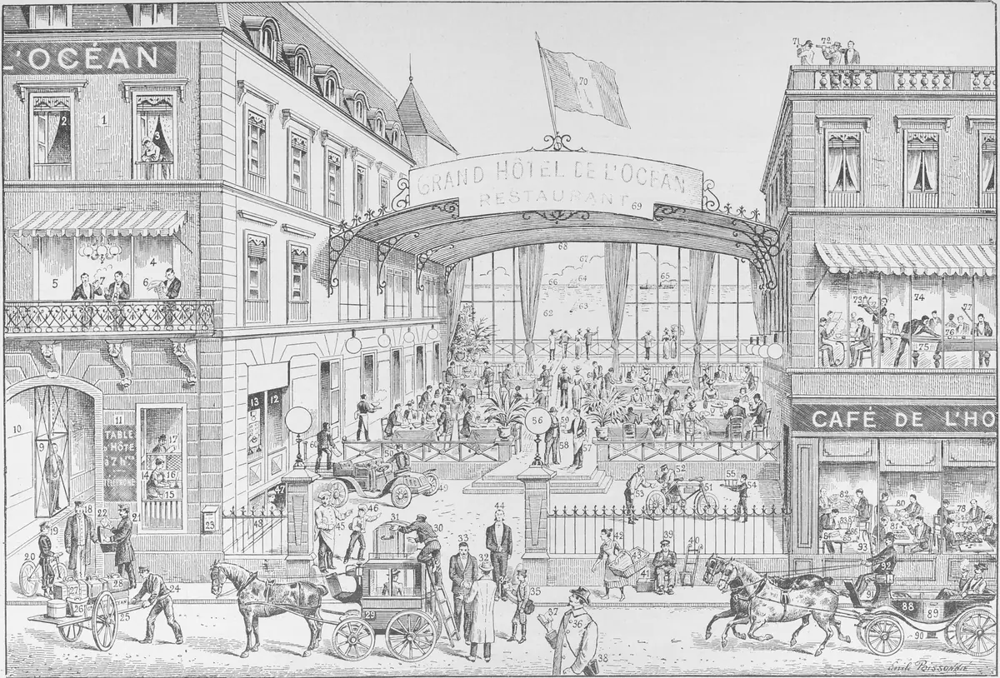
85TABELO No 13 La Hotelo. — La Restorerio. — La Kafeerio. 73TABLEAU No 13 L’Hôtel. — Le Restaurant. — Le Café. 851. — Arivinte hiere vespere en Royan, me lojeskis che «
Hotelo di Oceano » qua esabis rekomendata a me da amiko.
731. — Arrivé hier soir à Royan, je suis descendu à
l’Hôtel de l’Océan, qui m’avait été recommandé par un ami.
85On furnisis a me bela
chambro , sur la duesma
etajo ube me tre bone dormis
.
73On m’a donné une jolie
chambre , au
deuxième étage , où j’ai très bien dormi
.
852. — Camatine, ekiranta mea chambro, en qua la
servistino adportabis la dejuneto, me eniris la
fumeyo qua anke esas uzata kom
lekteyo por lektar la
jurnali , fumante
sigareto . Pos lektir, me decensis per l’
acensilo ed iris promenar tra la urbo.
732. — Ce matin, en sortant de ma chambre, où la
bonne m’avait apporté mon premier déjeuner, je suis allé au
fumoir qui, en même temps, sert de
cabinet de lecture , pour parcourir les
journaux , en fumant une
cigarette . Ma lecture finie, je suis descendu par l’
ascenseur et je suis allé me promener en ville.
853. — Pro ke me obliviabis questionar la
kontoristo di la hotelo pri qua kloko on donas la repasti sur la
komuna tablo , me frue retrovenis e profitis lo por irar balnar en la
balneyo di la hotelo. Pose me iris itere a la
kaseyo por telefonar ad un de mea amiki. Ma la
telefonilo esis okupata; vidante mea embaraseso la
kasistino , qua esis registraganta
fakturo sur la
voyajeroregistro pregis la
pordistulo sendar la
grumo facar mea komiso
bicikle .
733. — Comme j’avais oublié de demander au
bureau de l’hôtel à quelle heure on servait le repas de la
table d’hôte , je suis rentré de bonne heure et j’en ai profité pour aller prendre un bain dans la
salle de bain de l’hôtel. Je suis ensuite revenu à la
caisse pour téléphoner à un de mes amis. Mais le
téléphone était occupé; voyant mon embarras, la
caissière , qui relevait une
note sur le
livre des voyageurs , pria le
concierge d’envoyer le
chasseur faire ma commission avec sa
bicyclette .
854. — Me dankis elu ed ekiris por donar gratifiketo a la
portisto (la penlaboristo) qua adportis de la staciono sur sua
manuveturo mea
chapel-buxo ,
mea valizo e
mea voyaj-sako . La
letristo jus arivinta, donis a me
letro .
734. — Je la remerciai et je sortis pour donner un pourboire à l’
homme de peine qui apportait de la gare, dans sa
voiture à bras , mon
carton à chapeau , ma
valise et mon
sac de voyage . Le
facteur , qui arrivait à ce moment, me remit une
lettre .
865. — Me restis ankore kelkatempe sur la solio dil pordo, proxim la
letrobuxo , regardonte la cirkulado sur la strado. La
konduktoro dil
omnibuso esis karganta sur sua veturo la
kofro (31) di
voyajero quan la
hotel-mastro esis adianta. Yuna
telegrafisto senhaste adportis
telegramo por kliento di la hotelo;
turisto kun sua
fotograf-aparato bandoliere, konsultis sua
guid-libro .
735. — Je restai encore quelque temps sur le seuil de la porte, près de la
boîte aux lettres , à regarder le mouvement de la rue. Le
conducteur de l’
omnibus chargeait sur sa voiture la
malle d’un
voyageur auquel l’
hôtelier faisait ses adieux. Un petit
télégraphiste apportait, sans se presser, une
dépêche pour un client de l’hôtel; un
touriste , son
appareil photographique en bandoulière, consultait son
guide .
866. — Avan la greto, sensucia
komisionisto dormetis inter sua
porto-hoko e sua
ciraj-kesto , dum ke yuna
(linjo-)lavistino qua portis
korbo de linjaro, ridis pro la solena mieno dil
tabl-oficisto qua stacis apud la pordo.
746. — Devant la grille, un placide
commissionnaire sommeillait entre ses
crochets et sa
boîte à cirer , tandis qu’une petite
blanchisseuse , qui portait un grand
panier de linge, riait de l’air solennel du
maître d’hôtel , qui se tenait auprès de la porte.
867. — Vidante la
koquistulo , qua ekiris sua
koqueyo situita ye la
sub-ter-etajo por sendar
skuristo facar komiso, me memoris ke la horo dil dejuno esas balda e me eniris la restoreyo, trairante la korto en qua
motoristo garis sua
automobilo , dum ke
mashinisto reparis, segun l’indiki dil
ciklisto ,
petrol-triciklo qua jus esis acidentita.
747. — La vue du
cuisinier , qui était sorti de sa
cuisine , située dans le
sous-sol , pour envoyer un
marmiton faire une commission, me rappela que l’heure du déjeuner était proche et je me rendis au restaurant en traversant la cour, dans laquelle un
chauffeur garait son
automobile , tandis qu’un
mécanicien réparait, sur les indications du
cycliste , un
tricycle à pétrole , auquel il venait d’arriver un accident.
868. — Me questionis yuna
grumo qua portis
bir-glasi , ka la komuna tablo esas sub la verando, e pro lua afirmanta respondo, me okupis plaso ye un de la tabli ed igis donar a me bonega repasto.
748. — Je demandai à un petit
groom qui portait des
bocks , si la table d’hôte était sous la véranda, et sur sa réponse affirmative, je pris place à l’une des tables et je me fis servir un excellent repas.
(*) Per helpo di la disho-listo enduktita en la vortaro, la docisto darfos facile diversigar la suba menuo.
(*) Nota. — A l’aide de la liste des mets contenue dans le vocabulaire, le professeur pourra varier facilement le menu ci-dessous.
879. — La garsono adportis a me la menuo
dil dejuno e la vin-listo. Me selektis e komendis kom
acesorajo kreveti kun
butro, e, kom entreo,
tripi segun la modo di Caen. Me ne manjis
fisho, ma demandis porciono de mutonyunal
kruro, e, kom
legum-disho, spinati kun kremo. Pose, pro ke nula de la
entremesi plezis a me, me igis adportar diversa deseri,
fromajo, frukti e
bisquiti. Me pluse adjuntis bonega Saint-Emilion-
vino, e tre kontenta pri mea repasto me livis la tablo pos donacir al
garsono bel
gratifiketo .
749. — Le garçon m’apporta le menu
du déjeuner et la carte des vins. Je fis mon choix et je lui commandai en
hors-d’œuvre des
crevettes et du
beurre, et, pour entrée, des
tripes à la mode de Caen. Je ne pris pas de
poisson, mais je demandai une portion de
gigot d’agneau et, comme
légume, des
épinards à la crème. Puis, aucun des
entremets ne me plaisant, je me fis apporter des
desserts variés,
fromage,
fruits et
biscuits.
J’avais arrosé ce menu d’un excellent
vin de SaintÉmilion, et je quittai la table très satisfait de mon repas, après avoir gratifié le
garçon d’un bon
pourboire .
8710. — Vidante me pronta por departar, la
jerero propozis a me adiror la balkono por admirar la splendida panoramo di
Oceano . Fore on videskis pesko-
barketi ,
seglo-navi ed enorma
paketboto (65) di qua la nigra silueto salias sur la blanka
nubi di la
horizonto (66). Lejera brizo igis fluktuar la
standardo stekita super l’
insigno di la
halo (68).
7510. — En me voyant prêt à partir, le
gérant me proposa de passer sur le balcon pour admirer le superbe panorama de l’
Océan . On apercevait au loin de petites
barques de pêche, des
voiliers et un énorme
paquebot (65), dont la silhouette noire se détachait sur les
nuages blancs de l’
horizon (66). Une brise légère faisait flotter le
drapeau planté au-dessus de l’
enseigne du
hall (68).
8711. — La spektajo esis tante interesanta, ke me decidis acensor morge sur la teraso dil kafeerio kunportante
bilorneto o
lorno .
7511. — Le spectacle était si intéressant que je me promis de monter le lendemain sur la terrasse du café en emportant une
lorgnette ou une
longuevue .
8812. — Livante la balkono, me adiris la kafeerio di la hotelo por glutar
drinkajo , ludante
biliardo-partio . Senhalte me trairis la kafe-salono en qua multa konsumanti ludis per
shako , per
dami , per
domino-stoni , per
triktrako o per
karti , e me direte acensis la
biliardeyo (74).
7512. — En quittant le balcon, je me rendis au café de l’hôtel pour prendre une
consommation , en faisant une partie de
billard . Je traversai sans m’arrêter la salle du café où de nombreux consommateurs jouaient aux
échecs , aux
dames , aux
dominos , au
trictrac ou aux
cartes , et je montai directement à la
salle de billard (74).
8813. — Kande la partio esis finita, me decensis a la teretajo e demandis de la garsono
kuverto (84),
papero (83),
postal-marko ,
plumo ed
inko por skribar letro.
7513. — Lorsque la partie fut finie, je redescendis au rez-de-chaussée et je demandai au garçon une
enveloppe (84), du
papier (83), un
timbre-poste , une
plume et de l’
encre pour écrire une lettre.
88Pose me advokis
veturisto di qua la
veturo esis haltinta avan la kafeerio. Me questionis lu pri la preco segun la hori od un kuro, e, kande ni konkordis pri la preco, il apertis a me la
vetur-pordo ed instalis me. Il riacensis sur la
sidilo , rapide startigis la kavali per
flogeto e ni departis por promeno charmanta.
75Puis j’appelai un
cocher dont la
voiture était arrêtée en face du café. Je lui demandai le prix de l’heure et de la course, et, lorsque nous fûmes d’accord sur le prix, il m’ouvrit la
portière et je m’installai dans la voiture. Il remonta sur son
siège , enleva ses chevaux d’un léger coup de
fouet et nous partîmes faire une délicieuse promenade.
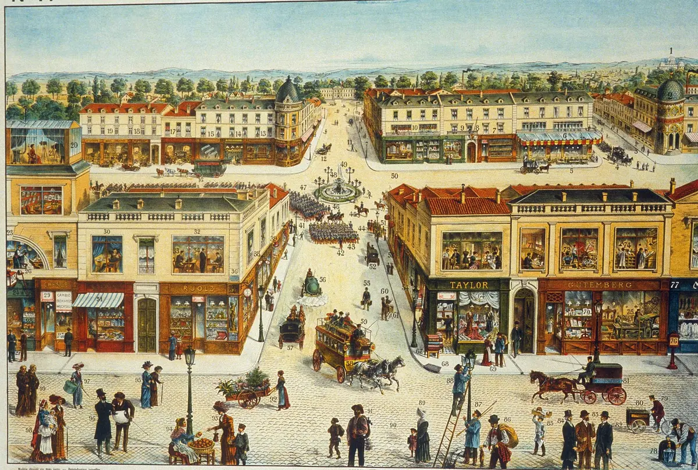
89La Strado. — La Komercisti. 76La Rue. — Les Commerçants. 891. — Mea amiko Ioannes, qua habitas la ruro, venis pasar tri dii en mea familio.
Til lore il ne havabis l’okaziono vidar grand urbo; pro to ni uzas nia omna jorni promenante, e me explikas a lu to quon il ne konocas.
761. — Mon ami Jean, qui habite la campagne, est venu passer trois jours dans ma famille. Jusqu’à présent il n’avait pas encore eu l’occasion de voir une ville importante, aussi nous employons toutes nos journées à nous promener et je lui explique ce qu’il ne connaît pas.
892. — Unesme ni iris vizitar l’
observatorio , qua tre interesis lu. Retrovenante tra la
strado ube esas la
Turka balnerio , ni renkontris
funero . Avan la
funeral konvoyo marchis la
klerikaro, preiranta la
mortinto-veturo, en qua esis pozita la
sarko. Mult amiki akompanis la
trauranta familio.
762. — Nous sommes allés tout d’abord visiter l’
observatoire , qui l’a beaucoup intéressé. En revenant par la
rue où se trouve l’
établissement de bains turcs , nous avons rencontré un
enterrement . En tête du
convoi funèbre marchait le
clergé, précédant le
corbillard dans lequel était placé le
cercueil. De nombreux amis accompagnaient la famille en
deuil.
89Pos la paso di la sequantaro, ni transiris la strado avan la granda
birerio (5) en qua multa
konsumanti drinkis
biro sur la teraso, shirmate dal vitrizita
marquizo .
76Après le passage du cortège, nous avons traversé la rue devant la grande
brasserie (5), où de nombreux
consommateurs buvaient de la
bière sur la terrasse, à l’ombre de la
marquise vitrée.
893. — Ioannes esis astonegata da la
skudo pozita inter la magazino di la
liquoristo e ta di la
muzik-vendisto . Il questionis me pri olua signifiko; me respondis ke ol indikas la
konsuleyo Angla, e remarkigis da ilu la
konsulo qua esas sur la balkono.
763. — Jean fut très intrigué par l’
écusson placé entre le magasin du
liquoriste et celui du
marchand de musique . Il me demanda ce qu’il signifiait ; je lui répondis qu’il indiquait le
consulat d’Angleterre, et je lui fis voir le
consul , qui était sur le balcon.
894. — Kompreneble ni haltis avan l’estaleyo dil
muzik-instrumenti, harmoniumi, orgeni e
piani; ni regardis l’ilustrita kovrili di la par
ticioni e dil
muzikaji por piano, ed admiris la
liro ek orizita ligno, qua uzesas kom insigno.
764. — Nous nous sommes arrêtés naturellement devant l’étalage des
instruments de musique,
harmoniums, orgues et
pianos ; nous avons regardé les couvertures illustrées des
partitions et des
morceaux pour piano, et admiré la
lyre en bois doré qui sert d’enseigne.
905. — La polva nubi facita dal
balayisti e la
balayo-veturo koaktis ni rapide pasar avan bela
moblari dil
moblo-vendisto ed avan l’estaleyo di
furneli e
lampi dil
lad-(if-) isto .
765. — Les nuages de poussière soulevés par les
balayeurs et la
balayeuse mécanique nous obligèrent à passer rapidement devant les beaux
mobiliers du
marchand de meubles et devant l’étalage de
poêles et de
lampes du
quincaillier .
906. — Cetere, icaloke, ni koaktesis livar la trotuaro, nam ol esis inkombrita per paki, quin on prenis de
transporto-veturo por lokizar li en
magazino quan on jus lokacabis.
776. — D’ailleurs, à cet endroit, nous avons été obligés de quitter le trottoir, car il était encombré par des colis que l’on descendait d’une
voiture de déménagement pour les porter dans un
magasin qui venait d’être loué.
90To impedis ni vidar la bela veturi dil
veturifisto , ma ne impedis ni haltar por regardar la
pakigisto facanta kesto por sua vicino, la
vendisto di cikli ed automobili . Pose, pro ke ja esis kelke tarde, ni retrovenis a la hemo.
77Cela nous empêcha de voir les jolies voitures du
carrossier , mais non de nous arrêter pour regarder l’
emballeur faire une caisse pour son voisin le
marchand de cycles et d’automobiles ; Puis, comme il était déjà assez tard, nous sommes rentrés à la maison.
907. — Ye la morga dio, mea matro propozis a Ioannes ke on fotografez lu, pose el komisis me por akompanar lu che la
fotografisto . Pos la dejuno, ni iris aden la
laboreyo di l’artisto, che qua ni koaktesis sat longe vartar. Por okupar ni, ni regardis la
portreti (22) pendanta an la muro.
777. — Le lendemain, ma mère proposa à Jean de le faire photographier et elle me chargea de l’accompagner chez le
photographe . Après déjeuner, nous nous sommes rendus à l’
atelier de l’artiste, où nous avons été obligés d’attendre assez longtemps. Pour nous occuper, nous avons regardé les
portraits (22) pendus au mur.
90Kande esis nia foyo, la laboro ne duris longe, e quik kande mea amiko finis pozar avan la
fotografilo , ni decensis.
77Lorsque notre tour est arrivé, l’opération n’a pas été longue et, dès que mon ami eut fini de poser devant l’
appareil photographique , nous sommes redescendus.
908. — Sur l’unesma etajo, ni vidis tra la pordo dil
kuafisto (23), olqua esas apertita, lua garsono qua tondis la hararo di kliento.
778. — Au premier étage, nous avons vu par la porte du
coiffeur (23), qui était ouverte, son garçon qui taillait les cheveux d’un client.
91Arivinte en la strado, ni pasis avan la
tabakvendeyo . Ioannes esis tante amuzata da la reda
lanterno e la
grosa pipo qua esas uzata kom
insigno , ke il kolizionis kun du olda siori qui konversis
sniflante tabako .
77Arrivés dans la rue, nous passâmes devant le
bureau de tabac . Jean était si amusé par la
lanterne rouge et la
grosse pipe qui sert d’
enseigne qu’il alla se heurter contre deux vieux messieurs qui causaient en prenant une
prise .
919. — La omnalanda
banko-bilieti e
monetpeci expozita en la
vetrino dil
kambiisto kelkainstante atraktis nia atenco, ma pro ke esis la kloko repastetar, ni eniris che la
kukifisto (31) sen haltar plu longe.
779. — Les
billets de banque et les
pièces de monnaie de tous pays exposés dans la
vitrine du
changeur attirèrent un moment notre attention ; mais, comme il était l’heure de goûter, nous sommes entrés chez le
pâtissier (31), sans nous arrêter plus longtemps.
9110. — Vidante omna
friandaji quin kontenis la magazino,
kuki, miel-kuki, bisquiti ed omnasorta
bonboni, ni ne facile povis selektar. Fine Ioannes selektis la
krem-kuki, e me prenis nur mikra
ceriz-tarto, nam la sukraji do
lorigas mea denti, e me tote ne deziras irar tro ofte vizitar la
dentisto .
7810. — A la vue de toutes les friandises que contenait le magasin,
gâteaux, pains d’épice, biscuits et
bonbons de toute sorte, nous ne savions que choisir. Jean se décida enfin pour les
gâteaux à la crème, et moi, je ne pris qu’une petite
tarte aux cerises, car la
confiserie me donne
mal aux dents, et je ne tiens pas du tout à aller rendre trop souvent visite au
dentiste .
9111. — Por montrar a mea amiko
skribomashino pri qua il audabis parolar, ma quan il ne konocis, ni eniris la
skribo-chambro di mea
kuzulo . Ni trovis ilu diktanta sua letri a sua
sekretario (35) qua esas
stenografisto. Apene kande letro esis finita,
mashinskribisto rikopiis olu per sua mashino. Dezirante ne interruptar la okupesi di mea parento, ni restis che lu nur dum kelka instanti.
7811. — Pour montrer à mon ami une
machine à écrire, dont il avait entendu parler, mais qu’il ne connaissait pas, nous sommes entrés dans le
bureau de mon
cousin . Nous l’avons trouvé dictant sa correspondance à son
secrétaire (35), qui est
sténographe. A peine une lettre était-elle finie, qu’un
dactylographe la recopiait rapidement à l’aide de sa machine. Ne voulant pas interrompre les occupations de mon parent, nous ne sommes restés que quelques instants chez lui.
9112. — Sub la kontoro di mea kuzulo, habitas granda
horlojo-juvelisto (37) qua esas pluse orlaboristo. Lua splendida magazino kontenas multa
horloji, pendul-horloji, posh-horloji, kateneti e precoza
juveli, exemple
perlo-koliari, ora
braceleti, orel-ringi e
fingro-ringi ornita per
lapidi e
diamanti. Un de la vetrini esas aparte rezervita por la
oraji e kontenas importanta kolektajo de arjenta
manjilari.
7912. — Au-dessous du bureau de mon cousin habite un grand
horloger-bijoutier (37) qui est en même temps
orfèvre. Son superbe magasin contient une quantité d’
horloges, de
pendules, de
montres, de
chaînes et de
bijoux de prix, tels que
colliers de perles,
bracelets en or,
boucles d’oreilles et
bagues ornées de
pierres précieuses et de
diamants. L’une des vitrines est spécialement consacrée à l’
orfèvrerie et renferme un choix considérable de
couverts en argent.
9213. — Turnante ye l’angulo di la strado, me remarkis ke on chanjabis la
plako pozita proxim la
numero di la domo. Me esis laute diconta mea remarko, kande la joyoza soni di
la militistal muziko esis audata. Ni kureskis renkontre a la regimento, sen reflektir ke
lu esis pasonta avan la magazini dil
chapelisto (39) e dil
gantisto (40), e ke ni esabus tam bone lokizita por vidar olua defilo restante avan la vetrino dil
optikisto (38), tote provizita per
naz-binokli, orel-binokli e
lorneti.
7913. — En tournant le coin de la rue, je me suis aperçu que l’on avait changé la
plaque placée auprès du
numéro de la maison. J’allais en faire tout haut la réflexion, lorsque les sons joyeux de la musique militaire se sont fait entendre. Nous nous sommes mis à courir au devant du régiment, sans réfléchir qu’il allait passer devant les magasins du
chapelier (39) et du
gantier (40), et que nous aurions été tout aussi bien pour le voir défiler en restant devant la vitrine de l’
opticien (38), toute remplie de
lorgnons, de
lunettes et de
lorgnettes.
9314. — Avan la
regimento marchis la
tamburestro sequata da la
tamburisti , la
klarionisti e la tota
muzikistaro. La gene
ralo qua esis sur la placo kun sua adjutanto, esis haltinta proxim la
aquo-spricilo di la
fonteno , por asistar la
defilo.
8014. — En tête du
régiment marchait le
tambour-major , suivi par les
tambours , les
clairons et toute la
musique. Le
général , qui se trouvait sur la place avec son aide-de-camp, s’était arrêté auprès du
jet d’eau de la
fontaine , pour assister au
défilé.
93La stab-oficiri (46), la
kolonelo e la
lietnantokolonelo salutis lu per espado.
La mayori esis avan sua
batalioni e singla
kapitano komandis sua
kompanio, dum ke la
lietnanti, sublietnanti e
suboficiri okupis sua kustumata plaso apud sua viri.
80Les officiers d’
état-major (46), le
colonel et le
lieutenant-colonel, le saluèrent de l’épée. Les
commandants se tenaient à la tête de leur
bataillon et chaque
capitaine commandait sa compagnie, tandis que les
lieutenants, sous-lieutenants et
sous-officiers occupaient leur place ordinaire auprès des hommes.
9315. — Multa pasanti grupeskabis sur
la voyo-kruco ; la komercisti, la
parapluvisto , la
tintisto (53), l’
armifisto (54) ekiris por vidar la
soldati. Omna vehili,
fiakri ,
mastro-veturi ed anke l’
aroz-fudro , garis su alonge la trotuaro.
8015. — De nombreux passants s’étaient amassés au
carrefour ; les commerçants, le
marchand de parapluies , le
teinturier (53) et l’
armurier (54) sortirent pour voir les
soldats. Tous les véhicules,
fiacres ,
voitures de maître ainsi que la
tonne d’arrosage , se rangèrent le long du trottoir.
93Komerco-voyajisto portanta per manuo sua
specimenal buxi, rapide transiris la strado, e la personi sidanta sur l’
emperialo dil
omnibuso (58) riturnis su por juar la vidindajo. Kompatinda
kantero vagera kun sua
turnorgeno (61) mustis interruptar sua
kansono, nam la bruisado dil tamburi kovris lua voco.
80Un
voyageur de commerce , qui portait à la main ses boîtes d’
échantillons, traversa vivement la rue, et les personnes assises sur l’
impériale de l’
omnibus (58) se retournèrent pour jouir du spectacle. Un pauvre
chanteur ambulant , accompagné par un
orgue de Barbarie (61), dut interrompre sa
chanson, car le bruit des tambours couvrait sa voix.
9316. — Kande la regimento arivis avan la
stof-komerceyo (64) la
sutistini e la
taliori livis sua
suto-mashini e sua laboro por regardar tra la fenestro.
La komercisto (65), qua jus pozabis nova
kostumi (66) an sua
estaleyo, devis pozigar interne la
drapaji (67) e la
telaji instalita sur la trotuaro, proxim la
kloak-aperturo , time ke la turbo renversos li, mem olda
kolportero , de qua pordistino marchandis kalzi, esis koaktata enirar koridoro por finar sua vendo.
8016. — Lorsque le régiment arriva devant le
magasin de nouveautés (64), les
couturières et les
tailleurs quittèrent leur
machine à coudre et leur travail pour regarder par la fenêtre. Le
négociant (65), qui venait de placer de nouveaux
costumes (66) dans son
étalage, dut reculer les pièces de
drap (67) et de
toile installées sur le trottoir, près de la
bouche d’égout , pour que la foule ne les renversât pas, et un vieux
colporteur , auquel une concierge marchandait des bas, fut forcé d’entrer dans un corridor pour terminer sa vente.
93Ni akompanis la regimento til la kazerno,
e, tre kontenta pri nia jornedo, ni retrovenis ye la horo dil dineo.
81Nous avons accompagné le régiment jusqu’à la caserne, et, très contents de notre journée, nous sommes rentrés à l’heure du dîner.
93Diversa komerci e profesioni. 9317. — En la sequanta dio, mea patrulo propozis a ni vizitar l’imprimerio dil iba jurnalo. Ni entuziasme aceptis.
8117. — Le jour suivant, mon père nous ayant offert de nous faire visiter l’imprimerie du journal de la localité, nous avons accepté avec enthousiasme.
94L’
imprimisto esas anke
libristo (=librovendisto), editisto, papervendisto e
bindisto. Il instalis sur l’unesma etajo la
redakteyo dil jurnalo, ed anke la
grabeyo, en qua laboras la
litografisti e la
kupro-grabisti (73), fine la
komposto-laboreyo, en qua esas la
imprimlaboristi . L’
imprimeyo propre dicata, la
imprim-presili e la diversa mashini esas sur la ter-etajo.
81L’
imprimeur est à la fois
libraire ,
éditeur,
papetier et
relieur. Il a installé au premier étage la
rédaction du journal, ainsi que l’atelier de
gravure, dans lequel travaillent les
lithographes et les
graveurs (73) sur cuivre, et l’atelier de composition, où se trouvent les
typographes . L’
imprimerie proprement dite, les
presses et les différentes machines, sont au rez-de-chaussée.
94Ioannes facas tre multa questioni. 9418. — Ekirante l’imprimerio, Ioannes tre astonita haltis avan mikra vitrizita buxo pozita sur kolono, kontre la
mercereyo (77) e questionis por quo ol uzesas. Mea patrulo explikis ad ilu, ke ol esas
incendio-avertilo . Cetere omno, en la urbo, esis por mea amiko, astonivo, de la simpla
ston-fonteno (78) e la lejera
porto-triciklo duktata da
grumo kun livreo, til la
posto-veturo .
8118. — En sortant de l’imprimerie, Jean s’arrêta très intrigué devant la petite boîte vitrée placée sur une colonne, en face du magasin du
mercier (77) et demanda à quoi elle servait. Mon père lui expliqua que c’était un
avertisseur d’incendie . Tout, d’ailleurs, dans la ville, était pour mon ami un sujet d’étonnement, depuis la simple
borne-fontaine (78) et le léger
tricycle-porteur conduit par un
groom en livrée, jusqu’à la
voiture des postes .
9419. — Dum ke mea patrulo kelkinstante livis ni por parolar kun l’
imposto-kolektisto , qua haltabis por konversar kun
advokato e
notario , ni amuzis ni sequante per la okuli la cirkulado sur la strado. La maxim diversa personi pasis avan ni :
kukista garsono , portanta en korbo
pasteto splendida, venis dop
vesto-vendisto ;
lantern-acendisto esis konversanta kun
gasisto ,
regulierino tenanta manue orfanino esis retroiranta aden sua kuvento.
8119. — Pendant que mon père nous quittait un moment pour parler au
percepteur , qui était arrêté à causer avec un
avocat et un
notaire , nous nous sommes amusés à suivre des yeux le mouvement de la rue. Les gens les plus divers passaient devant nous : un
garçon pâtissier , portant dans une corbeille un magnifique
pâté, venait derrière un
marchand d’habits ; un
allumeur de réverbères causait avec un
gazier ; une
religieuse , tenant une petite orpheline par la main, rentrait à son couvent.
95Dum nia retroveno adheme. 9520. — Ye l’instanto kande mea patrulo rajuntis ni, Ioannes ridegis, vidante la sordida vizajo e la stranja vestizuracho di du
kamenoskrapisti tote fuliginoza.
8120. — Au moment où mon père nous rejoignit, Jean riait de tout cœur à la vue de la figure barbouillée et du bizarre accoutrement de deux
ramoneurs tout noirs de suie.
9521. — Me volis komprar de la
buketistino planto por mea matro, ma mea patrulo remarkigis da me, ke ol esus tre pezoza por kunportar e ke esus preferinda aquirar
oranji. Ni proximeskis a la
vendistino e kande la
edukistino , qua esis selektanta por sua edukatulo, finis sua kompro, ni igis servar ni.
8121. — Je voulais acheter une plante pour ma mère à la
marchande de fleurs , mais mon père me fit remarquer qu’elle serait bien lourde à emporter et qu’il était préférable de prendre des
oranges. Nous nous sommes approchés de la
marchande et lorsque la
gouvernante , qui en choisissait pour son petit élève, eut fini son achat, nous nous sommes fait servir.
9522. — Retrovenante a la hemo, ni renkontris plura konocati : olda amikino di mea familio, elqua apogis la brakio sur sua
kompana siorino , l’
injenioro pri la ponti e voyi, ed un de mea kuzini kun lua
infantala gardistino .
8122. — En rentrant à la maison, nous avons rencontré plusieurs personnes de connaissance : une vieille amie de ma famille, qui donnait le bras à sa
dame de compagnie , l’
ingénieur des ponts et chaussées, et une de mes cousines avec sa
bonne d’enfant .
95Pose ni renkontris la
chapelistino di mea matro e du
monaki stranjera a la urbo, qui adiris ni por questionar mea patrulo pri la voyo a la staciono.
81Puis nous avons croisé la
modiste de ma mère et deux
moines étrangers à la ville, qui nous abordèrent pour demander à mon père le chemin de la gare.
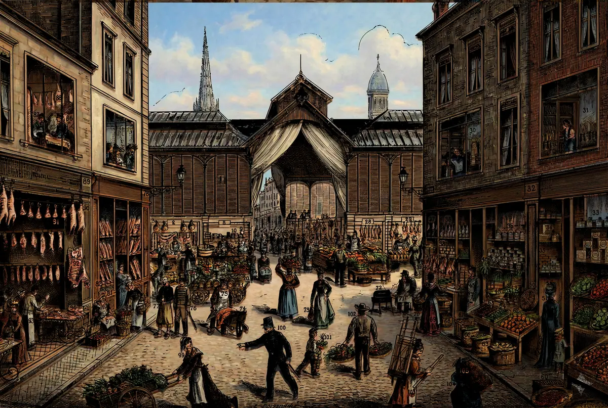
96La Merkato. — La Manjebli. 82Le Marché. — Les Comestibles. 961. — La maxim multa komercisti qui livras a ni la vari necesa por nia nutrado su asemblas sub la
halo dil
kovrita merkato od en la vicina stradi.
821. — La plupart des commerçants qui nous fournissent les denrées nécessaires à notre nourriture se trouvent réunis sous la
halle du
marché couvert, ou dans les rues voisines.
962. — La
porko-karnisto , qua vendas
shinko ,
sango-sociso (4),
sociseto ,
trip- sociseto e
lardo , stacas proxim la
butro-e fromajo-vendistino , di qua l’estaleyo esas provizita per
Holandana fromaji kun reda krusto, per
Camembert-fromaji , per
Gruyère-diski (11) e per fresha
butro-bloki .
822. — Le
charcutier , qui vend le
jambon , le
boudin (4), la
saucisse , l’
andouillette et le
lard , a pour voisine la
marchande de beurre et de fromage dont l’étalage est garni de
fromages de Hollande à la croûte rouge, de
camemberts , d’énormes
pains de gruyère (11) et de
mottes de beurre frais.
963. — Avan elca,
legum-vendistino propozas a sua klientini bela
tomati ,
flor- kauli ,
salado ,
kap-kauli ,
kukurbiti ,
meloni e mem
fungi . Ma
bir-garsono, qua haltigis sua
livro-veturo kargita per
bir-bareli (22), precize avan elua estaleyo, impedas elua klienti proximeskar. Gardenistino kunportas ad elu korbedo de
artichoki .
823.— Devant elle, une
marchande de légumes offre à ses clientes de belles
tomates , des
chouxfleurs , de la
salade , des
choux pommés , des
citrouilles , des
melons et même des
champignons . Mais un
garçon brasseur, qui a arrêté sa
voiture de livraison chargée de
tonneaux de bière (22) juste devant son étalage, empêche ses pratiques d’approcher. Une jardinière lui apporte une corbeille d’
artichauts .
964. — En la merkato, l’animo esas granda, nam arivis la kloko dil
auciono-vendo (24). La
domo-mastrini (26), qui venas adibe por sua kompri, haltas pasante avan la butiko di la
trip-vendistino , por komprar
stomak-tripi o
bovyun-kapo. 824. — Sous le marché, l’animation est grande, car c’est l’heure de la
criée (24). Les
ménagères,
(26) qui viennent d’y faire leurs achats, s’arrêtent en passant devant la boutique de la
tripière , pour acheter du
gras-double ou de la
tête de veau. 975. — Grasoza
koquistulo marchandas tre bel
atuno che la
fish-vendistino qua segun sua arbitrio plu altigas sua (vendo-)preci. El recevis granda quanto de
anguili, solei, truti e
karpi. Elua
moruo e
musli esas tre fresha.
825. — Un gros
cuisinier marchande un très beau
thon à la
marchande de poissons , qui exagère ses prix à plaisir. Elle a un superbe arrivage d’
anguilles, de
soles, de
truites et de
carpes. Sa
morue et ses
moules sont très fraîches.
976. — La
pultro-vendistino , instalita proxim elu, esas tre konciencoza. Kande el vendas
dindo, ganso, anado o simpla
hanyuno, el postulas nur la justa preco.
826. — La
marchande de volaille , installée à côté d’elle, ’est très consciencieuse. Lorsqu’elle vend une
dinde. une
oie. un
canard ou un simple
poulet, elle ne demande que le plus juste prix.
977. — Ye l’angulo di la placo, sur l’unesma etajo, de poka tempo, esas instalita
tel-vendisto che qua la komprantini esas sempre certa trovar tre bela sortaro de
tablo-tuki, bok-tuki, avantali e
vishili. Sur la sama etajo,
kultelisto instalis sua laboreyo. Il akutigas la
kulteli di la vendistini en la halo e fabrikas por la gardenisti
serpi ek la maxim harda
stalo. 837. — A l’angle de la place, au premier étage, est établi un
marchand de toiles chez lequel les acheteuses sont toujours sûres de trouver un très joli assortiment de
nappes, de
serviettes,
tabliers ou
torchons. Au même étage, un
coutelier a installé son
atelier. Il repasse les
couteaux des marchandes de la halle et fabrique pour les jardiniers des
serpes en acier de première qualité.
978. — Sub ilua laboreyo, de poka tempo, esas apertita granda magazino di nutrivi. Ja lu ne plus esas la simpla e neimportanta
spic- venderio (32) olima, qua nur vendis la komunuza vari,
teo ,
chokolado bloka sukro e
sapono . Ibe on vendas irga varo,
krakanta kuki,
konservaji ,
liquori ,
rumo, konyako, kirsho, aniz-liquoro e
kuracao. Ibe on trovas vildo :
leporo ,
turdi ,
perdriki ,
qualii (42),
sovaj anado (43) o
fazano , tam facile kam exotika frukti tal quala
banani (46) ed
ananasi. 838. — Au-dessous de son atelier s’est ouvert depuis peu de temps un important magasin de comestibles. Ce n’est plus simplement la modeste
épicerie (32) d’autrefois, qui se contentait de vendre les choses usuelles, le
thé , le
chocolat , le
sucre en pain et le
savon . Ici on vend de tout, des
gâteaux secs, des
conserves , des
liqueurs ,
rhum, cognac, kirsch, anisette et
curaçao. On y trouve aussi bien du
gibier :
lièvre ,
grives ,
perdrix ,
cailles (42),
canard sauvage (43) ou
faisan , que des fruits exotiques tels que les
bananes (46) et les
ananas. 989. — Spicista
garsono tre komplezema, esas pronta por donar to quon on deziras :
konfitajo riba o quinga,
graso ,
kukombreti o salizita
sardini .
839. — Un
garçon épicier, très complaisant, est prêt à servir ce que l’on désire :
confiture (de
groseille ou de
coing),
graisse ,
cornichons ou bien
sardines salées.
98To esas tre oportuna por la
klientini , qui trovas, apud la maxim komunuza vari, la premici maxim rara e la frukti maxim saporoza : sukoza
piri ,
pruni ,
vitberi ,
persiki ,
mandeli e
nuci .
83C’est fort commode pour les
clientes , qui trouvent, à côté des choses les plus vulgaires, les
primeurs les plus rares et les
fruits les plus savoureux :
poires fondantes,
prunes ,
raisins ,
pêches ,
amandes et
noix .
9810. — La
rizo e la
lensi esas apud la kesto dil fumizita
haringi ; la
terpomo e la
fazeolo esas vicina al
pomi ,
figi (64),
sika pruni ed
avelani . On trovas en ta magazino fresha
ovi ed
olivi ; pro to
korbi e
provizo-reti esas rapidege plenigita.
8310. — Le
riz et les
lentilles sont à côté de la caisse de
harengs-saurs ; la
pomme de terre et le
haricot voisinent avec les
pommes , les
figues (64), les
pruneaux et les
noisettes . On trouve dans ce magasin des
œufs frais et des
olives ; aussi
paniers et
filets à provisions s’emplissent-ils à vue d’œil.
9811. — La
kafeo di ta bonega firmo aquiris, inter la
servistini e la
koquistini, justa reputo, nam la olda
spicisto ipsa maxim sorgoze torefaktas olu.
8411. — Le
café de cette excellente maison a acquis parmi les
bonnes et les cuisinières une véritable réputation, car c’est le vieil
épicier qui le grille lui-même avec le plus grand soin.
9812. — Ne omni adiras la merkato por provizar su. En la pitoreska cirkulado sur la stradeto qua duktas a la halo, on vidas la maxim diversa personi. Apud afabla
bucho-servisto , qua pulsas avan su
brueto , yen du permisaria soldati tote fiera vidigar sua brilant uniformo : la
husaro kun blua
dolmano e
plumoza chako, e la
zuavo-kaporalo, kun bracho bufanta e kapkovrita per
fezo. 8412. — Tout le monde ne vient pas au marché pour y faire des provisions. Dans le pittoresque va-et-vient de la petite rue qui conduit à la halle, on voit les personnages les plus différents. A côté d’un brave
garçon d’abattoir , qui pousse devant lui une
brouette , voici deux soldats en permission tout fiers d’exhiber leur brillant uniforme. Le
hussard , en
dolman bleu et
shako à plumes, et le
caporal de zouaves, en culotte bouffante et coiffé d’une chéchia.
9913. — La
panifisto , qua stacas an la solio di la
paniferio jus petrisis la pasto di sua
pano (79) e retroprenis del forno la
krecenti , la
semli e la
disko-pani qui esas en la vetrino.
8413. — Le
boulanger , qui se tient sur le seuil de la
boulangerie , vient de pétrir la
pâte de son
pain (79) et de retirer du four les
croissants , les
petits pains (32) et les
miches qui sont dans la vitrine.
9914. — Super la paniferio lojas habila
linjistino qua employas plura
brodistini . Apud elu habitas
lav-glatistino , qua amilizas la
linjaro pos lavir e sikigir ol, e qua glatigas lu per
glatigilo .
8414. — Au-dessus de la boulangerie, habite une adroite
lingère qui emploie plusieurs ouvrières
brodeuses . Auprès d’elle demeure une
blanchisseuse-repasseuse , qui amidonne le
linge après l’avoir lavé et fait sécher, et qui le repasse avec un
fer .
9915. — En la
karnerio , situata sur la teretajo, on vendas omnasorta
karni, muton- karno ,
bov-karno o
bovyun-karno kom
muton-kruri, bifsteki, rostaji e
kotleti. La
bucho-garsono dissekas ta omna karni ed aparte pozas la
medul-osti . Ye la pordo di la karnerio esas
ostro-vendistino qua vendas
ostri . El apertas oli se on deziras lo.
8415. — Dans la
boucherie , située au rez-de- chaussée, on vend toutes sortes de
viandes,
mouton ,
bœuf ou
veau , sous forme de
gigots, biftecks, rôtis et
côtelettes. Le
garçon boucher détaille toutes ces viandes et met de côté les
os à moelle. A la porte de la boucherie se tient une
écaillère qui vend des
huîtres . Elle les ouvre, si on le désire.
9916. — Ta omna komercisti pagas patento o plaso-taxo; pro to la
policisto senkompate persekutas la kompatinda
legum-kolportistini qui konkurencas li disportante per sua vetureti
karoti, rafaneti, napi, poreli od
asparaga fasketi, fresha pizi, spinati, oxalo, kreso e
petroselo. 8416. — Tous ces commerçants paient une patente ou un droit de plaçage; c’est pourquoi l’
agent de police pourchasse impitoyablement les malheureuses
marchandes des quatre saisons qui leur font concurrence en transportant dans leurs voitures des
carottes, des
radis, des
navets, des
poireaux ou bien des
bottes d’asperges, des
pois verts, des
épinards, de l’
oseille, du
cresson et du
persil. 9917. — La puero qua vendas
alio ed
onyoni, tre bone savas, ke anke lu, ne darfas vendar sua vari proxim la merkato. Il fugas, kurante kun risko renversor la korbo de
krabi, kankri e
kreveti di la
vendisto di
langusti e
homardi. 8517. — Le petit garçon qui vend de l’
ail et des
oignons sait bien que lui non plus ne doit pas vendre sa marchandise auprès du marché. Il s’enfuit en courant, au risque de renverser le panier de
crabes, d’
écrevisses et de
crevettes du
marchand de
langoustes et de
homards. 10018. — Omni agitas su e bruisegas; ma to ne impedas audar klare la voco dil kolportanta
vitristo , nek la klamo dil
karbonisto qua jus livis por kelka instanti sua chareto por livrar
karbona sakedo .
8518. — Tout ce monde s’agite et fait un bruit effroyable, mais cela n’empêche pas d’entendre distinctement l’appel du
vitrier ambulant, ni le cri du
charbonnier qui vient de quitter un moment sa petite charrette pour livrer un
sac de
charbon. 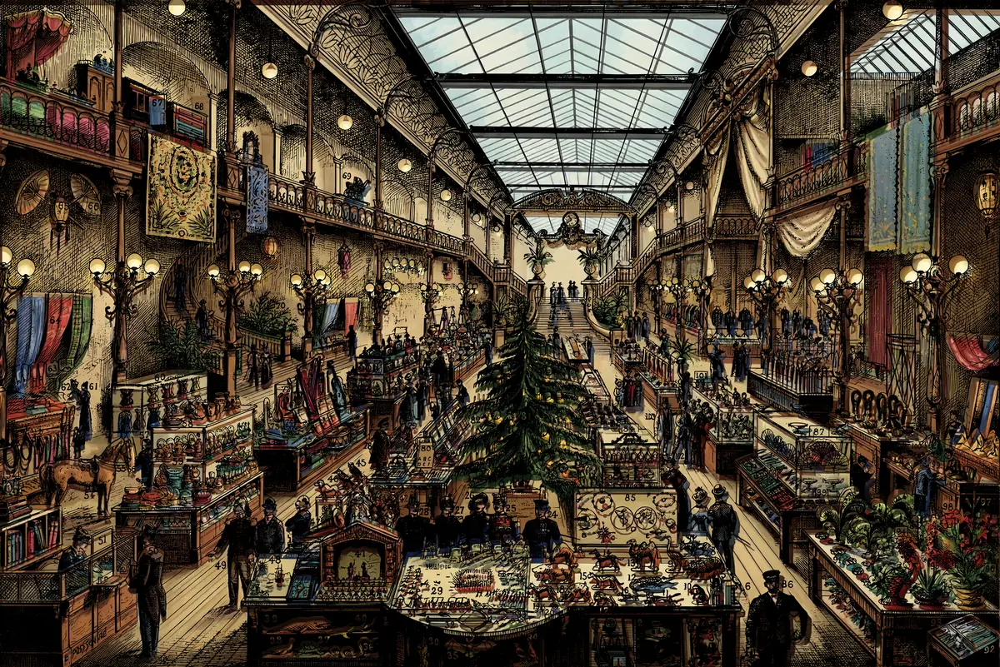
101TABELO No 16 La Granda Magazino. — La Bazaro. — La Ludili. 86TABLEAU No 16 Le Grand Magasin. — Le Bazar. — Les Jouets. 1011. — La nov yaro proximeskas. La granda magazini preparis sua estaleyi de
ludili e novyaral donaci.
861. — Le nouvel an approche. Les grands magasins ont préparé leurs étalages de
jouets et de
cadeaux pour les
étrennes. 101Me demandis de mea avulo, ke il duktez me aden la bazaro por vidar ta bel expozeyo, ed il konsentis lo.
86J’ai demandé à mon grand-père de me conduire au bazar pour voir cette belle exposition et il y a consenti.
1012. — Unesme ni haltis avan bel armo-skudi, qui kontenas
fusilo,
kepio,
sabro,
espado-zono e paro de
epoleti, o
kasko,
kuraso (3) e
pistolo . To omna interesis me multe plu kam la
lum-projektili (2).
862. — Nous nous sommes d’abord arrêtés devant de jolies panoplies, qui comprennent un
fusil, un
képi, un
sabre, un
ceinturon et une paire d’
épaulettes, ou bien un
casque, une
cuirasse (3) et un
pistolet . Tout cela m’intéressait beaucoup plus que les
lanternes magiques (2).
1013. — En la sama fako esis
facionero en sua
garito ; il semblis facionar avan tota menajerio kartona. Quante multa animali esis ibe :
Papagayo sur sua perchilo,
rinocero (7) kun korno sur la nazo,
rentiro ,
strucho ,
simio krokanta nuco,
foxo forportanta hanino,
krokodilo beanta per enorma maxili,
kamelo , eleganta
levriero ,
pantero , pose du bestii quin me ne konocis e qui esas, segun dico,
vizelo (16) e
hieno . Anke ibe esis
leopardo (18) e
volfo ; tote proxime esis miniona
rateti e mikrega
museti kauchuka. Laste
hipopotamo e
droplein
medaro giboza finis la kolektajo. Me restabus ibe dum plu multa hori se ne esabus apude splendida kampeyo plena de
plomba soldati qua atraktis mea atenco.
863. — Il y avait dans le même rayon un
factionnaire dans sa
guérite ; il avait l’air de monter la garde devant toute une ménagerie en carton. Que d’animaux il y avait là ! Un
perroquet sur son perchoir, un
rhinocéros (7) avec une corne sur le nez, un
renne , une
autruche , un
singe(10 croquant une noix, un
renard qui emportait une poule, un
crocodile qui ouvrait ses énormes mâchoires, un
chameau , un élégant petit
lévrier , une
panthère , puis deux bêtes que je ne connaissais pas et qui sont, paraît-il, une
belette (16) et une
hyène . Il y avait encore un
léopard (18) et un
loup ; tout auprès se trouvaient de mignons petits
rats et de minuscules petites
souris en caoutchouc. Enfin un
hippopotame et un
dromadaire bossu terminaient la collection. Je serais resté là pendant des heures s’il n’y avait eu à côté un magnifique camp, rempli de
soldats de plomb , qui attira mon attention.
1024. — Mea avulo, qua esas
invalida e qua devis livar l’armeo pro
vunduro qua igis lu obtenar la
militistala medalio, tre prizas naracar a me la
kampanii en qui il partoprenis. Il esis felica explikante la diversa movadi di la mikra armeo miniatura. Grupo de vera soldati vizitanta la bazaro :
jenio-soldato ,
Alpala-chasero kapkovrita per
beredo,
mayor-serjento di infantrio e
artilrio-serjento kun ora
galono sur maniko, haltis proxim ni por askoltar la expliki.
864. — Mon grand-père, qui est
invalide et qui a dû quitter l’armée à la suite d’une
blessure qui lui valut la
médaille militaire, aime beaucoup à me raconter les
campagnes auxquelles il a pris part. Il fut heureux de m’expliquer les différents mouvements de la petite armée en miniature. Un groupe de vrais soldats qui visitaient le bazar, un
soldat du génie , un
chasseur alpin coiffé d’un
béret, un
sergent-major d’infanterie et un
maréchal des logis d’artillerie, qui avait un
galon d’or sur sa manche, s’arrêtèrent près de nous pour écouter les explications.
1025. — Mea avulo, tote fiera, pro ke il havis tante brilanta audantaro, improvizis kompleta batalio-plano.
875. — Grand-père, tout fier d’avoir un si brillant auditoire, improvisa tout un plan de bataille.
102La fortifikita urbo, kun sua
rempari e
fosati, esis siejata da l’
armeo enemika, qua, pos longatempa
bombardado, esis pronta por
asaltar. Ma la
siejati koaktata pro la hungro, probabis
ekasaltar a la
kampeyo dil
siejanti. Pos repulsir l’
atako per obstinanta
kombato cirkum la
tendaro, la
vinkinta siejanti lansis sua
eskadroni por persequar la
vinkita atakinti. Ici
retretis kovrante la
kombat-agro per
mortinti e
vunditi.
Kamilisti forportis ta lasti aden l’
ambulanco por flegigar li da la
kirurgiisto.
87La ville forte, avec ses
remparts et ses
fossés, était assiégée par l’
armée ennemie qui, après un long
bombardement, se disposait à donner l’
assaut. Mais les
assiégés, poussés à bout par la famine, avaient tenté une
sortie contre le
camp des
assiégeants. Après avoir repoussé l’
attaque dans un
combat acharné autour des
tentes, les assiégeants
vainqueurs lançaient leurs
escadrons à la
poursuite des assaillants
vaincus. Ceux-ci battaient en
retraite, couvrant le
champ de bataille de
morts et de
blessés. Des
brancardiers emportaient ces derniers à l’
ambulance pour les faire soigner par le
chirurgien. 102Malgre la heroala rezisto di kelka
batalioni qui formacabis
quadrato, la
vinkeso esis komplein pleta, la cetero dil armeo
fugis, livante multa
kaptiti. L’enemiko iris parfacor sua
vinko okupante la urbo. Forsan to esos la fino di la kampanio e, pos
armistico, esos posibla signatar
paco-kontrato.
87Malgré l’héroïque résistance de quelques
bataillons qui s’étaient formés en
carré, la
défaite était complète, le reste de l’armée prenait la
fuite, abandonnant de nombreux
prisonniers. L’ennemi allait couronner sa
victoire en s’emparant de la ville. Ce serait peut-être la fin de la campagne et, après un
armistice, on pourrait signer le
traité de paix. 1036. — La yuna soldati, qui ridis askoltante la pitoreska naraco dil veterano demandis de lu kelk altra expliki. Pri me, me cirkumiris la vendeyo por regardar bel
arbalesto ed
arko (33) kun lua
flecho . Ibe me trovis altra kolektajo de bestii : du
uceli kantera : automata
naktigalo e
silvio kantanta per tota fauco, e serio de stranja bestii :
vespertilio ,
boao ,
tortugo ,
mar-hundo ,
baleno e
sharko bodrucha.
876. — Les jeunes soldats, qui riaient en écoutant le pittoresque récit du vétéran, lui demandèrent quelques autres explications. Moi, je fis le tour du comptoir pour regarder une belle
arbalète et un
arc (33) avec sa
flèche . Je trouvai là une autre collection d’animaux : deux
oiseaux chanteurs , un
rossi gnol et une
fauvette mécaniques qui chantaient à plein gosier, et une série de bêtes bizarres,
chauvesouris ,
serpent boa ,
tortue ,
phoque ,
baleine et
requin en baudruche.
1037. — Me ne longe haltis por kontemplar li, nam me videskis lo revata : belega
marionetteatro kun splendida
dekoruri e ravisanta
kurteno reda. Sur la
ceno, du aktori semblis plear
rolo en tre interesanta
teatrajo, nam la mikra
spektanti kartona instalita en la lojii o sidanta sur la
stulegi ed en la
partero dop l’
orkestro-chefo, aplaudis vivace.
887. — Je ne m’arrêtai pas longtemps à les contempler, car j’avais aperçu l’objet de mes rêves, un superbe
théâtre de marionnettes, avec de magnifiques
décors et un ravissant
rideau rouge. En
scène, deux
acteurs avaient l’air de jouer un
rôle dans une
pièce fort intéressante, car les petits
spectateurs de carton installés dans les
loges ou assis aux
fauteuils et au
parterre derrière le
chef d’orchestre, applaudissaient vivement.
103Regretinde, ta teatro kustis tre chere.
88Malheureusement, ce théâtre coûtait très cher.
1038. — Cetere, selektar la ludili esis desfacila, nam en la vetrini esis amasita omnasorta ludili :
Arlekino ,
Pulchinelo ,
Pierrot ,
otusi brandisanta la ali, siflera
merli , aboyera
pudeli,
fonografilo e
ludili di pacienteso. Un de ca ludili tre amuzis me : ol reprezentis
navala kombato en qua
navo esis atakata da
pirati proxim lando plantacita per
kokosieri.
888. — D’ailleurs, le choix des jouets était grand, car sur les vitrines toutes sortes de jouets s’entassaient :
Arlequin ,
Polichinelle ,
Pierrot , des
hiboux battant des ailes, des
merles siffleurs, des
caniches qui aboient, un
phonographe et des
jeux de patience. Un de ces jeux m’amusait beaucoup ; il représentait un
combat naval dans lequel un
navire est attaqué par des
pirates près d’un pays planté de
cocotiers. (*) Videz la tabelo No 6.
(*) Voir Tableau 6.
1049. — Me povis tre facile kontemplar ta omna marveli, nam nur poka personi asistis en la magazino, apene kelka flaneri,
dragono ed
inkasisto qua prizentis
trato che la chefa
kaso .
889. — Je pouvais contempler très facilement toutes ces merveilles, car il n’y avait que peu de monde dans le magasin, à peine quelques rares flâneurs, un
dragon , et un
encaisseur qui présentait une
traite à la
caisse principale.
10410. — Me questionis mea avulo pri l’uzo di la libri pozita sur tabuli dop la
kasistino ; il respondis a me ke li esas
kontado-libri.
8810. — Je demandai à mon grand-père à quoi servaient les gros livres placés sur des rayons derrière la
caissière ; il me répondit que c’étaient les livres de
comptabilité. 10411. — Livante la fako di la ludili, ni adiris la seliferio donar regardo a la
seli ,
estribi ,
bridi ,
morsi e
kravachi. Dum ke la
fakestro donis kelk informi a mea avulo, me iris regardar l’estaleyo di la
porcelani e
kristali ube esas bela
saladuyi e delikata
tekruchi .
8811. — En quittant le rayon des jouets, nous sommes allés à la sellerie jeter un coup d’œil sur les
selles , les
étriers , les
brides , les
mors et les
cravaches. Pendant que le
chef de rayon donnait quelques renseignements à grand papa, j’ai été regarder l’étalage des
porcelaines et des
cristaux , où il y avait de jolis
saladiers et de fines
théières .
10412. — Por irar sur l’unesma etajo, ni pasis dop la vetrino dil
korseti , apud la kalzovendeyo, ube esis estalita tre bela
kalzoni . Proxime,
komizino igis selektar da
komprantino bel silka
texuri (64).
8912. — Pour aller au premier étage, nous passâmes derrière la vitrine des
corsets , près de la bonneterie, où étaient étalés de très beaux
caleçons . A côté, une
demoiselle de magasin faisait choisir à une
acheteuse de jolis
tissus (64) de soierie.
104Acensante per l’eskalero, me remarkis ke la magazino esas dekorita per Japoniana
lanterni (65),
parasuni e grandega
palmieri (70).
89En montant l’escalier, j’ai remarqué que le magasin était décoré de
lanternes (65) japonaises, de
parasols et d’énormes
palmiers (70).
10413 . — Sur l’unesma etajo, ne esis multo videnda; nur mobli
,
ferkesti (67),
komodi (68) infanto-veturi (69). Ma l’ensembla vido dil magazino esis tre
amuzanta. 8913. — Au premier, il n’y avait pas grand’chose à voir : rien que des meubles
, des
coffres-forts (67), des
commodes (68) et des
voitures d’enfant (69). Mais la vue d’ensemble du magasin était très amusante.
10514. — Ye nia pedi, me vidis la muzik-instrumenti :
harpi ,
gitari ,
mandolini ,
valvo-korneti ,
klarioneti , violini kun lia
arketo e mem
tamburego . Kelke plu fore, an la paper-fako,
studento marchandis de la
komizo kayeruyo. Proxim li, me distingis bel
alfabet-libro .
8914. — A nos pieds, je voyais les instruments de musique :
harpes ,
guitares ,
mandolines ,
cornets à piston ,
clarinettes , violons avec leur
archet et même une
grosse caisse . Un peu plus loin, au rayon de la papeterie, un
étudiant marchandait une serviette au
commis . Près d’eux, je distinguai un bel
alphabet .
105Meze dil magasino esis erektita alta
Kristnasko-arboro tote provizita per bujii, kozeti ed omnasorta ludili :
ligna kavali ,
pupei , e. c..
89Au milieu du magasin se dressait un grand
arbre de Noël tout garni de bougies, de bibelots et de jouets de toute sorte :
chevaux de bois ,
poupées , etc.
105La
parfum-vendeyo (84) kun sua
dentifrici e diversa
parfumi difuzis tre bon odoro qua exhalesis ad ni.
89La
parfumerie (84), avec ses
eaux dentifrices et ses
parfums variés, répandait une très bonne odeur qui montait jusqu’à nous.
10515. — Pro ke mea avulo komencis judikar tro longa la tempo, ni decensis per la grand eskalero. Il kelke haltis avan
astronomio-tabelo reprezentanta, il dicis a me,
kometi (a),
lun-e sun-eklipsi (b), vento-rozo kun la
quar punti kardinala (c) (Nordo, Sudo, Esto e Westo), mapo di la du
mi-sferi d), la
planeti (e) e la
sun-sistemo (f). Me komprenis nulo en to omna, e me esis multe plu interesata da la galonizita livreo di
garsono livrista qua pasis, e dal bela
ventizili qui esis apud me, proxim la
monetuyi e la
portfolii .
8915. — Comme grand-père commençait à trouver le temps long, nous sommes redescendus par le grand escalier. Il s’arrêta un instant devant un tableau d’
astronomie représentant, m’a-t-il dit, des
comètes(a), des
éclipses(b) de lune et de soleil, une rose des vents avec les
quatre points cardinaux(c) (le
nord, le
sud, l’
est et l’
ouest), une carte des deux
hémisphères(d), les
planètes(e) et le
système solaire(f). Je ne comprenais rien à tout cela, et je m’intéressais beaucoup plus à la livrée galonnée d’un
garçon livreur qui passait et aux jolis
éventails qui étaient près de moi, à côté des
porte-monnaie et des
portefeuilles .
10516. — Me anke admiris sur la estaleyo
plumi , e
zono-bukli , la bela
flori artificala gracioze aranjita en korbi. La
violi,
jilplein
flori,
hiacinti ,
geranii ,
lilii e
kapuchini esis tre bone kopiita.
9016. — J’admirai aussi sur le comptoir des
plumes et des
boucles de ceinture, les jolies
fleurs artificielles gracieusement disposées dans des corbeilles. Les
violettes, les
giroflées, les
jacinthes , les
géraniums , les
lis et les
capucines étaient très bien imités.
106Donacajo de mea avulo. 10617. — Me pregis mea avulo komprar por me un de la
dento-brosili qui esis en buxo apud
har-pingli . Il konsentis e me iris ipsa pagar mea komprajo an la kaso, proxim qua on preparis importanta
expediajo (100) por
kliento .
9017. — Je priai mon aïeul de m’acheter une des
brosses à dents qui se trouvaient dans une boîte près des
épingles à cheveux . Il y consentit et j’allai moi-même payer mon emplette à la caisse, auprès de laquelle on préparait une
expédition (100) importante pour un
client .
10618. — Subite lejera trublo eventis inter la personi haltinta proxim l’artala
bronzaji .
Furtisto esis jus kaptita, en sua delikto, da
inspektisto (103), dum ke il probis spoliar ulu. On sorgis venigar policisto por
arestar lu, e jus kande ni ekiris, la deliktinto esis duktata aden la karcero.
9018. — Tout à coup une légère agitation se produisit au milieu d’un groupe de personnes arrêtées près des
bronzes artistiques. C’était un
voleur qui venait d’être pris en flagrant délit par un
inspecteur (103), pendant qu’il essayait de dévaliser un monsieur. On fit appeler un agent de police pour procéder à son
arrestation et, au moment où nous sortions, le malfaiteur était emmené au poste.